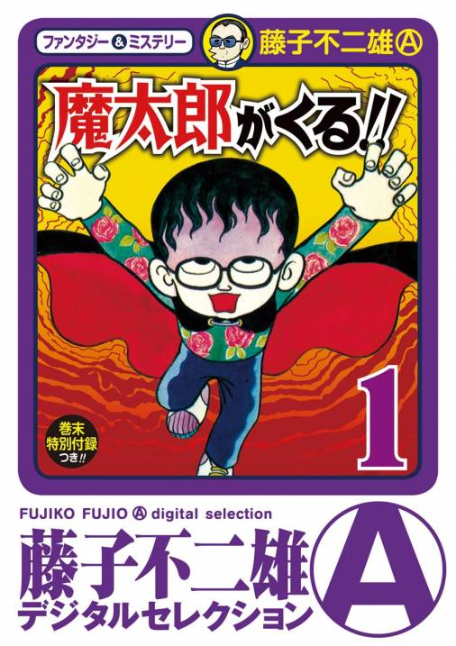
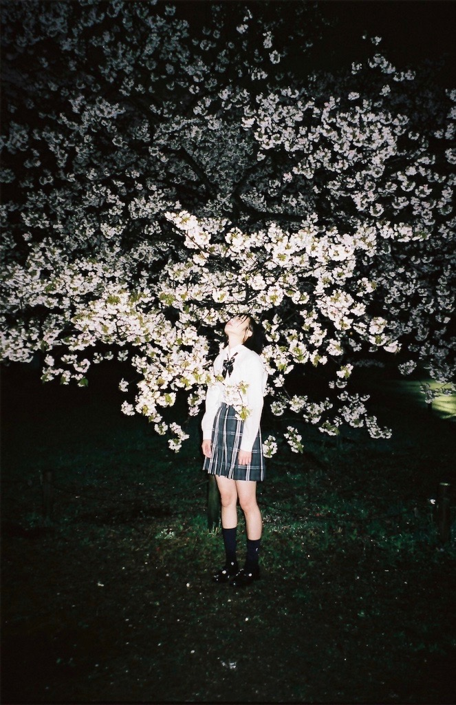

ただ、ひたすらに。。。
価値の無い日常の垂れ流し
ビーチッコ
本気の掃除は50日間かかる。
by ショーンＹ（元ドットコム(.com)和尚）
あのちゃん

過去へのリンク
ツイッター
柿太郎の日々刻々
堕落blog日記（水槽情報）はここ
日々ノ駄文
-----2020/12/31
快晴。
朝晩冷える。
二度寝で昼前に起床。
すこし掃除。
加湿器を清掃メンテ。
スーパーで買い物。
今シーズンはエアコンの暖房モードを稼働せずに
グラファイトヒーター電気ストーブ（アラジン）のみで
室内の暖をとっているが、ほぼほぼ快適。
ネット映画「グリーン・インフェルノ」（APV）みる。
森林伐採を阻止するためにペルーの山奥に乗り込んだ
アメリカの学生運動家達を乗せた飛行機が不時着して
生き残った学生達も現地の食人族に捕らえられて
まさに食人族の餌食となる話。
目を背けたくなるほどの残酷なシーンの連続。
どうやら年越しに観る映画ではなかった気がする。
無人島の年越しイベントに参加する。
おわり。
-----2020/12/30
くもり、雨、くもり。
夜には風が強くなる。
ネット映画「散歩する侵略者」（AVP）みる。
黒沢清監督なので期待したが微妙な内容。
宇宙からの侵略ものを描いたSF作品なのに全体的に安っぽい。
役者の演技は良かったが陳腐な演出がダサい。
実は巨乳の長澤まさみが出てた。
テレビ映画「50回目のファースト・キス」（録画）みる。
山田孝之と長澤まさみが共演。
どうやらアメリカ映画のリメイク作品らしい。
交通事故の後遺症で前日の記憶をすっかり忘れてしまう脳の障害を背負った
女性との恋を成就させるべく何度も女性と出会い愛情を注ぐ男の話。
途中で早送りしてしまったので評価不可。
TVドラマ「岸辺露伴は動かない」（録画）みる。
3話「D．N．A」
泉京香を演じた飯豊まりえの魅力がキュートな役どころと
奇抜で可愛い衣装の着こなしで一気に炸裂した感じ。
楽しいドラマだった。
おわり。
-----2020/12/29
晴れ。
TVアニメ「ジョジョ ダイヤモンドは砕けない」（録画）みる。
15話、岸辺露伴が仗助にボコボコにされる。
16話、承太郎と仗助のコンビが凶暴なネズミと対決。
TVドラマ「岸辺露伴は動かない」（録画）みる。
1話「富豪村」
露伴役の高橋一生の演技と髪型とバンダナと衣装で岸辺露伴を見事に再現。
泉京香（飯豊まりえ）が丸顔で美人でフリフリな衣装で素晴らしい。
富豪村の一究も不気味。
泉京香のヘブンズドアがファッション雑誌みたいなページ構成で面白。
「だが、断る。。。」
「一つ教えてやろう。
全てのマナーにおいて最大のマナー違反。
それは、マナー違反をその場で指摘することだ。」
この1話目のクオリティーは素晴らしい。
2話「くしゃがら」
志士十五役の森山未來が大げさに役作りし過ぎでまとまり悪かったな。
夜中、あのちゃんが久々にツイキャス。
語ったり、ギターで弾き語りしたり、即興で曲作ったり、
の子（神聖かまってちゃん）とコラボ・キャスしたり、
アイス食ったりして年末配信特大号SPって感じ。
昼寝しなかったので早寝。
おわり。
-----2020/12/28
晴れ。
経済活動を休みにする。
洗濯。
テレビ映画「落下の王国」（録画）みる。
両足に大怪我をして入院中のベッドから動けない状態になった
映画のスタントマンがいろいろあって失意の末に自殺を図るために
同じ病院に入院していた少女に架空の物語を聞かせて
自らが自殺するための睡眠薬を盗み出して来るように
巧みに仕向ける。
奇抜な衣装と映像が美しい。
夜、某オタクの誘いに乗って
「ダンス☆マン」なる歌手を中心としたバンド演奏を見に行く。
小規模ながら立地もよく設備が整ったコンサートホール。
問診票と連絡先の記入して入場、
ホール内はマスクは常時着用、
前後左右の座席を間引きした指定席、
演奏中は起立禁止、
ある意味、異空間だった。
深夜帰宅。
風呂に入って就寝。
おわり。
-----2020/12/27
晴れ。
洗濯。
ゴッドタンなど録画消化。
夜中、スーパーで食料品を買い物。
眠れない。
ネット映画「残酷で異常」（APV）みる。
死者があの世に行く途中で死者の魂を浄化する為の
教習所みたいな奇天烈な場所で自分が犯した罪が理解できるまで
死に至るシーンを何回も繰り返し追体験する試練に抗った男の話。
事の真相が解明するに連れて状況が二転三転する話の展開がユニーク。
制作にお金はかけていないが安っぽくない演出が見事。
主演のおっさんを始め役者の演技も素晴らしい。
おわり。
-----2020/12/26
晴れ。
洗濯。
昼間、ハンディ掃除機（ダイソン）と
ロボット掃除機（パナ）をフル活用して「中」掃除。
テレビ映画「華麗なるギャッツビー」（録画）みる。
レオナルド・ディカプリオ主演のドラマ。
大豪邸に暮らして優雅な日々を送る正体不明の青年が
富豪の人妻となった元恋人と復縁すべく
その愛のために全てを捧げようとする。
過去の愛を支えにのし上がる青年の儚くも大きな希望。
ディカプリオあるあるは悲劇的な結末。
テレビ映画「レヴェナント: 蘇えりし者」（録画）みる。
レオナルド・ディカプリオ主演の復讐劇。
毛皮狩りの案内役の男が一行を襲撃してきたインディアンから
逃走途中に巨大なクマに襲われて瀕死の重傷を負ってしまう。
クマに喉を切られて声も出せず足首も折れて自力では全く動けない声も出せない状態になる。
ある男の裏切り行為によって男に同行していた最愛の一人息子が殺されて
自身も死にかけるが、雪山を這うように彷徨いながらも生き存える。
ディカプリオが身体を張って挑んだであろう壮絶なサバイバルシーンに驚く。
ディカプリオの役者としての力量の高さを思い知る作品。
おわり。
-----2020/12/25
晴れ。
在宅にて経済活動。
午前、ネット商談。
ネット映画「ザ・ファブル」（APV）みる。
岡田准一主演の漫画原作のアクション映画。
無敵の殺し屋が親方の命令で普通の暮らしに馴染みつつも
ヤクザの内輪もめ抗争に巻き込まれしまう話。
ギャグは寒いが間延びせずにテンポ良く話が進む。
本当に漫画みたいでぼちぼち面白かった。
凶暴なヤクザを演じた柳楽優弥の怪演が見どころ。
ネット映画「哭声／コクソン」（APV）みる。
韓国のホラー映画だが國村隼が重要な役で出演。
物語の舞台となった山間部の長閑な風景と
猟奇的な殺人現場などのショッキングな映像が
交錯しながら徐々に悪霊とか悪魔とか超常現象を伴う
現実離れした狂気の世界へと嵌っていく。
神と悪魔、加害者と被害者の関係性が崩壊する終盤の展開に混乱するが、
2時間半があっという間に過ぎた。
國村隼の不気味な演技は夢に出るレベル。
おわり。
-----2020/12/24
晴れ。
朝晩冷える。
朝、パンを食べる。
今年最後の通勤。
午後、外出先で経済活動。
帰宅後、ネットMTG。
夕刻から一気に冷える。
風邪の予感。
早寝希望。
おわり。
-----2020/12/23
晴れ。
洗濯。
在宅にて経済活動。
午後、ネットMTG×2。
テレビ映画「プルーフ・オブ・ライフ」（録画）みる。
メグ・ライアン、ラッセル・クロウ共演。
反政府ゲリラに人質に取られたダムの技術者を救い出す話。
いろいろとよくわからない話だった。
無人島でカブの一部で売却して少し儲ける。
水槽の水換え。
ガラス面の苔取り。
おわり。
-----2020/12/22
晴れ。
朝、在宅にて経済活動。
早くからネットMTG。
昼に通勤。
午後、オフィスにて経済活動。
帰宅途中、いつもの理髪店で散髪。
頭が寒くなる。
スーパーで食料品を買い物。
アニメ「ジョジョ ダイヤモンドは砕けない」（録画）みる。
13話、14話。
ジョースターと透明な赤ちゃん。
漫画家の岸辺露伴が登場。
風呂に入って就寝。
おわり。
-----2020/12/21
晴れ。
燃えるゴミのゴミ出しに成功。
朝風呂。
在宅にて経済活動。
ネットMTG。
ネットMTG。
ネットMTG。
ダイソンの掃除機を分解掃除。
ネット映画「監視者たち」（APV）みる。
韓国映画。
犯罪容疑者を徹底的に監視・追跡して犯行の真相に迫る
特殊捜査部門に配属された女性刑事の視点を通して
巧妙な犯行を繰り返す犯罪組織のリーダーを追い詰める刑事達を描く。
話のアイデアがユニーク。
後半、ハリウッド映画みたいなあるある展開になるが
スリリングなチェイスが続いて面白い。
早寝。
おわり。
-----2020/12/20
晴れ。
6時半に起床。
7時過ぎに日用品が届いた。
大量のレッドブルを補充。
テレビ映画「スカイスクレイパー」（録画）みる。
ドウェイン・ジョンソン主演のアクション。
悪党たちに占拠された香港の超高層ビルから
高層階に取り残された家族を救い出すために
悪戦苦闘する筋肉大男の話。
バカ系のあるあるだらけの演出。
テレビ映画「デッド・リミット」（録画）みる。
ピーター・ウェラーとダリル・ハンナの共演。
トム・ベレンジャーも出てる。
ルーマニアのアメリカ大使館を占拠したテロ集団に抗う
おっさんと訳あり美人プログラマー。
この映画は前にみたがそれほど面白くない。
ネット映画「The Witch 魔女」（APV）
パク・フンジョン監督の韓国映画。
SF的アクション。AKIRA的要素もある。
遺伝子操作で生み出された超人的能力を秘めた19歳の娘の運命。
話の展開は漫画的であるが切れのある映像と演出が巧み。
特にアクション・シーンのスピード感とクオリティーが素晴らしい。
全く飽きずに画面に集中した。
全てにおいて日本映画には到底真似できないレベルの作品。
とにかく最高の映画だった。
続きが楽しみ。
おわり。
-----2020/12/19
晴れ→くもり。
昨晩11時ころに気絶睡眠（寝落ち）して
午前2時前に目を覚ました。
その後、眠れず。
朝、洗濯。
その後、朝風呂に入った後、仮眠。
洗濯機の洗濯槽を専用洗剤で洗浄。
テレビ映画「デモリションマン」（録画）みる。
シルベスター・スタローン主演のバカSF。
ウェズリー・スナイプス、サンドラ・ブロックが共演。
すべてがバカ。
お金をかけたバカ。
バカ最高。
テレビ映画「家族ゲーム」（録画）みる。
森田芳光監督、松田優作主演の家族ドラマ。
温度感のないクールな映像表現と
淡々としたカット割によるリズムが特徴的。
心理的にも物理的にも登場人物が正面から向き合わず、
常に正面（カメラ）を向いた演出が演劇みたいだが、
映劇とは異なり台詞ではなく映像で語る作品。
映画「ザ・フォーリナー/復讐者」（APV）みる。
ジャッキー・チェン主演のスリラーアクション。
イギリスで起きた爆弾テロの巻き添えで
最愛の娘を失った初老の中国人が
元特殊部隊の知見と身体能力を活かして
テロの実行犯に復讐を果たす話。
とにかくジャッキーが強くてカッコイイ。
トランスポーターのジェイソン・ステイサムみたいな戦闘力。
園芸活動。
食べ残った柿の種を水槽からトリミングした水草の束に
埋めていたら種が一つきれいに発芽したので鉢に植え替えてみた。
この芽はいつか柿の木になるのだろうか。
週末の割に早寝。
おわり。
-----2020/12/18
快晴。
陽当りモード。
在宅にて経済活動。
午前、ネットMTG。
午後、ネットMTG×3。
水槽活動。
水換えと発酵式のCO2添加用ペットボトルの中味を入れ替え。
砂糖水にドライイーストをまぶして発酵を促す。
テレビ映画「デッド・カーム/戦慄の航海」（録画）みる。
ニコール・キッドマン主演のサスペンス。
航海中のヨットに漂流して乗り込んできた
サイコパスな青年にヨットを乗っ取られてしまう夫婦の災難。
お約束通りの展開。特に面白味はなかった。
テレビ映画「マーヴェリック」（録画）みる。
メル・ギブソン、ジョディ・フォスター共演の西部劇コメディー。
ふざけた詐欺師達がポーカー大会での金儲けを企む。
馬鹿らしくて楽しい。
迂闊に寝落ち。
おわり。
-----2020/12/17
快晴。
日中は陽が当たると温かいが
陽が陰ると急に冷え込む。
朝風呂。
在宅にて経済活動。
朝、ネットMTG。
MTG中、ノートPCのスピーカーが突然バグって
“ビーーーー！”とノイズが鳴り続けて焦った。
この現象は心霊現象と言えよう。
つまり、テレワークを主体とした経済活動の
生命線となっているノートPCに何らかの霊体が
憑依した事がスピーカーが暴走するバグの原因ではないかと推測される。
これは霊体からの何らかのメッセージ、もしかしたら
コロナを甘くみていた日本社会に対する警告なのかもしれない。
テレビ映画「僕はイエス様が嫌い」（録画）みる。
東京から祖母の暮らす田舎に引っ越してきた少年が
転校先のキリスト教を信仰する小学校での
友人との出会いと悲しい別れを描く。
残酷な運命というか、鮮明な夢を描いたような不思議な作品。
昨晩、就寝前にスマホ「GALAXY S20+」（SC-52A）の
Android OSをバージョン・アップした。
ドコモの親切心でバージョンアップ用の大容量ファイルは
Wi-Fi接続でしかスマホにダウンロード出来ない仕様になっている。
データ通信は5Gギガホなるパケット契約で現在は
上限設定がなく無制限で使えるので、大容量ファイルであろうとも
普通にデータ通信でダウンロードさせて欲しい訳ですがそれが出来ない。
今の部屋にはネット（LAN）を引いていないので
わざわざフリーWi-Fiが使える場所、例えば近くの駅とかに移動して
スマホをWi-Fiに繋いで2Gのファイルをちまちまと落とすしか
方法がないことになってしまう。
そもそも外は寒いのにダウンロードのためだけに
最寄り駅（徒歩3分）まで出向くのは億劫だ。嫌だ。
なにか別の手段がないかとネットで検索したところ
以下の方法が見つかった。
・ノートPCをスマホのテザリング経由でインターネットに繋ぐ。
・そのノートPC上で「SmartSwitch」なるアプリを起動。
・PCにスマホをUSBケーブルで繋ぐ。
・すると、PCの「SmartSwitch」アプリ上で
スマホのOSバージョンアップ用ファイルのダウンロードが可能になる。
・暫くして、PC上にファイルのダウンロードが終了すると
PCからUSBケーブルを介してスマホのOS更新が実行される。
結局はスマホのデータ通信を介してPC上に大容量ファイルを
ダウンロードしている訳だが、この方法でバージョンアップが無事に完了した。
これで「GALAXY S20+」のOSがAndroid11になった。
機能的に何がどう変わったのかはまだ不明。
おわり。
-----2020/12/16
晴れ。
夜に冷える。
朝、洗濯。
燃えるゴミを出すの忘れた。
在宅にて経済活動。
午前、ネットMTG。
午後、ネットMTG。
テレビ映画「252 生存者あり」（録画）みる。
高波などの大災害よって地下鉄新橋駅に閉じ込められた生存者の脱出劇。
役者はそれなりに頑張っているが、くさい演出の連続にしらけた。
そもそも、ちゃんと観ていなかった。
ネット映画「複製された男」（APV）みる。
注目しているドゥニ・ヴィルヌーヴ監督の摩訶不思議な映画。
真面目な歴史教師がある映画に出演していた
自分と瓜二つの役者を発見して接触を試みる。
二人は身体的な特徴は完全に一致するが
当たり前だがその在り方が異なっていた。
不思議な世界が空間を芸術的に切り取った映像と共に淡々と描かれる。
終盤に緊張感がピークに達するが、ラスト数秒の展開で衝撃を受けて終わる。
ドラマ「刑事コロンボ ルーサン警部の犯罪」（録画）みる。
スタートレック（宇宙大作戦）のカーク船長が犯人役で出演。
役者の演技にノリ・ツッコミでアリバイ崩し。普通。
おわり。
-----2020/12/15
晴れ。
夜に冷える。
朝、寝起きに「あのちゃんねる」（録画）みる。
野性爆弾くっきーとあのちゃんは相性がいい感じ。
歯に執着するあのちゃんは可愛いけどやはり変人。
午前、外出して経済活動。
昼、立ち食いそば屋でたぬき蕎麦とインドカレー。まいう。
午後、在宅にて経済活動。
「ノギザカスキッツ」（録画）などみる。
「ジョジョ ダイヤモンドは砕けない」（録画）みる。
11話、12話。
爺さん（ジョセフ・ジョースター）も合流して
ジョジョに面白くなってきたぜ。
完全に早寝。
おわり。
-----2020/12/14
晴れ。
夜に冷える。
午前、在宅にて経済活動。
昼、通勤。
午後、オフィスにて経済活動。
少々居残り。
帰宅後「乃木坂工事中」（録画）みる。
心がなごむ。
就寝前にネット映画「ミッション:インポッシブル/ローグ・ネイション」（APV）みる。
昨夜に続いて就寝前にアマプラビデオで映画をみた。
トム・クルーズ主演のシリーズ5作目。
クルマで逃げる、走って逃げる、騙す、殴り合う、
ヘリで追いかける、騙す、殴り合う、
騙しとアクション満載のスパイ映画。
もうこうなったら話の筋はどうでもよい。
コロナ禍の状況下、
地下アイドルはいろいろと緩いので
現場（ライブ）でも頑張っている。
某オタク曰く
サンダルテレフォンに注目せよ！王道！
おわり。
-----2020/12/13
晴れ。
朝風呂。
洗濯。
テレビ映画「アクト・オブ・バイオレンス」（録画）みる。
ブルース・ウィリス出演の犯罪スリラー。
麻薬組織に結婚相手を誘拐された三兄弟が麻薬組織に戦いを挑む話。
ブルース・ウィリスは脇役だし麻薬組織の戦闘力がしょぼすぎる。
テレビ映画「アルカトラズからの脱出」（録画）みる。
クリント・イーストウッド主演。
実話を元にした脱獄劇。
脱獄準備が淡々と描かれる。
所長が思ったより凶悪な奴ではなかった。
ネット映画「ボーダーライン: ソルジャーズ・デイ」（APV）みる。
前作「ボーダーライン」の続編。
今週末にテレビ放映の予定があるが、
どうにもこうにも内容が気になってしまって
スマホの特典で加入アマ・プラの無料ビデオでみた。
アメリカ国内で発生した自爆テロの根源を絶つために
CIAの特殊工作員と元検事の暗殺者がタッグを組んで
麻薬組織の対立を煽るべく偽装工作を仕掛ける。
ボーダーラインに引き続き緊張感に満ちた素晴らしい作品。
音楽というか効果音が素晴らしい。
ドラマ「危険なビーナス」（録画）みる。
最終回。吉高由里子が出ていたから最後までみた。
遅寝。
おわり。
-----2020/12/12
晴れ。
午前中、掃除、洗濯。
水槽の水換え。
いつの間にか水草が育っている。
テレビ映画「フォーカス」（録画）みる。
ウィル・スミス主演のラブコメ。
凄腕の詐欺師と魅力的な女スリ師との恋愛模様が
詐欺を仕掛けた大仕事と共にスリリングに展開する。
章立てにタイトルをつけると
前半は出会い、仲間入り、稼ぎ、大勝負。
後半は再会、大仕事、親と子、恋人。
終盤の展開が予測できなかった。
諸々の録画消化。
おわり。
-----2020/12/11
晴れ。
完全熟睡。
在宅にて経済活動。
ネットMTG。
ネット研修。
ネットMTG。
テレビ映画「キラー・エリート」（録画）みる。
ジェイソン・ステイサム、ロバート・デ・ニーロ、
クライブ・オーウェンなど濃厚系が出演。
物語は実際の事件をベースにしているらしいが、
それぞれの流儀を貫く殺し屋達の話。
前に見た。
ドラマ「刑事コロンボ さらば提督」（録画）みる。
冒頭で殺人シーンが描かれる通常の演出パターンとは異なり、
最後まで殺人犯が誰か判らない演出で面白い。
夜、食料品を買い物。
おわり。
-----2020/12/10
曇り。
完全熟睡。
午前、歯科通院。
右下奥歯を抜歯縫合した歯茎の抜糸。
歯の検診とクリーニング。
しばらくは左右の奥歯の骨の形成を待ちつつ様子見。
次の通院は来年3月。
保険適用外のそこそこ高額治療費を支払う。
昼、チキンカツカレー。満足。
オフィスにて経済活動。
帰宅途中のヨドバシに立ち寄って
歯科通院時に歯科衛生娘に推薦された
ジェットウォッシャードルツなる歯磨き道具を購入。
「有吉の壁3時間SP」（録画）みる。
おもしれーな。
おわり。
-----2020/12/09
晴れ。
午前、外出先で経済活動。
午後、在宅にて経済活動。
ネットMTG、ネットMTG。
テレビ映画「クリミナル・ミッション」（録画）みる。
ジョン・トラボルタ出演の犯罪映画。
元クラスメートの若者たち5人が悪党に借金を返す代わりに
マフィアの親分の甥っ子を拉致監禁する羽目になる話。
タランティーノには遠く及ばないスタイリッシュな犯罪映画。
エンディングが全く予測できなかった。
テレビ映画「ミッション:8ミニッツ」（録画）みる。
デビッド・ボウイの息子ダンカン・ジョーンズ監督の二作目。
テロによる列車爆破の8分前から列車の乗客の一人に憑依して
犯人を特定してテロを防ぐミッションに繰り返し挑む軍人の話。
凝った話で面白かった。終盤はファンタジー。
おわり。
-----2020/12/08
晴れ。
日中温暖。
熟睡。
満足の睡眠。
寝起きの朝イチで「あのちゃんねる」（録画）みる。
阿佐ヶ谷姉妹と組んで阿佐ヶ谷三姉妹に扮したあのちゃん。
阿佐ヶ谷姉妹と同じピンクのドレスを見事に着こなしてた。
さすが、普段着としてパジャマを着こなす女だ。
午前、在宅にて経済活動。
昼前にクール宅急便で食料が届く。
昼、通勤。
午後、オフィスにて経済活動。
「ジョジョ ダイヤモンドは砕けない」（録画）みる。
9話、康一のスタンド「エコーズ」がアクト・ツーに進化したぜ。
10話、スタンド使いの料理人が普通にいい人だったぜ。
「ノギザカスキッツ」（録画）みる。
3期生山下美月は魔性の女。
久保史緒里は目見開き演技でコント演りきった。お見事。
おわり。
-----2020/12/07
好天。
日中温暖。
午前、在宅にて経済活動。
午後、外出。
帰宅後、ネットMTG。
ドラマ「危険なビーナス」（録画）みる。
吉高由里子が出ているから見ている。
「乃木坂工事中」（録画）みて和む。
またもや無性に自転車が欲しくなったので
ネットであれやこれやと調査。
おわり。
-----2020/12/06
くもり。
午後、都心の大型書店に出掛けて2冊購入。
テレビドラマ「逃亡者」（テレ朝）みる。
昨日に続く2夜連続前後半。
ハリソンとジョーンズが共演した映画「逃亡者」の日本版ドラマ。
逃げる役を渡辺謙、追いかける役を豊川悦司が演じた。
このドラマは普通。
話の筋書きが分かっているのでドキドキせずに安心してみた。
ドラマ「閻魔堂沙羅の推理奇譚」（録画）みる。
R-指定演じるゆすり屋が地獄に堕ちる話。
全く救いのない悪夢のようなオチ。
おわり。
-----2020/12/05
晴れ。曇り。
朝晩寒冷。
日中温暖。
8時半に起床。
朝、水槽の水換え。
ガラス面の苔取り。
午前中、掃除。
ロボット掃除機が床のホコリを収集。
加湿機のフィルターの清掃。
空気清浄機のフィルターの掃除。
やたらとホコリを収集しまくった。
テレビ映画「SPY/スパイ」（録画）みる。
スパイ物のコメディー。
メリッサ・マッカーシーという太った女優が主演、
ジュード・ロウ、ジェイソン・ステイサムなどが共演。
CAI工作員をサポートする内務分析官が現場に出て
悪党達の闇取引を阻止すべく悪戦苦闘する話。
下ネタ満載の下らないギャグというか
台詞回しがいちいち楽しい。
ジェイソン・ステイサムの役どころも愉快。
なかなか面白かった。
おわり。
-----2020/12/04
晴れ。
朝晩寒冷。
日中温暖。
洗濯。
在宅にて経済活動。
午前、ネットMTG。
午後、ネットMTG。
夕刻までオンライン・セミナーを閲覧。
菅総理が覇気のないトロ～ンとした眼差しで記者会見。
魔太郎みたい。

テレビ映画「パリより愛をこめて」（録画）みる。
ジョン・トラボルタ、ジョナサン・リース・マイヤーズが共演。
CIA工作員が活躍するバカ系アクション映画。
パリのアメリカ大使館で働く大使補佐官の青年が
傍若無人な凄腕CIA工作員とタッグを組んでテロを阻止する。
話の展開に勢いがあって面白かった。
とにかくバカ顔のトラボルタが最高。
アウディ－が高速道路を疾走するカーチェイスもなかなかで
運転手もトランスポーターみたいで渋かった。
おわり。
-----2020/12/03
曇り。
寒冷。
午前中、電車を乗り継いで移動。
ギリギリで会場に到着後、受付を済ませて話を聴く。
トンボ返りしてネットMTG。
夕刻までオンライン・セミナーを閲覧。
夕刻、近隣のブックオフでビジネス本の物色。
なにも買わず。
外に出た序にスーパーで買い物。
「ゴッドタン」（録画）みる。
芸人マジ歌選手権の予選。
ほしのディスコ（パーパー）のマジ歌が素晴らしくて驚いた。
勢いでほしのディスコのYOUTUBEをチャンネル登録してしまった。
「アメトーーク」（録画）みて風呂入って寝る。
おわり。
-----2020/12/02
曇り。
寒冷。
在宅にて経済活動。
午前、ネットMTG。
午後、ネットMTG。
その後、夕刻までオンラインセミナーを閲覧。
近隣のブックオフなどで話題のビジネス本を物色したかったが
外が寒いので外出する気が失せた。
テレビ映画「テイキング・ライブス」（録画）みる。
アンジョリーナ・ジョリー、イーサン・ホーク、
キーファー・サザーランドなどが出演。
殺した相手の人生を乗っ取ってしまうサイコパス殺人鬼と警察の対決。
知的なFBI捜査官をアンジーが演じる。
面白そうな設定ではあるが映画はつまらない。
殺人鬼に翻弄される警察があまりにも間抜けすぎるからだ。
終盤のオチにも唖然としてしまう。
この映画は役者の無駄使いだと思う。
比較的早寝。
おわり。
-----2020/12/01
快晴。
朝晩寒冷。
洗濯。
このところ洗濯と水槽、園芸くらいしか楽しみがない。
12月に突入してしまった。
在宅にて経済活動。
夕刻からネットMTG2連発。
テレビ映画「S.W.A.T. アンダーシージ」（録画）みる。
これぞB級映画の中のB級映画かもしれない。
SWATチームが麻薬取締局の突撃捜査に協力した結果、
正体不明の黒人の身柄を確保した事で謎の武装集団から攻撃される。
低予算の撮影の割には中盤までのストーリー展開はそこそこ面白かった。
知的で戦闘能力も高い黒人キャラもよかった。
しかし、後半はグダグダの展開になる。
SWATの活躍を描く割に肝心のSWATが弱い。
特に隊長が口先だけで正義感の割に弱い。気絶もする。
いろいろと残念な映画だったが嫌いじゃない。
アニメ「ジョジョ ダイヤモンドは砕けない」（録画）みる。
7話、8話。もはや、犬も歩けばスタンド使いに当たる状態。
早寝。
おわり。
-----2020/11/30
快晴。
朝晩寒冷。
朝、支度。
電車＆徒歩で都内某所の葬儀場へ移動。
経済活動を休みにして
先日亡くなった叔父の葬式に参列。
コロナの影響もあって
関東近隣に住居する親族を中心に参列。
霊前でのお焼香。
仏前でのお焼香。
霊柩車にて出棺（葬儀場内をすこしだけ移動）。
葬儀場内に併設されている火葬場で荼毘に付す。
骨を拾って骨壷に収める。
午後、徒歩＆電車で帰宅。
帰宅後、セブンで買った唐揚げ弁当を食べたら、
満腹感と疲労感が相まって急激な睡魔。
1時間ほど昼寝。
テレビ映画「エボリューション」（録画）みる。
デイビッド・ドゥカブニー、ジュリアン・ムーアが出演。
バカ系SFコメディー。
冴えない男達が地球にやってきたエイリアンを退治する話。
うとうとしながら眺めた。
さほど面白くはない。
早寝したら
午前2時に目が覚めたので
リアタイで「あのちゃんねる」（テレ朝）みてから二度寝。
おわり。
-----2020/11/29
曇り。
寒冷。
熟睡。
10時前に起床。
カブの購入を忘れる。
ドラマ「けものみち」（録画）みる。
松本清張による原作小説をドラマ化。
1982年制作の古いドラマ。
若かりし頃の名取裕子の色気が怖い。
夕寝。
おわり。
-----2020/11/28
晴れ。
8時前に起床。熟睡。
寝床関係を洗濯。
風があってすぐに乾く。
テレビ映画「運び屋」（録画）みる。
クリント・イーストウッド監督・主演。
ローレンス・フィッシュバーン、ブラッドリー・クーパー、
アンディ・ガルシアなどの個性的な役者が共演。
疎遠になっていた家族と復縁するためのカネ目当てで
ギャング組織のヘロインの運び屋になった爺さんの話。
運び屋として調子に乗った爺さんの生き様を描く一方、
ギャングの麻薬取引を摘発すべく警察の捜査が爺さんにも迫る。
クリント・イーストウッドが作った映画はもうそれだけで十分に素晴らしい。
おわり。
-----2020/11/27
くもり。
寒冷。
7時半に起床。
完全熟睡。
在宅にて経済活動。
午前、ネットMTG。
午後、外出して経済活動。直帰。
帰りに献血ルームに立ち寄って400ml献血。
3度めの正直でやっと献血に成功。
早寝。
おわり。
-----2020/11/26
晴れ。
温暖。
在宅にて経済活動。
午前中、ネットMTG。
午後の予定がなくなる。
洗濯日和。
夕刻、散歩と買い物。
テレビ映画「フラッド」（録画）みる。
クリスチャン・スレーターとモーガン・フリーマンが共演。
大雨で水没間近の町で現金輸送車から大金が奪われそうになる話。
話の展開が早くてそこそこ面白かった。
基本的にバカ映画だと思う。
海外ドラマ「刑事コロンボ 闘牛士の栄光」（録画）みる。
旅行先のメキシコで殺人事件に遭遇したコロンボは
地元の刑事と共に殺人事件の真相を暴く。
終盤のオチに不満あり。
巨乳の擬人化アイドル根本凪のインスタライブを眺める。
おわり。
-----2020/11/25
雨、くもり。
冷える。
7時半に起床。
在宅にて経済活動。
午前、ネットMTG。
昼に昨晩ネット発注したLED照明が届いたので
早速、水槽に設置してみる。
これで水草がぐんぐんと成長するはず。
夜、スーパーで買い物。
テレビ映画「スカイフォール」（録画）みる。
ダニエル・クレイグ主演のシリーズ3作目。
終盤、ボンドの故郷で最終決戦するシーンは夢現なファンタジー演出。
何度もみた。
比較的早寝。
おわり。
-----2020/11/24
くもり。
冷える。
午前3時過ぎに目が覚めてしまったので
「あのちゃんねる」（録画）みてから二度寝。
7時に起床。
午前、在宅にて経済活動。
ネットMTG、ネットMTG。
昼、移動。
歯科通院。
先週月曜に抜歯手術した右下奥歯があった箇所の抜糸。
午後、オフィスにて経済活動。
帰りに献血ルームに立ち寄ったが
昨日まで服用していた抜歯後の化膿止め（薬）がNGみたいで
またもや献血出来ず。
都心の大きな熱帯魚屋に寄り道。
LED照明などを物色。
水草が欲しくなったが何も買わず。
帰宅後、配信を聴きながらダラダラ。
ヨドバシで水槽用のLED照明をネット発注する。
明日届く。
おわり。
-----2020/11/23
晴れ。
早寝早起き。
乃木坂工事中、にけつッ!!、フィロのス亭、危険なビーナス、
などなど録画消化。
テレビ映画「ブラック・シー」（録画）みる。
ジュード・ロー主演の潜水艦スリラー。
海底に沈んだナチスのUボート内に残された金塊を奪うべく
ロシアのオンボロ潜水艦で航海に出た男たちの悲劇。
金塊に目が眩んだというか、どん底からの脱却を熱望するあまり
冷静な判断が出来なくなった主人公の船長がだめだめ。
この映画は前に見たしストーリーも覚えていた。
水槽を眺めていたら一日が終わった感じ。
本田翼の配信などを眺める。
おわり。
-----2020/11/22
晴れ。
洗濯。
テレビ映画「ダーティー・コップ」（録画）みる。
ニコラス・ケイジとイライジャ・ウッドが共演。
犯罪者が金庫に隠しているであろう大金の強奪を画策した
ダメ警官二人組の悲劇。
派手さはないが飽きさせない程度に緊張感を持続させたストーリー展開。
予想外の終盤の展開と顛末。
面白いとは言えないが不思議な魅力の映画。
テレビ映画「ザ・サークル」（録画）みる。
エマ・ワトソン主演、トム・ハンクス出演の社会派ドラマ。
個人情報を収集するソーシャルメディア企業“サークル”に就職した
若い女性が会社の新商品であるカメラを使って自らのプライベートを
24時間晒し続けた結果、家族との関係や親しい友人を失うなどの問題が生じる。
明らかにFacebookをやり玉に上げて行き過ぎた情報共有社会の危うさを描いている。
エマ・ワトソンって知的な美人だな。
テレビ映画「恐怖の報酬 オリジナル完全版」（録画）みる。
ダイナマイトを運搬する危険な仕事を請け負ってしまった
訳ありな男たち四人の死に様。
無駄に長い。
早寝。
おわり。
-----2020/11/21
晴れ。
洗濯三昧。
このところフル稼働している加湿器を分解掃除。
テレビ映画「ビバリーヒルズ・コップ2」（録画）みる。
エディー・マーフィー主演のシリーズ2作目。
デトロイト警察の凄腕刑事がビバリーヒルズに戻ってくる。
前作に続いて軽快＆痛快コメディー。
テレビ映画「ダブル・ジョパディー」（録画）みる。
夫に騙されて無実の罪を着せられた女が
復讐を果たすサスペンス。
トミー・リー・ジョーンズが出演してる。
その他、ドラマなど録画消化。
比較的早寝。
おわり。
-----2020/11/20
晴れ。夏的気候。
半袖で通勤。
午前、オフィスでMTG。
昼、地下の中華居酒屋で五目汁そば。無心。
昼食後に帰宅。
在宅にて経済活動。
水槽観察。
昨日設置した水草育成用の発酵式CO２添加キットの
ペットボトル内でイースト菌の発酵が活性化されてきた。
ゴム管に割り箸を詰め込んだ自作のディフューザーから
CO2の細かい泡が放出している様子を眺めるのは楽しきこと。
テレビ映画「007 慰めの報酬」（録画）みる。
ダニエル・クレイグがボンドを演じるシリーズ２作目。
スパイの非情な諜報活動を描く。
ボンドの行く手には常に死者の山が築かれる。
前作「カジノ・ロワイヤル」が傑作すぎたのと
漫画的演出を控えたリアリティー路線によって
地味な印象が拭えない。
諸々録画消化。
無駄に夜更し。
おわり。
-----2020/11/19
晴れ。温暖。
朝4時過ぎに目が覚めたが二度寝に成功。
在宅にて経済活動。
昼、ネットMTG。
午後、資料作成など。
夕刻、すこし歩く。
スーパーで買い物。
水槽活動。
水草育成用の発酵式CO2セットを設置。
水槽内にCO2を拡散させるディフューザーを
ゴム管と割り箸で手作りしてみた。
ボララス・ブリジッタエが1匹おちた。
昨日の水槽リセットの際にダメージがあったのだと思う。反省。
園芸活動。
昨日の水槽リセットの際に水槽から取り出した古いソイル（底床材）を
園芸用土として再利用して2鉢分の植え替え。
一昨日購入した「Galaxy Fit2」を手首に巻いて丸2日が経過した。
脈拍やストレス度の測定に加えて
睡眠中の状態を見返すことが出来るのが面白い。
軽くて手首への負担はないので外すのは風呂の時だけ。
おわり。
-----2020/11/18
晴れ。温暖。
午前4時過ぎに目が覚めてしまう。
２日連続で寝不足。
二度寝を諦めて
サッカー代表戦「日本VSメキシコ」眺める。
前半は日本のペースだったが決定力不足（マンネリ）。
後半はメキシコのペースで2失点。
後半からサッカー場を濃霧が包み込んでテレビ画面は真っ白になった。
朝、久方ぶりにサカナと水草を導入したので
水槽環境のリセットを思い立つ。
早速、水草育成用の発酵式CO2添加キット、
濾過用の外掛けフィルター、底床材のソイルをネット発注。
午前、在宅にて経済活動。
ネットMTG。
午後、外出して業界会合。
帰宅後、水槽関連商品が届いていたので
水槽環境のリセット活動を開始。
ヒーター、外掛けフィルター、底床材のソイルは新品に入れ替えたが
水槽と照明、フィルター内の濾材、飼育水は現行環境を引き継いで活用。
水槽の設置場所を変更。
なんだかんだで約３時間後、水槽環境のリセット完了。
テレビ映画「フルスロットル」（録画）みる。
驚異の身体能力を見せつけたフランス映画「アルティメット」のリメイク版。
ワイスピ・シリーズのポール・ウォーカーが主演しているので
身体能力を駆使した驚愕アクションは控え目。
疲れたので風呂に入って早寝。
おわり。
-----2020/11/17
晴れ。温暖。
昨晩、超★深夜の「あのちゃんねる」（テレ朝）をリアル視聴してから
午前3時過ぎに就寝。
7時に起床。寝不足。
朝、通勤。
オフィスにて経済活動。
全集中して資料作成。
ネットMTG。
会議室でインフルエンザの予防接種を受ける。
昼、ブリしらす丼とアジフライ。無心。
（美味いレベル：まいう ＜ 満足 ＜ 無心）
帰宅途中、ビックカメラ某大型店舗に立ち寄って
ネットで取り置き手配していた
「Galaxy Fit2」（SAMSUNG）を購入。
その足でヒーコー屋に立ち寄って
ヒーコー飲みながら「Fit2」を開封して左手首に装着。
その後、久々にマニアな熱帯魚屋に立ち寄って
ボララス・ブリジッタエ10匹と水草とカルキ抜きを購入。
夜中、すこしクルマを運転。
水槽活動。
連れてきたボララス・ブリジッタエ10匹を水合わせの後、水槽に放つ。
序に水草も植えてみた。
CO2を添加しないと育たないかも。
アニメ「ジョジョ ダイヤモンドは砕けない」（録画）みる。
「乃木坂工事中」「ノギザカスキッツ」（録画）みる。
早寝。
おわり。
-----2020/11/16
晴れ。温暖。
日中、汗ばむ陽気。
7時半に起床。
午前、在宅にて経済活動。
午後、半休にして通院。
午後、抜歯と嚢胞の除去手術。
手術の手順はだいたい以下の通り。
１、手術前に体調確認、採血、写真撮影、麻酔など
２、右下奥歯を抜歯
３、歯根の先（の顎骨内）で膨張していた嚢胞を除去して消毒
４、嚢胞を除去した空洞箇所に骨の再生を促す薬剤などを充填
５、傷口に採血した血液から生成した瘡蓋を被せて縫合
６、術後にCTスキャン撮影して状態の確認
精神的苦痛はともかく痛みなく手術は終了。
暫くは顎骨の再生を待つことになる。
帰宅後、自宅にて静養。
手術箇所に痛みや腫れは出なかった。
夜、歯科院長から術後の状況を確認する電話があった。
テレビ映画「12ラウンド」（録画）みる。
狡猾且つ凶悪な知能犯に逆恨みされた刑事の災難。
刑事の嫁を人質にした犯人が街中に仕掛けた爆弾解除の
無理難題を強靭な肉体を駆使してギリギリでクリアする馬鹿展開。
ダイ・ハードに似たような話があった。
主人公が鈍そうに見えて魅力がない。
ヨドバシにもアマゾンにも欲しい黒色の在庫がなかったが
ビックカメラにはまだ在庫があったので
フィットネストラッカー「Galaxy Fit2」（SAMSUNG）を
ビックカメラの某大型店舗にて店頭取り置き手配した。
明日から己の生体情報やストレスをモニタリングして健康生活を希望。
この手の商品は世の中的には“スマートバンド”と呼ばれているのか。
おわり。
-----2020/11/15
晴れ。
早朝起床。
洗濯。
朝、無人島でカブを購入。
諸々の録画消化。
RAY（アイドルグループ）の生誕ライブを閲覧。
夜、水槽活動。
水換え、苔取り、などなど。
水槽ガラスにこびり付いた苔を削り取るのに手が攣りそうになる。
不自然な体勢で作業すると腰にダメージ残る。
テレビ映画「トランスポーター イグニッション」（録画）みる。
ジェイソン・ステイサムが出てこないトランスポーター。
元祖トランスポーターと同様に主人公は異常に強くて
クルマの運転も上手い超人的な能力の持ち主で女に弱い。
早寝。
おわり。
-----2020/11/14
晴れ。
未明の5時前に目が覚める。
ヒーコー飲みながら
ゴルフ中継（マスターズ）眺める。
海外ドラマ「刑事コロンボ ハッサン・ハラ－の反逆」（録画）みる。
外交官特権によって逮捕できない容疑者を最後の最後で追い詰めるコロンボ。
終盤の展開が痛快。
テレビ映画「完全なる報復」（録画）みる。
強盗に妻娘を殺された男がその犯人のみならず
犯人と司法取引をしてその罪を軽くした弁護士や検察、
判事などの司法関係者までも計画的な策略で追い込んでいく話。
滅茶苦茶なストーリーであるが不思議と面白い。
日中、スマホのアプリで何回か心拍数を測定した結果、
だいたい70～80の間で推移。
昨日の100以上の数値はなんだったのだろう。
夕寝。
ノートPC（Inspiron7386）のWindowsを更新。
画面の感じと動作がすこし変わったかも新米。
おわり。
-----2020/11/13
晴れ・くもり。
早寝すると
翌朝午前5時に目が覚める。
自宅から直行。
リアルMTG。
昼、定食屋でアジフライ定食。満足。
外出先からオフィスに移動。
諸々の処理。
献血に失敗。
心拍数が100以上だったため
献血を受け付けてくれなかった。
テレビ映画「REDリターンズ」（録画）みる。
ブルース・ウィリス主演の続編アクション。
全部がバカで楽しい映画。オール馬鹿！
サッカー眺めていたが睡魔に襲われて早寝。
おわり。
-----2020/11/12
くもり。
ほぼ肌寒いので
ほぼ電気ストーブが稼働。
在宅にて経済活動。
昼、ネットMTG。
午後、ネットMTG。
テレビ映画「コレクター」（録画）みる。
モーガン・フリーマン主演のサスペンス。
犯罪心理学の博士が姪が誘拐された連続誘拐事件の捜査に
首を突っ込んで犯人を追い込む話。
ポルシェ911を運転するモーガン・フリーマンが渋い。
録画がたまる一方。
どうにかしたい。
早寝希望。
おわり。
-----2020/11/11
晴れ。
ポッキーの日。
昨晩早寝したので5時に目が覚めた。
洗濯。
すぐに乾く。
在宅にて経済活動。
テレビ映画「ワイルド・バレット」（録画）みる。
原題は「Running Scared」らしいがワイスピ・シリーズで
お馴染みのポール・ウォーカーが主演しているので
「ワイルド・バレット」＝「野生・弾丸」とう邦題をつけたのだと思う。
地下室に隠したつもりの拳銃を隣の子供に盗まれてしまって
予想外のトラブルに見舞われるバカな男の話。
修羅場と暴力が地味に炸裂。途中サイコパス。
どうも前にみた気がする。
早寝。
おわり。
-----2020/11/10
晴れ。
通勤。
午前、ネット商談。
昼、秋刀魚の塩焼き。まいう。無心。
右下奥歯の治療（手術）の見積もりを提示してもらう。
保険適用外の治療費は高額。
午後、MTG。
コント番組「ノギザカスキッツ ACT2」（録画）みる。
これまでの4期生に3期生が合流。
かっきー（賀喜遥香）に注目です。
ドラマ「危険なビーナス」（録画）みる。
吉高由里子が頑張っている。
「ジョジョ ダイヤモンドは砕けない」（録画）みる。
4話。前に実写版映画でみたから既視感があったのか。
早寝。
おわり。
-----2020/11/09
晴れ・くもり。
朝、洗濯。
在宅にて経済活動。
予定なくメールのやり取りなど。
日中、在宅ワーク環境を強化。
従来の正方形デスク（750×750mm）に加えて
長方形デスク（800×500mm）を並べたデスク2台体制にして
広々としたワークスペースを確保した。
乃木坂46の4期生の
賀喜遥香（かき はるか）＝愛称「かっきー」のファンになりました。
おわり。
-----2020/11/08
くもり。
朝、暇なのでカレーを調理。
冷蔵庫で冷やす。
テレビ映画「プレシディオの男たち」（録画）みる。
先日亡くなったショーン・コネリー出演の追悼放映。
犯罪捜査サスペンスと思いきや父親（ショーン・コネリー）と
娘（メグ・ライアン）の関係性を描いた作品。
真剣にみていなかったからだろうと思うが、
あまり面白みはない。
午前中にカブを買い忘れた。
録画消化しながら
だらだらと過ごしてしまう。
夜、モツ鍋。鱈腹。
おわり。
-----2020/11/07
くもり・晴れ。
朝、7時半に起床。
洗濯。乾燥が怖いので部屋干し。
台所のシンク周りを磨き掃除。
夏にフル稼働したサーキュレーター（無印）の分解掃除。
ハンディー掃除機（ダイソン）の分解掃除。
テレビ映画「RED/レッド」（録画）みる。
ブルース・ウィルス主演のアクション映画。
第一線から引退して平穏に暮らしている元CIAの凄腕工作員が
特殊部隊の急襲によって命を狙われるが、現役時代の仲間らと再会して
事の真相を突き止めて危機を乗り切る。
この映画は前にみた。バカ映画です。
テレビ映画「ディープ・インパクト」（録画）みる。
彗星が地球に衝突する危機に直面したアメリカ人とアメリカ国家の抵抗。
アルマゲドンみたいなストーリー。
期待したがダメな展開。
この映画は前にみた気がする。
夕方から外に出て1万歩以上歩く。
トイレの足元に敷くふかふかの布（トイレマット）を買う。
スーパーで買い物。
おわり。
-----2020/11/06
くもり。
そこそこ冷える。
完全に寝不足。
在宅にて経済活動。
朝、ネットMTG。
昼、ネットMTG。
午後、ネットMTG、ネットMTG。
夕刻、配信ライブを閲覧。
未明に模様替えした在宅ワーク用のデスクの配置はなかなかな塩梅。
テレビ映画「インターセクション」（録画）みる。
リュック・ベッソン制作のサスペンス。
砂漠の真ん中でクルマが多重衝突する交通事故に巻き込まれた
怪しげな訳あり登場人物達が騙し合い殺し合いする話。
話が出来すぎで興醒めするというか面白みに欠ける。
海外ドラマ「Tin Star -もう一人の俺-」（録画）みる。
9話、10話（最終回）。
主人公ジャックの過去の因縁とジャックの息子を殺害した犯人との繋がりが描かれる。
なかなか衝撃的なエンディング。
酒に溺れ自暴自棄に生きたダーティーな終わり方。
ある意味自業自得。
夜中、You Tubeを眺める。
風呂、就寝。
おわり。
-----2020/11/05
晴れ。
朝方冷えた。
午前、在宅にて経済活動。
昼、移動。
午後、オフィスにて経済活動。
夜、鮨屋。鱈腹。
久しぶりに酒を飲んだら強烈な睡魔に襲われた。
電車で帰宅中、座ったら負けだと己に言い聞かせて
睡魔と戦いながら踏ん張る。
帰宅後、すぐに寝落ち。
深夜2時前に目が覚めたので風呂に入る。
その後、眠れず。
なぜか唐突に思いついたので
在宅ワークしているデスクの位置を変えてみた。
明け方に二度寝。
おわり。
-----2020/11/04
晴れ。
朝、洗濯。
空気が乾燥しているのですぐに乾く。
在宅にて経済活動。
午前、ネットMTG。
午後、ネットMTG。
その後、外出して経済活動。
帰りにホームセンターに立ち寄ってから帰宅。
水槽の水換え。
11月2日の月曜深夜に放映された
「あのちゃんねる」（テレ朝）が神回だった。
あのちゃんが東武動物公園内の見たい動物10匹を探し当てて
目当ての動物との2ショット自撮りを19分間で何枚撮れるかに挑戦する企画。
この企画を番組の最初から終わりまでの19分間、
ノーカット撮影・ノー編集でそのまま垂れ流すという斬新な映像。
あのちゃんは腹が減っていたのだろう、
どさくさに紛れてヒグマ用の餌を何個か食べちゃう衝撃映像。
エンディングも「雨で足が痒い」と叫んで終わるというオチ。
月曜深夜にリアタイで視聴後、あまりにも最高だったので
ツイッターランドで感想を呟いたらあのちゃん本人に「いいね」頂く。
これは思い出。
RAYの新曲「サイン」がこれまでのシューゲイザーからテクノに変貌していて驚き。
尖った楽曲で攻めてくるアイドルだな。素敵です。
おわり。
-----2020/11/03
雨。
くもり。
晴れ。
寝不足。
昼前に電車を乗り継いで移動。
叔母さんと合流して叔父さんのお見舞い。
テレビ映画「グエムル-漢江の怪物-」（録画）みる。
鬼才ポン・ジュノ監督の怪物映画。
漢江から突然出現して河原の人々を襲い出した謎の怪物（巨大トカゲみたい）に
一人娘を拐われたダメ親父とその家族が娘を奪還すべく奮闘する話。
怪物のCGと演出が素晴らしい。
大国アメリカとの関係性の描き方はシン・ゴジラにも通じる風刺。
リアリティーのある残酷描写とコミカルでファンタジーな演出による
作品中の緩急はポン・ジュノ監督の得意技なのか。
おわり。
-----2020/11/02
晴れ。
くもり。
雨。
経済活動は休み。
新しい自転車が欲しくなったので
ほぼ終日、ネットで自転車を調査・物色。
街なかの舗装路だけじゃなく未舗装路（グラベル）もある程度快適に走破するために
MTBみたいな太いタイヤを装着した「グラベルクロス」と呼ばれる自転車が欲しくなる。
夕寝。
無駄に夜更し。
おわり。
-----2020/11/01
くもり、晴れ。
昼前に無人島でカブを入手。
きのこも収穫。
献血に行きたかったが出掛けるのが面倒になり
食べては寝るの繰り返しで一日が過ぎた。
溜まっていたドラマなど録画消化。
おわり。
-----2020/10/31
秋晴れ。
テレビ映画「スリー・リバーズ」（録画）みる。
ブルース・ウィルス主演のサスペンス。
元殺人課の刑事だった男が自分と関係のあった女性（元カノ）ばかりが
狙われる連続殺人事件の真相に迫る。
殺人犯らしき人物が出てくるが実はのどんでん返し的展開。
昼過ぎに大量の高そうな蒲鉾が届く。
賞味期限がそこそこ近くて到底食べきれない。
よくない報せが続く。
無駄に夜更し。
おわり。
-----2020/10/30
秋晴れ。
外出して展示会場へ。
ついでに近隣のショッピングセンターで物色。
夕刻、お通夜へ。
突然の事で言葉を失う。
葬儀場で久しぶりの面々と再会。
お焼香を上げた後、故人を偲んで飲む。
笑ってあの世に送り出した。
遅い時間に帰宅。
一日で2万歩以上歩いた。
海外ドラマ「Tin Star -もう一人の俺-」（録画）みる。
7話、8話。
酒を飲んだ後に出現する別人格が殺人犯を追い詰める。
面白くなってきた。
風呂入って就寝。
おわり。
-----2020/10/29
秋晴れ。
洗濯三昧。
天気が良すぎるので厚手の毛布を洗った。
在宅にて経済活動。
午後、ネットMTG。
夜、スーパーで買い物。
夕寝。
テレビ映画「ホース・ソルジャー」（録画）みる。
実話を元にした戦争アクション。
アフガニスタンのタリバン勢力を空爆すべく
現地の軍事勢力と合流して極秘作戦を遂行する
アメリカ特殊部隊12人の活躍を描く。
アフガンの山岳地帯では移動手段は馬。
だからホース・ソルジャー。
今ひとつ盛り上がらない。
無駄に夜更し。
おわり。
-----2020/10/28
晴れ。
通勤。
オフィスにて経済活動。
昼、焼き魚定食。まいう。
美味かったので無心で食べた。
帰宅後、おでんとうどん。
「有吉の壁」（録画）みる。
カメラを止めるなのモノマネが面白い。
テレビ映画を見る気にならず。
早寝。
おわり。
-----2020/10/27
晴れ。
朝7時半に起床。熟睡。
洗濯。
在宅にて経済活動。
午前、ネットMTG。
午後、ネットMTG、ネットMTG。
テレビ映画「アサルト13 要塞警察」（録画）みる。
イーサン・ホークとローレンス・フィッシュバーンが共演。
前に見た気がするが、話が凝っていて面白かった。
アニメ「ジョジョ ダイヤモンドは砕けない」（録画）みる。
シリーズ第4部。
DIOとの死闘から10数年後、空条承太郎は
爺さんであるジョセフ・ジョースターの隠し子に会いに
日本のある町に出向く。
乃木坂4期生によるコント番組「ノギザカスキッツ」など録画消化。
第2シーズンに続くことになった。
おわり。
-----2020/10/26
晴れ。
朝7時に起床。迂闊に熟睡。
通勤。
オフィスにて経済活動。
昼、歯科通院。
2週間前の10月13日に左下奥歯2本を抜歯手術した箇所の抜糸。
術後の経過というか歯のあった箇所の状態が良さそうなんで一安心。
化膿により欠損した顎の骨が再生するまで
半年ほどはこのまま放置することになるらしい。
とりあえず左下奥歯の対処に一段落がついたので
次は反対側の右下奥歯（神経なし）の治療に着手。
左下奥歯同様に根の先の化膿が大きくなっていて
このまま放置すると隣の歯（神経あり）まで侵食しそうな状態。
左下奥歯みたいに隣の歯まで失いたくないので早めの処置として
化膿している右下奥歯1本の抜歯と骨再生処置の手術（オペ）を
決めて来月中旬に予約した。
左右の奥歯というか顎骨にインプラントを埋め込むかは
顎骨が再生する来年の判断になりそうだ。
しかし、ここに来てどんどん自分の歯がなくなっていく。
過去の治療によって神経を取り除いた歯は加齢と共に脆くなるとは
聞いていたが、一気に来た感じ。
若い頃に歯医者に予言された
「あなたの歯並びは歳取ったら総入れ歯になるよ」
という言葉が思い起こされる。
昼というか夕方、
カレー屋でハンバーグ・カレー。久々＆まいう。
帰宅後、「フィロのス亭」「にけつッ！」など録画消化。
おわり。
-----2020/10/25
晴れ。
6時過ぎに早起き。
洗濯、掃除。
テレビ映画「ボン・ボヤージュ～家族旅行は大暴走～」（録画）みる。
ブレーキが故障したクルマ（新車）が高速道路を暴走するコメディー。
フランス映画独特の馬鹿要素がてんこ盛り。
そこそこ面白い。
テレビ映画「ジェシー・ジェームズの暗殺」（録画）みる。
ブラッド・ピットとケイシー・アフレックなどが出演。
アメリカの伝説的なアウトローだったジェシー・ジェームズが
彼を慕って仲間になった若者に暗殺される話。
長いので途中早送りした。
仮眠するつもりが熟睡。
おわり。
-----2020/10/24
晴れ。
テレビ映画「ハリーの災難」（録画）みる。
アルフレッド・ヒッチコック監督のほぼコメディー。
ハリーという男の死体を巡って村の人々が右往左往する様が面白い。
夕刻、昨日ネット発注した電気ストーブ
「遠赤グラファイトヒーター」が届く。
使い勝手が良さそうなシンプルなデザインと
グラファイトによる暖房性能が気に入った。
テレビ映画「ザ・バンク 堕ちた巨像」（録画）みる。
巨大銀行の不正を暴く犯罪サスペンス。
クライブ・オーウェン、ナオミ・ワッツなどが出演。
前に見た気がしたがストーリーは覚えていなかった。
夜中、深夜営業のスーパーで食料品を買い物。
おわり。
-----2020/10/23
雨。
早寝したら
4時前に目が覚めたので
海外ドラマ「刑事コロンボ ビデオテープの証言」（録画）みてから
6時前に二度寝。
8時に起床。
在宅にて経済活動。
朝、ネットMTG。
昼、カレー。
夜、鍋。
要望にお応えして柿のジャムを作ってみた。
1cm角の柿と砂糖を少々の水でとろとろになるまで煮込んで
最後にレモン汁を加えて出来上がり。簡単。
手頃なカラス瓶を煮沸消毒してジャムを詰めた。
味はぼちぼち。
海外ドラマ「Tin Star -もう一人の俺-」（録画）みる。
5話、6話。
酒を飲むと凶暴な人格になって記憶をなくす凄腕捜査官が反撃に出る。
浜辺美波出演のドラマなど録画消化。
無駄に夜更し。
おわり。
-----2020/10/22
好天。
洗濯。
朝、パン。
午前、在宅にて経済活動。
昼、オフィスへ移動。
午後、オフィスにて経済活動。
オフィスでリアルMTG中、右足太ももの裏側が攣った。
真面目なMTGだったのでリアクションするわけにも行かず、
真顔で強烈な痛みに耐えた。
「有吉の壁」（録画）みる。
完全な早寝。
おわり。
-----2020/10/21
好天。
7時に起床。熟睡。
通勤。
オフィスにて経済活動。
昼、500円の中華弁当を買って外で食べる。爽快感。
帰りに無性に長崎皿うどんが食べたくなってリンガーハットで食す。まいう。
テレビ映画「カニング・キラー/殺戮の沼」（録画）みる。
アフリカの奥地に生息する巨大な人食いワニの取材に行って
現地の過激派組織「リトル・グスタフ」と巨大ワニ「グスタブ」に
襲撃されるテレビ局のクルー達の災難。
あまり面白味はない。
早寝。
おわり。
-----2020/10/20
好天。
朝7時に起床。寝不足。
資源ゴミ（段ボール6束）を出す。
代休にする。
昼寝。
床屋で散髪とヘッドスパ。リフレッシュ。
熱帯魚屋でサカナと水草、器具などを物色。
スーパーで買い物。
テレビ映画「スイス・アーミー・マン」（録画）みる。
摩訶不思議なファンタジー映画。
無人島で失望していた青年が海岸に流れ着いた死体と出会って
不思議な旅を始める。
設定だけは面白そうだが話は全く面白くない。
テレビ映画「マネー・トレイン」（録画）みる。
ウェズリー・スナイプス主演のアクション。
話が酷すぎる。久々の糞映画。
ジェニファー・ロペスは美人。
早寝希望。
おわり。
-----2020/10/19
雨。
冷える。
在宅にて経済活動。
夕刻から久々にエアコンを稼働させて「暖房」運転。
「暖房」は今シーズン初。
物置部屋に無造作に積み上がった段ボール約30箱を
バラして畳んでまとめて紐で括って束にする作業に着手。
1時間以上かけて6つの束を作った。
無駄に夜更し。
アニメ「ジョジョ スターダストクルセイダーズ」（録画）みる。
47話、48話（最終回）。
死闘の末、承太郎はDIOとの最終決戦を制した。
DIOの無敵のスタンド「ザ・ワールド」が時間を止めて攻撃を仕掛けたが
承太郎を怒らせてしまったDIOの負け。
承太郎のスタンド「スタープラチナ」の強力なパンチに散った。
これで彼らの旅が終わった。。。
日本からエジプトまで険しい道中、
共に闘い抜いたアヴドゥル、イギー、花京院は死んでしまったが
存命した承太郎、ジョセフ、ポルナレフを含めた彼らの友情、
その絆は永遠のものとなったと思う。
深夜の謎バラエティー「あのちゃんねる」（テレ朝）眺める。
意外なことにあのちゃんはキャッチボールが上手。
おわり。
-----2020/10/18
くもり。
時折日差し。
朝から洗濯ルーチンを2回。
衣服回と寝床回。
ベランダで干す。
午前中、掃除。
ハンディー掃除機とロボット掃除機で隅々のホコリを捕獲。
昼前、無人島でカブを購入。
午後、洗濯物が乾くのを待ちながら
ぼけーっとゴルフ中継を眺める。
タモリ倶楽部など録画消化。
早寝。
おわり。
-----2020/10/17
雨。
かなり冷える。
朝7時に起床。
在宅にて経済活動。
ネットで社内イベントに参加。
終日、人の発表を拝聴する活動。
朝、連続ドラマ「24 JAPAN」（録画）みる。
午前1時～2時。“事件はリアルタイムで進行している”
本家に比べるとセットなどの質感がペラペラ。残念。
金のかかったコント番組みたい。
ドラマ「タリオ 復讐代行の2人」（録画）みる。
ほぼトリックだった。。。
浜辺美波はキュート。
バラエティー「新shock感」（録画）みる。
あのちゃんがすっかりレギュラーに定着。
テレビ映画「交渉人」（録画）みる。
サミュエル・L・ジャクソンとケビン・スペイシーの共演。
警察官による保険金搾取の濡れ衣を着させられて
窮地に陥った人質交渉人のプロが自らの無罪を証明するために
人質を取って立て籠もる。
サミュエル・L・ジャクソンとケビン・スペイシーの演技が素晴らしい。
序盤から最後まで緊張感を持続させるストーリー展開。
面白い映画だった。
比較的、早寝。
おわり。
-----2020/10/16
くもり。
冷える。
午前、外出。
業界のリアル会合。
昼、豪勢なローストビーフ丼をご馳走になる。まいう。
午後、ネットMTG。
テレビ映画「アイガー北壁」（録画）みる。
ナチスドイツの国家の威信を賭けて
難攻不落のアイガー北壁初登頂に挑んだ登山家の悲劇。
怪我したのに登山を続けたり、帰りのザイルを放棄したり、
自信過剰で軽薄な登山家が自業自得的に招いた結末。
残念な人達。やれやれって感じでさほど面白くはない。
海外ドラマ「Tin Star -もう一人の俺-」（見逃し配信）みる。
3話、4話。
息子を殺されて自暴自棄になったのか、
禁酒していた酒に溺れて記憶をなくす失態を招いた警察署長。
殺し屋も気味が悪い。
このドラマ、なにがなんだかよく判らなくなってきた。
就寝前、田中ねね（AV女優）のツイキャス配信聴いてから就寝。
おわり。
-----2020/10/15
雨。
冷える。
朝6時半に起床。
朝7時から在宅にて経済活動。
9時からネットMTG。
夕刻、すこし歩いて買い物。
ドラマ「刑事コロンボ 歌声の消えた海」（録画）みる。
大型客船で船旅中のコロンボが殺人事件に遭遇する。
ぼちぼち。
早寝したかったが寝付けず、
田中ねね（AV女優）の配信聴いてから就寝。
おわり。
-----2020/10/14
くもり。
時折晴れ。
昨晩、田中ねね（AV女優）のカラオケキャスを聴きながら寝落ち。
早朝5時に目が覚めたので二度寝せずにそのまま起床。
昨日の抜歯手術から一晩経過したが、
術後の左下奥歯（があった箇所）の状態は良好な様子。
腫れもなくこれといった痛みも出ていない。
食事や歯磨き、うがいの際に少々気を使う程度。
朝、洗濯。
薬（化膿止め）を飲むために朝食を摂る。パン。
在宅にて経済活動。
午前、ネットMTG。
午後、ネット面談。
夕刻散歩。
ついでにスーパーで買い物。
テレビ映画「トレマーズ2」（録画）みる。
バカ系モンスター映画の傑作「トレマーズ」の続編。
この映画も説明不要のバカ満載。
何回も見たがこれはこれで面白い。
久々に「有吉の壁」（録画）みる。
やはり面白いので毎週録画セットする。
就寝前に「虹マジ（虹のコンキスタドールが本気出しました）」（BS11）みる。
月1回の放映となったが第2シーズンとして番組は継続した。
禁断のメンバー間のカップル成立企画。
これが最高に面白かった。
とても30分間では物足りない。
メンバー間の同性としての愛情というか友情というか母性というか尊敬というか
はたまた痴情というか嫉妬というか、
とても複雑な感情が入り混じった正気では直視できない程の泣き笑い愛憎劇だった。
早寝。
おわり。
-----2020/10/13
くもり。
本日も夏的陽気。
午前、オフィスにて大事なMTG。
午後、歯科通院して左下奥歯2本の手術を受ける。
歯の根の先が化膿していた左下の奥歯2本を抜歯して
化膿により溶けていた奥歯の顎骨に骨の再生薬剤などの補填と
手前の歯にはインプラント1本と再生薬剤を補填した。
手術中、1時間以上もの間、
口を開けっ放しで顎が死んだ。疲労困憊。
個人差があるらしいが、
およそ3～4ヶ月間で顎骨は再生するらしいので
新しい人工歯が入るのは年明けになる見込み。
帰宅後、静養。
夜中、歯科院長から術後の様子を確認する電話があった。
テレビ映画「シンクロナイズドモンスター」（録画）みる。
アン・ハサウェイ主演のSF的なサスペンス。
韓国のソウルに出現する巨大なモンスターの正体は
酒癖が悪くて彼氏と別れて田舎に舞い戻った娘だった。
物語の設定というか奇抜なアイデアは面白いが、
人物の描き方が意味不明で登場人物の誰にも感情移入できない。
エンディングもスッキリしない。
アン・ハサウェイはキュート。
アニメ「ジョジョ スターダストクルセイダーズ」（録画）みる。
45話、46話。ついにDIOとの対決。
花京院が自らの命と引換えにDIOのスタンド「ザ・ワールド」の密かなる能力を見破った。
つまりDIOは一十一（ニノマエジュウイチ）だった。
おわり。
-----2020/10/12
くもり。
夏が戻った感じの陽気。
在宅にて経済活動。
夕方、閉塞感に苛まれ外に出て散歩しながら考える。
スーパーで買い物。
夜、モツ鍋。まいう。
先日購入した鍋が大活躍。
比較的、早寝。
おわり。
-----2020/10/11
くもり。
朝、一瞬晴れた。
昼間に無人島でカブを購入。
メガネチェーン（メガネを首からぶら下げる紐）とマスクが届く。
ドラマ「書類を男にしただけで」（録画）みる。
小芝風花主演のコメディ。
気丈な娘が男に扮して広告代理店で奮闘する話。
小芝風花が出てるからみた。
連続ドラマ「危険なビーナス」（録画）みる。
吉高由里子と妻夫木聡のサスペンス。
吉高由里子が出てるからみた。
無駄に夜更し。
おわり。
-----2020/10/10
雨。
冷える。
海外ドラマ「Tin Star -もう一人の俺-」（録画）みる。
ティム・ロス主演のサスペンスドラマ。
ロンドンからカナダの平穏な田舎町に引っ越してきて
警察署長の職についたイギリスの元覆面捜査官が
町に進出してきた企業の陰謀に関連する凶悪な事件に巻き込まれて
最愛の息子を失い妻も大怪我をする。
このドラマはバカ要素が多いので面白そう。
ドラマ「24 JAPAN」（録画）みる。
あの「24」を唐沢寿明主演でリメイク。
次期総理候補の暗殺計画を阻止するために日本版CTUが動き出す。
本家「24」と比べられてしまう宿命を背負ったドラマ。
ドラマ「タリオ 復讐代行の2人」（録画）みる。
浜辺美波と岡田将生が共演するコメディータッチのドラマ。
仲間由紀恵と阿部寛でヒットした「トリック」みたいな軽いノリの演出が随所にみられた。
その他、脱力タイムズ、タモリ倶楽部など録画消化。
深夜、あのちゃんがツイキャス配信。久々。
おわり。
-----2020/10/09
雨。
台風接近。
昨晩早寝したら3時前に目が覚めた。
KEN ISHIIのライブストリーミング
でもっと目が冴えた。
明け方、二度寝。
午前、ネットMTG。
午後、会館にてリアル委員会。久々。
折りたたみ傘が壊れかけたので新しいのをスーパーで買う。
テレビ映画「SAFE/セイフ」（映画）みる。
ジェイソン・ステイサム主演の悪党と警察に追われる系アクション映画。
希望を失って自殺寸前だった男が中国人少女を救うために躍動する話。
やはりジェイソン・ステイサムが異常に強い。
前に一度見たが、そこそこ面白い。
おわり。
-----2020/10/08
雨。
在宅にて経済活動。
夕刻、クルマで少し離れたショッピングモールに出掛ける。
店頭の品揃えなどを市場調査。
序に食料品を購入。
アニメ「ジョジョ スターダストクルセイダーズ」（録画）みる。
43話、44話。
暗黒空間を自在に操る強敵ヴァニラ・アイスに追い詰められた
絶体絶命のポルナレフを救う為に瀕死のイギー（犬）が最後の力を使い果たした。
自らの命を犠牲にしてポルナレフに使命を託したアブドゥルとイギーの勇姿がかっこよすぎた。
ああ、マジで泣ける。泣いた。
モツ鍋。
早寝。
おわり。
-----2020/10/07
くもり。
在宅にて経済活動。
午前、ネットMTG。
午後、ネットMTG、ネットMTG。
バラエティー「ニュークリーム」（録画）みる。
クリームシチューの上田に“あのちゃん”を人間インストールして
真面目な野村アナと対談。衝撃的。
泣いてしまった野村アナは気の毒だったが、面白すぎました。
あのちゃん可愛い。
テレビ映画「ミニミニ大作戦」（録画）みる。
この映画は何度みても面白い。
マーク・ウォールバーグ、シャリーズ・セロン、
エドワード・ノートン、ジェイソン・ステイサムなど
個性的な役者が揃った漫画みたいな復讐劇。
ヒロイン役のシャリーズ・セロンが超ど級でチャーミング。
スーパーでおでん種と大根、玉子を買ってきて
おでんを仕込む。
夜中、根本凪のお絵かき配信眺めながら
フィロソフィーのダンスのFMラジオ聴いて過ごす。
早寝。
おわり。
-----2020/10/06
くもり。
気候がよいので窓開けたまま就寝。完全熟睡。
睡眠中、フィロソフィーのダンスの曲が脳内リピート。
在宅にて経済活動。
午前、ネットMTG。
午後、ネットMTG。
バラエティー「あのちゃんねる」（録画）みる。
テレ朝深夜枠で始まったあのちゃんの冠番組。待望。
あのちゃんが様々な事に挑戦するバラエティー。
最高だな。可愛い。楽しい。
テレビ映画「アウトバーン」（録画）みる。
間抜けな青年が恋人の治療費を稼ぐために
麻薬を密輸している悪党から大金を強奪するが失敗して
悪党達に拉致されたがなぜか脱出して盗難車を乗り継いで
山道や高速道路を疾走して逃亡する話。
主人公や悪党が間抜けすぎてイライラする。
悪党の親玉役をアンソニー・ホプキンスが例の如く怪演。
実録ドラマ「3つの取調室 埼玉愛犬家連続殺人事件」（録画）みる。
猟奇的とも言える連続殺人事件の真相に迫るドラマ。
「透明にする＝殺してバラバラにして焼いて捨てる」って表現が怖い。
早寝。
おわり。
-----2020/10/05
くもり。
朝6時半に起床。
寝不足。
朝7時すぎに昨日ネット発注した日用品などの配送を受け取る。
洗濯用洗剤、生活紙と杏仁豆腐が届く。
在宅にて経済活動。
午前、ネットMTG。
午後、表計算ソフトでちまちま。集中。
録画消化。
水槽の水換え。
今日の深夜から始まった
あのちゃんの冠番組「あのちゃんねる」（テレ朝）を録画セットして就寝。
おわり。
-----2020/10/04
くもり。晴れ。
朝7時に起床。
午前中、無人島でカブを120カブ購入。
牛丼を調理。
テレビ映画「バニー・レークは行方不明」（録画）みる。
古いサイコサスペンス映画。
アメリカからイギリスに越してきたばかりの若い女が
突然行方不明になった幼い一人娘の行方を探る話。
途中からサイコホラー的な気味の悪い展開になる。
完全に夕寝。
昼夜逆転現象で眠れず。
おわり。
-----2020/10/03
好天。
毎朝、ベランダのバジルに水をやる。
毎日、煮出しした麦茶を飲む。
毎日、ヒーコーを3杯は飲む。
毎日、柿を2個食べる。
毎日、無人島のカブの値段を確認する。
迂闊にも手を滑らせて
10年近く愛用していた土鍋の蓋を割ってしまう。
日が暮れてから軽い運動のつもりで
少し離れた大型ショッピングセンターまで歩く。
特売コーナーでフッ素コートの卓上鍋を手頃な価格で売っていたので購入。
購入したばかりの卓上鍋でモツ鍋を調理して食べる。まいう。
テレビ映画「フェイク」（録画）みる。
アル・パチーノとジョニー・デップが共演。
マフィアの一味に潜入した覆面捜査官の困難な経験を描いた映画。
物語はほぼ予想通りに進行する。
覆面捜査官の妻子に危険が迫らなかったのが意外。
アル・パチーノの演技（吹き替え）が素晴らしい。
寝落ち。
おわり。
-----2020/10/02
好天。
在宅にて経済活動。
資料作成、ネットMTGなど。
夕刻、涼しいので外に出る。
スーパーで食料品を買い物。
夜中、韓流ドラマ「マイディア-ミスター～私のおじさん～」（GYAO）みる。
15話、16話（最終回）。
なんだかんだで物語は一旦の結末を向かえたが、
ドンフンとジアンの物語はまだまだ続きそうな余韻を残して終わった。
おわり。
-----2020/10/01
好天。
早寝したら3時前に目が覚めた。
明け方に二度寝。
午前中、歯科通院。
欠けた右上の歯に新しい被せもの（銀歯）を装着。
午後、自宅に戻って経済活動。
テレビ映画「乱気流／タービュランス」（録画）みる。
クリスマス・イブの夜、サイコパスな凶悪犯罪者を護送している
旅客機内での護送警察官が油断したすきに凶悪犯が銃を奪って暴れた結果、
多くの死者が出て女性客室乗務員がパイロットの代わりに旅客機を操縦する
羽目になるが、そのうち飛行機は乱気流に突入して前後左右に揺れまくる機内で
今度は機内を支配したサイコパスな異常性質の凶悪殺人犯と対峙する。
まったくもってありがちな話。
今日も早寝。
おわり。
-----2020/09/30
好天。
月末。
午前、在宅にて経済活動。
午後、オフィスにて経済活動。
すこし居残り。
昼、カツオとしらすの丼、クリームコロッケがまいう。
海外ドラマ「刑事コロンボ 逆転の構図」（録画）みる。
写真家が嫁（婆）を用意周到に殺害して
刑務所を出所したばかりの男にその罪を擦り付けた。
毎度の事ながらコロンボのアリバイ崩しがお見事。
夜10時過ぎに早寝。
おわり。
-----2020/09/29
晴れ。
涼しい。
在宅にて経済活動。
夕刻、参加メンバーにコロナ・ウイルスの感染懸念が生じた為に
明日の交流会（飲み会）を中止にする。
テレビ映画「パニッシャー」（録画）みる。
極悪非道な悪党の恨みを買ったFBI潜入捜査官が
バカンス中に両親と妻子を殺害されてその復讐を果たす話。
どうにも漫画チックな展開。
復讐の仕方がなんというか芸が細かくて姑息。
悪党の親分役のジョン・トラボルタが間抜け顔でいい味出していた。
早寝。
おわり。
-----2020/09/28
晴れ。
完全に涼しい。
これで「秋」になったのだと思う。
つまりは秋晴れ。
8時に起床。
在宅にて経済活動。
「乃木坂工事中」など録画消化。
夜中、スーパーで食料など買い物。
柿を補充。
おわり。
-----2020/09/27
くもり。雨。
テレビ映画「セブン・イヤーズ・イン・チベット」（録画）みる。
ブラッド・ピット主演。
実在したオーストリアの登山家の実話回顧録を映画化。
第二次大戦中、出産間近の嫁をドイツに残してヒマラヤ登山に向かったが
登山を諦めて下山したらそこに待ち構えたイギリス軍に捕まって捕虜になったが脱走して
インドとチベットの国境付近を命からがら放浪した後にやっとの思いで辿り着いたチベットで
まだ少年のダライ・ラマ14世と交流する話。
ブラッド・ピット演じる主人公のキャラクターがぼやけているので感情移入が難しい。
行動は破天荒ではあるが心は繊細で時に素直であり時に捻くれ者でもある
身近にいるとかなり面倒な男として描かれる。
事実上チベットを侵略・支配した中国を非難する作品に仕上がっている。
韓流ドラマ「マイ・ディア・ミスター～私のおじさん～」（GYAO）みる。
13話、14話。
ジアンが味方してくれたのでドンフン（おじさん）は常務に昇格したが、
追われる立場になったジアンは会社を辞めて姿を隠してしまう。
IUの演技が素晴らしすぎて感動しかない。
物語はあと2話で終わり。
おわり。
-----2020/09/26
くもり。
寒い。
テレビ映画「ファイナル・スコア」（録画）みる。
アメリカ海軍の特殊部隊に所属していた強靭な男が戦士した戦友の娘と
イギリスのスタジアムにサッカー観戦に訪れるが、そのスタジアム全体が
テロリスト達に占拠されてしまう。
テレビ映画「フィフス・ウェイブ」（録画）みる。
クロエ・グレース・モレッツ主演のSFスリラー。
宇宙人“アザーズ”による波状攻撃によって人類は窮状に追い込まれる。
第1波は電磁パルスによる電子機器の破壊、
第2波は地震と津波による壊滅、
第3波は毒性の高い鳥インフルエンザの流行によるパンデミック、
第4波は人間に寄生して操る。
主人公を含めた数人の少年少女は第5波を阻止すべく戦う覚悟を決める。
前半で高めた期待を後半で尻すぼみさせる残念な展開。
クロエ・グレース・モレッツは美しいだけの映画。
おわり。
-----2020/09/25
雨、くもり。
むしろ肌寒い。
自宅にて経済活動。
ネットMTGの予定がなくて身が入らず。
テレビ映画「グラス・ハウス」（録画）みる。
自動車事故で両親を失った姉弟が
両親が残した遺産目当ての悪党に復讐する話。
主人公の娘が本当に生意気で性格が悪そうに見える。
話にひねりがなくてそれほど面白くはない。
ドラマ「刑事コロンボ 自縛の紐」（録画）みる。
フィットネスクラブを運営する軽薄なスポーツマン社長が
クラブのオーナーから不正を指摘されたので計画的な殺人を犯す。
コロンボのアリバイ崩しは録画を見直すことで納得した。
早寝。
おわり。
-----2020/09/24
それほど台風が接近しなかった。
雨、くもり。
朝6時前に起床。
洗濯して部屋干し。
通勤。
オフィスにて経済活動。
昼に歯科通院。
割れて抜歯した右上の歯が安定したので
被せものをはめるべく歯を削って型取り。
治療に併せて先日撮ったCT画像を確認しながら
左下奥歯2本に生じていた深刻なダメージの状況とその治療方法の説明を受ける。
どうしても入れ歯は嫌なので左の下顎にインプラントを埋めることになりそうだ。
2017年10月に右の上顎にインプラントを埋めて以来、
約3年ぶりに2本目のインプラントを埋め込むことになりそうだ。
一度経験しているので治療自体にはさほど抵抗感はないが高額な治療費で出費が嵩む。
まさに健康を金で買う気分だ。
会社帰りにいろいろと下見。
柿を食べる。
シーズン初。
「虹マジ」（BS11）みる。
虹のコンキスタドール（虹コン）が公式お兄ちゃん芸人“パンサー”と送る
アイドル育成型バラエティーもなんとか半年（2クール）続いたが本日最終回。
涙、涙の卒業式で終了。。。と思ったら
番組ラストで今後も月1回の番組として継続する事がドッキリ報告。安堵。
おわり。
-----2020/09/23
くもり。
雨。
台風が東日本に接近。
在宅にて経済活動。
午前、ネットMTG。
午後、ネットMTG、ネットMTG。
天候の影響だろうか、
どうにもだるい。
夕刻、食料が底をついたので
少し歩いてスーパーに買い物に出かける。
行きは涼しい風が心地よい。帰りは霧雨で尚よし。
19時からフィロソフィーのダンスによる
「ドント・ストップ・ザ・ダンス」発売記念 無観客ライブ配信をみる。
やっぱ、最高のパフォーマンスだす。
リリイベお馴染みのタワレコのイベントスペースから配信していたと思うが、
ライブ冒頭にハルちゃんのマイクにトラブルが発生して全く音を拾っていなかった。
ところがどっこい、メンバーは動揺するどころか、顔色一つ変えずに
歌割り以外のメンバーが華麗にマイクをバトンしながらトラブルを回避した。
心強い。４人の５年間の経験とその結束力の強さを見せつけた。
配信のカメラワークが素人みたいな低レベルだったが無料配信なのでそれは仕方ない。
ライブ配信後、感動のあまり
メジャーデビューシングル「ドント・ストップザ・ダンス」に
昨年のスタジオコーストのライブBlu-ray付き初回限定版（A）をネット発注した。
おわり。
-----2020/09/22
晴れ。
8時前に起床。
洗濯、洗濯、掃除。
テレビ映画「日々是好日」（録画）みる。
黒木華主演、多部未華子、樹木希林など出演。
乃木坂46の山下美月も出てた。
一人の女性が茶道と対峙することで日常や己の人生を受け入れる話。
この映画のように人生の機微を淡々と描く作品が退屈に思えてならない。
私の精神がハリウッド映画に毒されているのだと思う。
アニメ「ジョジョ スターダストクルセイダーズ」（録画）みる。
41話、42話。
テレンス・T・ダービーとのTVゲーム勝負にイカサマで勝利したジョジョとジョセフ。
DIOの館に踏むこんだアヴドゥルがポルナレフとイギーを庇って死亡。ショック。
テレビ映画「エイリアン2」（録画）みる。
ジェームズ・キャメロン監督によるエイリアンの続編。
これもSFホラーの傑作。いや、むしろSF戦争アクションに近い内容。
前作で唯一生き残ったリプリー（シガニー・ウィーバー）は
人工睡眠によって57年間宇宙をさまよった後に奇跡的に救助されるが
植民地として開拓された後に音信不通となった因縁の惑星“LV-426”の
現地調査に同行する事になる。
エイリアンから逃れたと思って安堵したらまだでした的なラストの展開も前作を踏襲。
比較的早寝。
おわり。
-----2020/09/21
くもり。
本日もエアコンなし。
基本的に暇。
休みに飽きた。
テレビ映画「エイリアン」（録画）みる。
リドリー・スコット監督、シガニー・ウィーバー主演の傑作SFホラー。
宇宙の果てまで開発が進んだ未来、
地球に帰還中の貨物宇宙船のクルー7人が凶暴なエイリアンとの遭遇する話。
人類は人間に成りすますことが可能なアンドロイドを開発・製造する技術、
それはAI、音声認識、自然な会話技術など高度なテクノロジーを得ていたはずなのに
如何せん、マザー・コンピューターだけが古い。
画面は文字ベースだし、キーボードを介してしか対話できない。
何度も見ているが今回はそこが気になった。
テレビ映画「キング・コング」（録画）みる。
キングコング関連の映画はいろいろあるが
この映画はピーター・ジャクソン監督の2005年公開のリメイク作品。
ナオミ・ワッツがキングコングに愛される女優役を熱演。
スクール・オブ・ロックで破天荒なバカ教師を演じたジャック・ブラックが
狂気に満ちた映画監督役を熱演。常に眼光に狂気が帯びている。
全編にCGがてんこ盛り。そして上映時間が無駄に長い。
ドクロ島で恐竜や巨大昆虫などと格闘するシーンは
CGならでは見せ場だと思うが余計だと思う。
比較的早寝。
おわり。
-----2020/09/20
くもり。
終日、エアコンなしで過ごせる。
未明、ダイソンのハンディー掃除機を分解して掃除。
テレビ映画「マッドマックス／サンダードーム」（録画）みる、
ジョージ・ミラー監督の世界観が炸裂するシリーズ3作目。
伝説の男と間違われたが、結果として伝説の男になった男の話。
とにかくメル・ギブソンがかっこいい。
続く「怒りのデースロード」の地上波での放送も録画したが
冒頭からあまりもカットシーンが多すぎたので録画を消した。
夕寝。
深夜に生中継していた全米オープンゴルフを途中までみてすぐに寝た。
おわり。
-----2020/09/19
くもり。
一気に涼しい。
熟睡。
「脱力タイムズ」「タモリ倶楽部」など録画消化。
「やりすぎ都市伝説」の録画消化。
空気清浄機のフィルターの掃除。
がっつり夕寝。
テレビ映画「アメリカン・アサシン」（録画）みる。
スパイ・アクション映画。
婚約者を無差別テロで失った若者が自らを鍛錬し復讐を果たし、
その後、CIAに雇われて本能的肉体派工作員として活躍する。
終盤の海中で核爆弾が爆発するシーンが見事。
マイケル・キートンがいい味を出している。
アニメ「ジョジョ」（録画）みる。
39話、スタンド犬イギーが瀕死の状態になりながらも
スタンド使いのハヤブサ（鳥）に勝利。
40話、花京院も合流したジョジョ一行は辿り着いたDIOの館で
奇妙なスタンド使いテレンス・T・ダービーと遭遇する。
全米オープンゴルフを眺めていたら
不眠のまま朝になる。
おわり。
-----2020/09/18
晴れ。
くもり。
蒸し暑い。
ここ数日、異常な猛暑が落ち着いて
涼しくなったからだと思うが、
ベランダのバジルが急成長している。
午前5時に目が覚める。
早朝洗濯。
白米としめ鯖で朝食。
麦茶を煮出し。
これは日々の日課。
在宅にて経済活動。
ネットMTG。
ネットMTG（業界会合）。
ネットMTG。
テレビ映画「キングダム/見えざる敵」（録画）みる。
ジェイミー・フォックス主演のサスペンス。
サウジアラビア国内で外国人居住区を狙った姑息な無差別爆弾テロが
発生してサウジアラビア駐在の多くの外国人が犠牲になる。
アメリカのFBI捜査官4名がサウジアラビアに乗り込んでテロの首謀者を追い込む。
意外とよく出来たストーリー。面白かった。
連休前の夜更し。
韓流ドラマ「マイ・ディア・ミスター～私のおじさん～」（GYAO）みる。
11話、12話。
社長派閥との対立抗争に巻き込まれ、嫁の不倫が発覚し、
その不倫相手が実は敵対する社長でショックを受けて、
複雑な人間関係の中で身動きが取れないドンフンがあまりにも気の毒。
毎度思うが、IUの演技が素晴らしい。
おわり。
-----2020/09/17
くもり。
蒸す。
通勤。
オフィスにて経済活動。
リアルMTG。
ネットMTG。
リアルMTG。
昼、焼き魚定食。まいう。
帰りの電車内で根本凪のお絵かきLINE LIVEを閲覧する。
テレビ映画「沈黙のステルス」（録画）みる。
スティーブン・セガール主演のアクション。
最強セガール親父がアメリカ軍の最新鋭ステルス戦闘機を奪還する。
戦闘シーンでもセガールが強すぎて全くドキドキしない。
「虹マジ」（BS11）みる。
虹マジ卒業式、来週で最終回とは残念すぎる。
早寝希望。
おわり。
-----2020/09/16
くもり。
涼しくなったのでジャケット着用。
早起き。
午前、オフィスで経済活動。
午後、外出直帰。
ラブリーサマーちゃんのインターネット・ラジオと
虹コンのLINE LIVEが被ったが本日は虹コンを選択。
録画消化。
夜、涼しいのでエアコンの稼働停止。
“佐藤りこ”のツイキャス聴きながら就寝（早寝）。
おわり。
-----2020/09/15
くもり。
早寝したら３時過ぎに目が覚めた。
在宅にて経済活動。
午前、ネットMTG。
午後、ネットMTG。
録画消化。
夜中、なにやら気が散ってテレビ映画を見る気にならなかったので
あてもなくドライブしてみた。
気持ちが落ち着く。
普段聴かないラジオが聴けるのも良い。
おわり。
-----2020/09/14
くもり。
熟睡したが疲れが抜けない。
在宅にて経済活動。
午前、ネットMTG。
午後、歯科通院。
欠けた右上の歯の歯茎の調子を確認。
左下奥歯をCTスキャン。
午後の経済活動を休みにして
専門店の店頭などを観察。
テレビ映画「２ガンズ」（録画）みる。
デンゼル・ワシントンとマーク・ウォルバーグが共演した痛快アクション。
互いに素性を知らずにメキシコの麻薬組織に潜入していた
凄腕捜査官２人がCIAの隠し金を盗んでしまった事から
窮地に追い込まれてしまう。
デンゼル・ワシントンの映画にハズレ無しの法則通りに面白かった。
「乃木坂工事中」（録画）みる。
涼しいのでエアコンなし窓全開で早寝。
おわり。
-----2020/09/13
くもり。
涼しい。
午前中、無人島でカブを購入。
「タモリ倶楽部」「ゴッドタン」など録画消化。
ドラマ「刑事コロンボ 白鳥の歌」（録画）みる。
カントリー歌手が自分が操縦するセスナ機を墜落させて
同乗していた妻を殺害する。
完全に夕寝。
おわり。
-----2020/09/12
くもり。
テレビ映画「地獄の逃避行」（録画）みる。
若きマーティン・シーンが主演。
若い男女の破滅的な逃避行を描く。
交際を認めない相手の父親などを無慈悲に撃ち殺す主人公。
狂った映画だ。
夕寝（仮眠）。
韓流ドラマ「マイ・ディア-ミスター ～私のおじさん～」（GYAO!）みる。
第9話。おじさんの優しさに触れてジアン（IU）号泣。
第10話。IUは捻くれ者の演技が上手い。面白くなってきた。
涼しくなった。
秋の気配。
おわり。
-----2020/09/11
晴れ。
くもり。
雷雨。
くもり。
早朝起床。洗濯。朝食。
在宅にて経済活動。
午後、ネットMTG。
ネットMTGで業界会合。
「脱力タイムズ」みて早寝。
おわり。
-----2020/09/10
晴れ。
午前、在宅にて経済活動。
昼、オフィスビルの中華料理屋で定食。まいう。
午後、オフィスにて経済活動。
夕刻、居酒屋で酒と食事。
バラエティー「虹のコンキスタドールが本気出しました!?」（BS11）略して「虹マジ」をみる。
総集編。凪ママによるスナック凪で締めた。
すこし録画消化。
風呂入って早々に就寝。
おわり。
-----2020/09/09
好天。
昨晩、就寝前に「爆笑問題カーボーイ
」（TBSラジオ）を聴く。
コロナ感染で自宅静養中の田中に代って
伊集院光がピンチヒッターで参加。
ストッパーの田中が居ないので
太田と伊集院の暴走トークが止まらない。おもろ！
意外に熟睡。
本日も在宅にて経済活動。
午前、ネットMTGなど。
午後、やり方を考える。
「あちこちオードリー」（録画）みる。
はねトびの舞台裏の話が面白い。
テレビ映画「誘拐犯」（録画）みる。
犯罪サスペンス映画。
無謀な二人組が出産間近の妊婦を誘拐して身代金を要求したが、
その相手はその土地を仕切るボスだった。
登場人物それぞれの個性が際立ってそこそこ楽しめたが
なんとなくタランティーノみたいな映画だった。
ニュー・オーダーの新曲。
おわり。
-----2020/09/08
晴れ。
昨晩の「ジョジョ」「ノギザカスキッツ」の録画に失敗。
何らかの接続エラーによって
外付け録画用HDDが認識されていなかった事実を未明に知る。
それどころか、その録画用HDDに蓄積されていた未見のテレビ番組が
テレビ（REGZA）から参照できない状況に陥った。
録画用HDDをテレビ（REGZA）に再接続すると
なんとも無情な事に「初期化して登録」のメッセージが出てくる。
初期化したらHDD内の録画はすべて消える。
これは耐え難い事実。
成す術もないので一旦放置して二度寝。
朝、天気が良かったが洗濯物がなかったので
代わりにシューズを洗う。すぐに乾く。
在宅にて経済活動。
表計算ソフトで分析作業。
午後、ネットMTG、ネットMTG。
夕刻、今朝方に放置した録画用HDDのテレビ（REGZA）への
再接続を試みる。
先ずはテレビ番組の新規録画を可能な状況にすべく
使っていなかった外付けHDDをテレビ（REGZA）に接続して
初期化した上で新規登録する。
これでテレビ番組を録画出来る状態になった。
次は今朝方、テレビ（REGZA）が認識しなかった外付けHDDを
なんとか再接続（復活）させたい。
一旦、テレビ（REGZA）から初期化した新規HDDを取り外した上で
これまた使っていなかったUSBハブ（AC電源付き）を持ち出して
テレビ（REGZA）のHDD接続用のUSB端子に接続。
そして、そのUSBハブに先程初期化した新規HDDと復活希望のHDDを
接続してテレビの電源を入れてみる。
すると、どうでしょう。
テレビ（REGZA）から外付けHDDが2個認識された。
復活希望のHDDも外付けHDDとして認識された。
しかしながら、HDD内の録画番組が参照できない。
そこで復活希望のHDDを選択して「録画番組の修復」なるメニューを実行。
すると、どうでしょう。
復活希望HDD内の番組がテレビ（REGZA）から参照できる状態になった。
これでUSBハブを通じて新規HDDと旧HDDの計2個のHDDが
録画用HDDとして活用できる状態になった。
2つの録画用HDDの使い分けはおいおい考えることとして
一旦これにて一件落着と言えよう。
おわり。
-----2020/09/07
くもり。
時折、豪雨。
昨晩、就寝前に部屋の模様替え。
ベッドとラックの配置を変更。
ベストな配置になったかも新米。
在宅にて経済活動。
午後、ネットMTG。
テレビ映画「フライト・クルー」（録画）みる。
どうやらロシアの映画。
民間航空会社に就職した破天荒な元軍人パイロットが
火山が噴火して壊滅的な被害を受けた孤島から避難民を
乗せた航空機で間一髪の脱出に成功するがまだまだ困難は続く。
中盤以降、ありえない展開ではあるが最後までみてしまう。
「乃木坂工事中」（録画）みて和む。
すこし仮眠するつもりで横になったら爆睡。
24時前に目が覚める。
おわり。
-----2020/09/06
くもり。雷雨。
台風が九州に接近。
そろそろ秋の気配。
午前中、無人島でカブを購入。
先週は大損に終わったが今週は取り戻したい。
ドラマ「妖怪シェアハウス」（録画）みる。
編集長は既婚者だったので澪は失恋。
ギャルメイクによるパラパラダンスが面白い。
テレビ映画「わたしは、ダニエル・ブレイク」（録画）みる。
心臓病を患っている老年の大工が仕事に復帰すべく
国の補償制度に苦慮しながも貧困に苦しむシングルマザーと
その子供達と交流する。
あまりにもあっけない終わり方。
韓流ドラマ「マイ・ディア-ミスター ～私のおじさん～」（GYAO!）みる。
第7話。パク部長（おじさん）は敵対する社長に
悲しくて不都合な事実を突きつけた。
第8話。起承転結の「転」の回。
IUの鬼気迫る演技が素晴らしい。
早寝。
おわり。
-----2020/09/05
くもり、時折晴れ。
蒸す。
九州に台風10号接近。
午前中、掃除＆洗濯。
ロボット掃除機を稼働。
テレビ映画「クレイジー・リッチ」（録画）みる。
NYの中国系アメリカ人女性が付き合っていた彼氏は
シンガポールの超大富豪の跡取り息子だった。
代々受継がれる上流階級ファミリーの息子と庶民の娘との
許されない恋の行方をコミカルに描いた作品ではあるが
何が面白いのかよくわからなかった。
昨日のケン・イシイのライブ配信に続いて
今夜は「ナナナマリーナ オンラインフェス feat.新shock感」を楽しむ。
音楽、お笑い、コスプレがてんこ盛りのフェス。
あのちゃんの病みメイクがダントツに可愛い。
眉村ちあきはライブの天才、
根本凪はでんぱ組の一員として頑張った。
あのちゃんが音楽活動を開始。
おわり。
-----2020/09/04
晴れ。くもり。
蒸し蒸し。
洗濯。
在宅にて経済活動。
午後、ネットMTG。
表計算ソフトで作業。
喉に違和感。
風邪の予感がしたので
レッドブルを飲んで19時に仮眠。
夜21時からケン・イシイのDJライブ配信をみる。
約2時間、チケット代0円。
台風接近。
おわり。
-----2020/09/03
不安定なくもり。
蒸す。
早寝したら午前2時過ぎに目が覚めた。
ぐだぐだした後、パンを食べてから二度寝。
朝、洗濯。
午前、ネットMTG、ネットMTG。
午後、外出して経済活動。
数日ぶりに無人島に行ってみたら
すっかり秋になっていた。
アニメ「ジョジョ スターダストクルセイダース」（録画）みる。
35話。ジョジョがハッタリで賭けに勝つ。
36話。ホル・ホースとボインゴが漫画の予言を信じてジョジョ達を狙う。
おわり。
-----2020/09/02
くもり。雨。
蒸す。
オフィスにて経済活動。
昼休みに歯科通院。
先日、抜歯した部分を消毒。
すこし時間をずらして
鰹（カツオ）の刺身とヒレカツの定食。まいう。
これはもう完璧な満足度。
ドラマ「刑事コロンボ “愛情の計算”」（録画）みる。
息子の名誉に拘るあまり殺人を犯す科学者。
変なロボットが出てきた。
なんだかんでそこそこ歩いて疲れたので早寝。
おわり。
-----2020/09/01
くもり。
久々にすこし涼しげ。
午前中、オフィスへ。
資料の印刷など。
昼、喜多方麺ラー。
想像以上に待たされた。
午後、外出して経済活動。
スーパーで買い物。
「ノギザカスキッツ」「フィロのス亭」（録画）みる。
テレビ映画「絶体?絶命」（録画）みる。
アンディ・ガルシア、マイケル・キートンが出演。
愛する息子の命を救うために唯一のドナー適合者で
あったIQ150の凶悪犯罪者と対決する。
マイケル・キートン扮する狡猾な凶悪犯が病院の中で大暴れ。
おわり。
-----2020/08/31
晴れ。
まだ暑い。
あっと言う間に月末。
熟睡。
抜歯後に3食後に服用している薬の副作用かもしれないが
完全によく眠れる。
変な夢もみる。
在宅にて経済活動。
午後、ネットMTG4連続。
昼、即席麺ラーに刻みネギと玉子。まいう。
映画「インターステラー」の解説動画（You Tube）をみてしまう。
完全に早寝。
おわり。
-----2020/08/30
晴れ。
7時過ぎに起床。
ドラマ「妖怪シェアハウス」（録画）みる。
澪（小芝風花）の頭の角が大きくなってきた。
テレビ映画「ウインドリバー」（録画）みる。
ジェレミー・レナーとエリザベス・オルセンが共演。
雪山で行き倒れて凍死していた若い女の死亡事件を
捜査することになったFBI女性捜査官が同様の事件で
娘を失った地元ハンターの協力を得て事件の真相に迫る。
凍てつく極寒の地を舞台にした映画なので納涼効果があった。
おわり。
-----2020/08/29
晴れ。
蒸し暑いです。
午前中、掃除と洗濯2回。
アニメ「ジョジョ スターダストクルセイダース」（録画）みる。
33話。スタンドで子供にされてしまったポルナレフが奮闘。
34話。ポルナレフとジョセフ爺さんが賭けに負けてコインにされた。
「タモリ倶楽部」など録画消化。
浅草サンバ。
先日みた映画「ボーダーライン」（録画）を見直す。
本作と監督が同じ「ブレードランナー2049」の世界が
まるで地続きで繋がっているかのような錯覚に陥る。
夜、スーパーで買い物。
睡魔が襲ってきたので完全に早寝。
おわり。
-----2020/08/28
晴れ。
まだ猛暑。
昨晩早寝したら2:22に目が覚めた。
バラエティ「虹マジ」（録画）みる。
洗濯。
在宅にて経済活動。
暇なので早朝から資料作成など。
よく乾くので昼にも洗濯。
午後、安倍総理が辞任するとの情報が流れる。
夕方17時からの記者会見で
コロナ対策に一旦の目処がついたことと
持病の悪化による健康的理由から
総理の職を辞すると正式に辞任表明した。
韓流ドラマ「マイ・ディア・ミスター～私のおじさん～」（GYAO）みる。
第5話、第6話。
嫁が社長と浮気していたことに気が付いたおじさん。
このドラマのIUはその演技に凄みがあって素晴らしい。
韓流ドラマ「麗＜レイ＞ ～花萌ゆる8人の皇子たち～」（録画）みる。
録り貯めていた5話、6話、7話を続けてみる。
IUモテモテ。
おわり。
-----2020/08/27
晴れ。
昼に雨。
早朝起床。
通勤。汗だく。
昼前に歯科通院。
割れた歯（4分の1）を抜歯。
今回は歯を根元から抜歯する訳ではなく
歯の本体から分割されてぐらついていた歯を
歯茎から分離して取り出す程度の処置だったので
麻酔が切れても特に痛みはなかった。
今後、残った歯に歯茎が馴染むのを待ってから
歯型を被せる予定。
化膿を防ぐ薬と消毒用のうがい薬、
痛みが出た時のための痛み止めを処方してもらう。
昼、すこし遅い時間にオフィスビルの中華料理屋で
海老と玉子のチリ炒め。まいう。
テレビ映画「マネー・ボール」（録画）みる。
ブラット・ピット主演の野球映画。
資金が乏しくて優良選手の獲得に難儀していた野球チームの
ゼネラルマネージャーが選手獲得にお金をかけずに
統計的な分析手法に基づいて編成したチームで
ワールドシリーズの優勝を目指す。
業界内の常識に囚われず数学的な定量分析を用いた
当に“勝利の方程式”の確立とその信念に基づいた行動力が
チームを再生させる。
ブラット・ピットの演技が冴えている。
なかなか面白い映画だった。
睡魔に襲われて早寝。
おわり。
-----2020/08/26
晴れ。
湿度が高い。
早朝5時半に目が覚める。
ゴミ出し。
朝、サラダとパン。
在宅にて経済活動。
昼、即席麺ラー。まいう。
夜、「青森りんごカレー」なるレトルト・カレーがまいう。
テレビ映画「ブライド・ウエポン」（録画）みる。
女性総合格闘技の第一人者ジーナ・カラーノ主演の肉弾アクション。
新婚旅行中に怪我を負って行方不明になった夫を
孤立無援、文字通りに身体を張って探し出す嫁の活躍。
黒幕の悪党連中がしょぼかった。
比較的早寝。
おわり。
-----2020/08/25
晴れ。
7時半に起床。熟睡。
8時半に日用品を受け取る。
爽健美茶、レジ袋、洗剤などが届く。
昼前に歯科通院。
お盆休み中、実家から送られてきた鮭とばを噛み締めた際に
金属の被せものがグキッと外れて
その勢いで右上の歯の一部がパキッと割れてしまった。
本日、その右上の歯の治療方針の説明を受ける。
先ずは先週の通院時に撮影した3次元のCT画像や歯の模型を使って
右上の歯の状態を確認する。
右上の歯の4分の1ほどが割れて分割されているが
まだ歯茎と繋がっていて、割れた歯がぐらついた状態になっている。
残りの4分の3に当たる歯の本体部分、つまりは歯の根と
その土台部分にはダメージがなかったようで根の炎症もなかった。
なので、今回は歯を抜かずに治療が出来そう。一安心。
具体的には分割されてぐらついている歯（4分の1）を
麻酔をかけた上で取り除いて歯茎を馴染ませる。
その後、残った歯を土台にして金属の歯型を被せるという
保険適用内の治療となりそう。
被せる歯型を金属製ではなく自分の歯の色に合わせた
白い歯型にすると保険適用外の治療になるらしいが、
私は芸能人ではないので金属の歯型で良いだろうとの
院長の判断に従うことにした。
早速、明後日の通院から割れた歯を取り除く治療が始まる。
昼、鰹しらす丼とアジフライ定食。まいう。
店員のおばさんに「元気だった？」と話しかけられる。
昼過ぎにオフィスにて経済活動。
その後、外出。
帰りに床屋で散髪。スッキリした。
韓流ドラマ「麗＜レイ＞ ～花萌ゆる8人の皇子たち～」（録画）みる。
第4話。IU演じるお嬢様の自由な行動が
皇子達にとって新鮮に映り気になる存在になっていく。
おわり。
-----2020/08/24
晴れ。
直行で経済活動。
ヒーコーをご馳走になる。
その後、ハンバーグランチをご馳走になる。まいう。
午後、オフィスで経済活動。
帰りにスーパーで買い物。
「乃木坂工事中」（録画）みる。
カレーの食レポ地獄が面白い。
韓流ドラマ「麗＜レイ＞ ～花萌ゆる8人の皇子たち～」（録画）みる。
MXテレビを録画した第3話。
現世で友人と男に騙されてすべてを失った冴えない女が
子供を???けるために池に飛び込んで溺れてしまって
気がついたら千年前の王朝時代のお嬢様に成り代わっていた話。
この際、話の流れはもうどうでもいい。
ドラマに主演している可愛いIU（アイユー）が見たいだけ。
最近、IU目当てで韓流ドラマばかりを見ているので
徐々に韓国語が耳に馴染んできた。
もしかしたら韓国語が話せるのではないかと思うほど。
おわり。
-----2020/08/23
久々の雨。
午前中、無人島でカブを購入。
ドラマ「妖怪シェアハウス」（録画）みる。
この際、話の流れはどうでもいい。
ドラマに主演している可愛い小芝風花が見たいだけ。
完全な夕寝。
テレビ映画「ジョーズ3」（録画）みる。
シリーズ第3弾。
肝心の巨大サメがほどんど出てこない。
サメの静止画を合成した画面がしょぼくて悲しくなる。
ジョーズの看板だけで集客している酷い映画だった。
おわり。
-----2020/08/22
晴れ。
朝7時前に起床。
洗濯。
韓流ドラマ「キレイな男」（GYAO）の1～3話をみる。
チャン・グンソク、IU共演のラブコメ。
先日から見始めた“マイ・ディア・ミスター”とは違って
底抜けに明るいIUの演技が楽しめる。
チャーミング！顔芸もあって楽しい。
韓流ドラマ「麗＜レイ＞ ～花萌ゆる8人の皇子たち～」（GYAO）1話をみる。
このIU主演の韓流ドラマが8月20日からMXテレビ（月-金 11:00～）
で放映開始していたのだった。
つまり、既に1話2話が放映終了していた。
知らなんだ。迂闊。
なので、GYAOレンタルで第1話（無料）を視聴してみた。
テレビ映画「深夜の告白」（録画）みる。
ビリー・ワイルダー監督の1944年の白黒映画。
保険の営業マンが人妻の色気に翻弄されて自滅する話。
先の読めないスリリングな展開と全く無駄のない演出。
完成度が高い。
テレビ映画「ボーダーライン」（録画）みる。
ドゥニ・ヴィルヌーヴ監督の犯罪捜査サスペンス。
メキシコの麻薬組織を捜査する国防省主導のチームに参加した
FBI女性捜査官がシビアな現実を思い知ることになる。
話がエグい。映像が美しい。音楽が秀逸。
おわり。
-----2020/08/21
晴れ。
もうずーっと暑い。
6時半に起床。熟睡。
通勤。
定時前に出社。
オフィスにて経済活動。
昼、居酒屋ランチ。焼肉定食。久々。まいう。
客が少なくどうやら一番乗り。
普段はルーだけで具が入っていない食べ放題カレーに
今日はちゃんと具が入っていた。
定時に退勤。
帰りの電車がトラブっていて電車内が「密」。
時間調整のために駅から出て買い物。
その後、天ぷら定食を食す。
いろいろあって無駄足。
汗だくで帰宅。
アニメ「ジョジョ スターダストクルセイダース」（録画）みる。
31話、磁力を操るスタンド使いの美人を挟み撃ちで倒す。
32話、子供にされてしまったポルナレフ。
ドラマ「刑事コロンボ 意識の下の映像」（録画）みる。
サブリミナル効果の専門家が犯した殺人事件を
サブリミナル効果を差し込んだ映像で追い込むコロンボ。
寝床で「有吉の壁」（TVer）でみる。
おわり。
-----2020/08/20
晴れ。
暑い。
在宅にて経済活動。
午後、ネットMTG。
韓流ドラマ「マイ・ディア・ミスター～私のおじさん～」（GYAO）みる。
GYAOで無料配信されていた1話～4話まで続けてチェック。
IUの演技力が凄い。
特に食事のシーンでの食いっぷり飲みっぷりが楽しい。
「虹マジ」（録画）みる。
幽霊トンネルで肝試し。
根本凪がスタジオ収録に復帰。
早寝したい。
おわり。
-----2020/08/19
晴れ。
やはり暑い。
通勤。汗だく。
オフィスにて経済活動。
昼、地下の中華居酒屋で五目焼きそば。久々、まいう。
少々、居残り。
夜、中華定食屋で炒飯、餃子、おとも麺ラー。
まいう。鱈腹。満足。
テレビ映画「アンロック／陰謀のコード」（録画）みる。
爆弾テロを阻止することが出来なかったトラウマを抱える
凄腕CIAエージェントの女が正体不明のテロ組織に立ち向かう。
マイケル・ダグラス、オーランド・ブルーム、
ジョン・マルコヴィッチなどの豪華キャストが出演する。
カットされたシーンがいくつか有ったかと思うが、
それにしても話の展開が強引すぎる。
それでもそこそこ面白い。
比較的早寝。
おわり。
-----2020/08/18
午前、くもり。
午後、晴れ。
暑い。
熟睡。
朝、洗濯。
在宅にて経済活動。
午前中、ネットMTG、ネットMTG。
やっと頭（脳）が廃人モードから
経済活動モードに切り替わった。
昼、晴れたので洗濯物をベランダで干す。
風もあるので面白いほどすぐに乾く。
夜、牛丼を調理して食す。まいう。
平日は録画が溜まってしまう。
録画を消すのが惜しい。
壇蜜って顔も色っぽいが
声はもっともっと色っぽい。
おわり。
-----2020/08/17
晴れ。
暑い。
熟睡。
長く不毛な連休が明けた。
在宅にて経済活動。
ネットMTGなどの予定が入ってないので
連休中と変わらない感じでヤル気が出ない。
午後、歯医者へ。
新しい靴をおろす。
長時間放置によるバッテリー上がりが心配なので
クルマに乗りながらクルマの事を考える。
夜中、スーパーで買い物。
早寝。
おわり。
-----2020/08/16
晴れ。
猛暑継続中。
連休九日目。
休みに飽きた。
午前中、無人島でカブを入手。
洗濯三昧。
ドラマ「妖怪シェアハウス」（録画）みる。
小芝風花にツノが生えた。
妖怪になってしまうのか？
テレビ映画「ジョーズ2」（録画）みる。
シリーズ第二作。前作の続き。
新たな巨大ホオジロザメが島民達を襲う。
前作が名作過ぎて比較してはいけないが、
どうしても前作ジョーズに比べてしまうと
物語に捻りがなくて面白味が薄い。
サメの怖さが薄い。
早寝するつもりが
寝床で動画みてしまう。
おわり。
-----2020/08/15
晴れ。
本日も猛暑。
連休八日目。
明け方に就寝。
10時前に起床。
座布団カバーなど洗濯。
テレビ映画「しあわせの隠れ場所」（録画）みる。
サンドラ・ブロック主演のヒューマン・ドラマ。
上流階級の主婦が孤独だった大柄な黒人少年を
家族の一員に迎い入れてアメフトの才能を開花させる。
アメフトで成功した黒人選手にとっての幸運な出会いが
描かれるが、反面、アメリカにおける黒人社会の過酷な
環境を描いた作品とも言える。
テレビ映画「知りすぎていた男」（録画）みる。
ヒッチコック監督のサプペンス。
旅先のモロッコで要人の暗殺計画に
巻き込まれてしまった夫婦とその息子の災難。
普通の人が運悪く犯罪組織の企みに巻き込まれて
しまう系のサスペンス。
ハリソン・フォードが主演する感じの話。
テレビ映画「バトルシップ」（録画）みる。
日本から浅野忠信が出演??ているSF映画。
アメリカ海軍を中心とした環太平洋諸国による
軍事演習中にエイリアンの襲撃を受ける奇天烈な話。
それなりにお金をかけたと思われる作品だが
これは失敗作と言えよう。
CGを駆使した描写などは頑張っているが全く面白くはない。
物語も陳腐な展開でダメ。新鮮味がない。
今週はカブで大損。
腐る前に半値以下で売却。
おわり。
-----2020/08/14
完全に晴れ。
猛暑。
連休七日目。
休みに飽きた。
完全熟睡。
謎に9時間くらい眠れた。
午前中、シチューを調理して食べる。
テレビ映画「世界最速のインディアン」（録画）みる。
アンソニー・ホプキンス主演のロードムービー。
アメリカで開催されるオートバイのスピードレースで
大記録を残したニュージーランドのバイク好きな爺さんの話。
無謀な爺を支える善意に満ちた人々との交流。
ほっこちとした安心系映画だけど
役者の演技が良いのでそこそこ面白い。
テレビ映画「さすらいのカウボーイ」（録画）みる。
ピーター・フォンダ監督・主演の異色西部劇。
放浪の末、7年間ぶりに妻子の元に帰った男の話。
旅の行方、夫婦の絆、男同士の絆、復讐の連鎖などが
シンプルな話の中で語られる。
不思議な魅力に満ちた映画。
面白いと言えよう。
夜中、ツイキャス視聴三昧。
おわり。
-----2020/08/13
晴れ。
まだまだ猛暑。
連休六日目。
午前中、荷物が2個届く。
先週ネット発注していた靴。
実家から送られてきた食料品。
テレビ映画「山猫は眠らない６ 裏切りの銃撃」みる。
狙撃手の生き様を描く山猫シリーズ。
伝説の狙???手の息子である若き狙撃兵ブランドンが
データ重視の作戦を立てる女性上官に異を唱えて
煙たがられるが結果的に作戦を成功に導く活躍をする。
午後、西から迫った雷雲が通り過ぎる。
雷が凄くて稲光と雷鳴が轟く。
雷の影響なのかBS放送が映らなくなる。
固めの鮭とばを食べていたら
左上の歯の被せものがグリっと外れた。
痛みはないがそこそこの治療が必要な状態だと思う。
来週月曜に定期検診で歯医者を予約済だったので
その時に診てもらう。
夜、「虹マジ」みる。
なにもしていないのに妙に疲労感。
早寝。
おわり。
-----2020/08/12
晴れ。
やはり猛暑。
連休五日目。
朝、8時過ぎに起床。
エアコンのフィルター掃除。
フィルターにこんもりとホコリが貼り付いていた。
ホコリを掃除機で吸い込んでから水洗い。
エアコンの効きが格段によくなった。
テレビ映画「KUBO 二本の弦の秘密」（録画）みる。
CGアニメーション映画かと思ったが、
3Dストップモーションアニメーションという
非常に手間のかかる手法で制作されているらしい。
確かにCGとは少し異なる現実感のある質感があって
緻密で美しく躍動感に満ちた映像を作り上げている。
物語は冒険ファンタジー。
舞台は日本で服部半蔵などの登場人物が出てくるが
主人公の少年が三味線の弦を弾いた魔法を使って
化け物に化身する死神みたいな爺と対決する話で
日本的ではなく今ひとつピンとこない。
子供向け???画なんだと思う。
アニメ「ジョジョ」（録画）みる。
29話。スタンド犬イギーのおかげで殺人剣のスタンドを撃退。
30話。身体を磁石にされてしまったジョースター。
テレビ映画「スクール・オブ・ロック」みる。
バンドをクビになったダメな小太りロッカーが
お金目当てに名門学校の臨時教員に成りすまして
生徒達とバンドを組んでロックを始める。
なにも考えずに眺めることが出来るバカ映画。
学級バンドのマネージャーに任命される優等生を
演じたミランダ・コスグローヴの顔が面白くて
存在感が際立つ。
テレビ映画「アウト・オブ・サイト」（録画）みる。
スティーブン・ソダーバーグ監督のクライム・サスペンス。
ソダーバーグ監督が後に監督する
オーシャンズ・シリーズの原点みたいな映画。
ジョージ・クルーニーとジェニファー・ロペスが
共演しているので画面に色気が溢れている。
前に見た映画だけど展開が愉快なので
ついつい最後まで見てしまう。
夕刻、昨夜遅くにヨドバシでネット発注していた
蛍光灯2灯とグロー球2個が届く。
植物の育成用として熱帯魚の水槽用照明を
再利用していたが、肝心の蛍光灯がチカチカと
点滅をはじめたので届いた新品に交換。
明るくなったので植物の成長に期待。
真夜中にスーパーで買い物。
若者が酔って大声を上げていた。
おわり。
-----2020/08/11
晴れ。
異様な猛暑。
連休四日目。
朝、起床後にエアコンを止めて窓を開けて空気の入れ替え。
朝から高温多湿。
ロボット掃除機を稼働させる。
多量のホコリを集めてくれた。
寝床のシーツ、布団カバー、枕カバー、
タオルケットなどの一式とクッション・カバーを洗濯。
洗濯物は何であれ、
ベランダで干すと一気に乾く。
テレビ映画「日本沈没」（録画）みる。
小松左京のSF小説の映画化。
地殻変動によって日本列島沈没の危機が迫る状況下、
科学者や政治家が悲劇的な運命に抗う。
あの「シン・ゴジラ」の元ネタ映画なのかも新米。
テレビ映画「ハドソン川の奇跡」（録画）みる。
クリント・イーストウッド監督、トム・ハンクス主演。
航空機事故の実話を元にした映画。
鳥が離陸直後の旅客機のジェット・エンジンに
突っ込んだ事でその旅客機の両翼のエンジンが
停止するトラブルに見舞われる。
機長と副操縦士は離陸した飛行場まで引き返さずに
眼下のハドソン川に不時着する選択肢をとる事で
旅客機の全乗員の命を救ったが、事故の検証機関によって
不時着の妥当性を問われる。
映画の中盤に不時着に至る再現シーンを挿入して
物語の緊張感を持続させている。
ともあれ面白かった。
夜、牛丼を調理して食す。まいう。
おわり。
-----2020/08/10
晴れ。
猛暑。
連休三日目。
風呂掃除。
カビ取り漂白剤で風呂の床をゴシゴシと磨く。
テレビ映画「めまい」（録画）みる。
アルフレッド・ヒッチコック監督のサスペンス映画。
高所恐怖症のため同僚を死なせてしまった元刑事が
昔の友人に頼まれてその友人の妻の素行を調査するという
探偵まがいの仕事を請け負う。
映画の前半は女を尾行しながらその謎めいた女の素性を
探る探偵ものとしての展開に加えて死者が憑依するという
オカルト的な要素も盛り込まれて物語にぐいぐいと惹き込まれる。
後半は狂気の中で虚構の愛情に溺れていく主人公が
最終的に現実に引き戻されて事の真相が暴かれる悲劇。
物語の展開と役者の演技が素晴らしい。
ヒッチコックの映画の奥深さを思い知った。
夜中、スーパーに食料品を買い物へ。
真夜中でも蒸し暑い。
久々にMacBookPro(Early2011)を起動。
OSのバージョンアップ作業。
おわり。
-----2020/08/09
晴れ。
猛暑。
連休二日目。
午前中、無人島でカブを購入。
アニメ「ジョジョ スターダストクルセイダース」（録画）みる。
27話、28話。
漫画で未来を予知することが出来るスタンドを使う間抜けな兄弟。
剣をとった人間を操る殺人剣スタンドの前半、
またもやポルナレフが狙われる。
テレビ映画「MEG ザ・モンスター」（録画）みる。
ジェイソン・ステイサム主演の巨大サメ映画。
中国近海の深海の更に深い海の底で生き存えていた
古代の超巨大ザメ「メガロドン」が海底探査チームを襲撃する。
映画を見る前から判っていたが、ジェイソン・ステイサムが
人間離れした強靭な身体能力で巨大サメ相手に大奮闘する。
サメのCGや潜水艇などの作り込みが安っぽくない。
これは続きがありそうな展開。
バラエティー「新shock感」（録画）みる。
あのちゃんがオジンオズボーンと野外ロケに出て
海で釣りしたり、畑で野菜を収穫したり、
牛舎で牛の世話をしたりして喜んでいた。
これは珍しい姿。
テレビ映画「キス＆キル」（録画）みる。
ドタバタ＆コメディー＆アクション。
元殺し屋と結婚した女の災難。
あまりにも話の展開が支離滅裂というか無茶苦茶。
途中から飽きた。全然面白くない。
テレビ映画「イコライザー2」（録画）みる。
デンゼル・ワシントン主演のシリーズ2作目。
見たかった映画。待望のテレビ放映。
元CIAの凄腕工作員がタクシー運転手をしながら
陰ながら悪党を成敗する生活をしていたが、
現役時代からの大恩人が殺害されたので、
その仇を討つべく立ち上がり昔の仲間と対決する。
運転するタクシーの後部座席の乗り込んだ殺し屋を
絶妙なハンドルさばきでシートの前後左右に
振り回して返り討ちにするシーンが斬新で凄い。
どうやらテレビ放映ではカットされたシーンが
多々ありそうなので、ノーカット版を見たくなる。
おわり。
-----2020/08/08
晴れ。
猛暑。
連休一日目。
睡眠リズムが狂う。
日中は暑すぎて外に出る気がしない。
エアコンの効いた部屋でダラダラと過ごす。
食べるか寝るか見るか。堕落。
「脱力タイムズ」「タモリ倶楽部」など録画消化。
テレビ映画「蛇拳」（録画）みる。
ジャッキー・チェンのカンフー映画。
何度も見たので途中を倍速再生。
全てがB級なんだけど全部許せる。
ジャッキー・チェンが若い。
カンフーの師匠役の爺さんがいい味出してる。
ドラマ「妖怪シェアハウス」（録画）みる。
小芝風花主演のコメディー。バカ展開。
話より小芝風花の顔芸が面白い。
早寝。
おわり。
-----2020/08/07
晴れ。
猛暑。
未明3時前、嫌な夢を見て目が覚める。
その後、眠れず。
早朝5時、早朝散歩。
公園の遊歩道を大げさに腕を振りながら
元気に散歩中の婆婆軍団に遭遇。
この時間に遭遇するのは爺か婆ばかり。
年寄りは早起きなのだ。
散歩中、最寄り駅に立ちよって
スマホ（GALAXY S20+）を駅の改札前のドコモWi-Fiに繋いで
バージョンアップ用ファイルをダウンロードした。
先日、スマホのバージョンアップ通知が来ていたが
肝心のバージョンアップ用ファイルが
Wi-Fi接続しないとダウンロード出来ない設定になっていた。
大容量ファイルをデータ通信で落とした際に生じる
大量のデータ消費や課金を考慮した親切設定だと思われるが
データ通信量無制限（5Gギガホ）の私にとっては不要な親切。
その後、1時間ほど二度寝。
在宅にて経済活動。
夕刻、ネットMTG。
昼、洗濯とスリッパを洗う。
ベランダに干すとあっと言う間に乾く。
本日の危険レベルの猛暑の威力は凄まじい。
午後、スマホの購入時の特典（おまけ）になっていた
ワイヤレス・イヤホン「Buds+」が届く。
なぜか左側のイヤホンが充電されていなかった。
早速、充電して使ってみる。
接続設定も簡単。
これは便利そうなので
外出時などで装着してみよう。
刑事コロンボ「別れのワイン」（録画）みる。
前に見たがコロンボのアリバイ崩しは忘れていた。
寝不足による睡魔に襲われて早寝。
おわり。
-----2020/08/06
晴れ。
猛暑。
このところずーっと悪い夢をみて
目を覚ます日々。
朝、洗濯。
在宅にて経済活動。
昼、ネットMTG。
夕刻、散歩がてら隣駅の本屋に雑誌を買いに行く。汗だく。
テレビ映画「アイス・クエイク」（録画）みる。
災害パニック映画。
山岳の地下で大量のフロンガスが発生した事で
理屈は不明だが雪山に出現した亀裂から超低温のガスが
噴出する意味不明の災害によって麓の町に危機が迫る。
話が継ぎ接ぎ、CGが陳腐、知らない役者、
これは完全なるB級映画だった。
「虹マジ」（録画）みる。
ロケでバンジージャンプに挑戦。
なんだかんだで虹コン・メンバーに愛着が沸いてきた。
比較的早寝。
おわり。
-----2020/08/05
晴れ。
猛暑。
朝、洗濯。
通勤＆出勤。
汗だく。
オフィスにて経済活動。
昼、オフィスビル内の中華料理屋で
牛肉と野菜のカレー煮的な定食。まいう！
オフィスビル内のファミマにて清涼マスクを入手。
洗って繰り返し使えるタイプ。
マスクを水に浸して湿らせることで
マスクに含まれた水分の気化熱が
マスク内の熱を外に放出する仕掛けの清涼マスク。
早速、オフィス内で使ってみた。
色は小さな黒のドット柄が入ったグレー色。
全体に落ち着いた色合いだが
黒ドット柄がスポーツ感覚というか
躍動感を演出しているとも言える。
生地は肌触りのよい水着みたいな軽い化学繊維。
清涼感を求めてマスクを濡らして使うと
口元に濡れた水着を被ってる感じで少々違和感がある。
オフィスなどのエアコンが効いた室内などで使う際には
マスクを濡らさず、乾いた状態で装着するのが
生地の肌触りやマスクの軽さを実感できてベターだと思う。
ともあれ、いい感じのマスクが入手出来てワイは満足だす。
帰宅後、菓子パンを2個連続で食べる。
無人島で少しだけ活動。
風呂に入って就寝。
おわり。
-----2020/08/04
晴れ。
猛暑。
オフィスに出勤するつもりだったが
予定を変更して在宅にて経済活動。
午前、ネットMTG。
午後、ネットMTG。
夕方、ネットMTG。
夕刻、駐車場のクルマに車検済シールを貼りに行く。
序にクルマに乗って近隣の大型ショッピングモールに
出向いて諸々と買い物。
中国のSF作家 劉慈欣による長編SF小説「三体」の
第一部と第二部の上下巻、計3冊をまとめ買い。
無印のレトルトカレーをまとめ買い。
テレビ映画「センター・オブ・ジ・アース」（録画）みる。
科学者の男とその甥っ子、山岳ガイドを請け負った美人娘が
地球の地下深くに存在する地下世界に迷い込んで
何度も死にそうになりながらもマグマを利用した
水蒸気爆発の勢いに乗っかって火山の噴火口から
地球の地表に戻ってくる馬鹿な話。
途中で前に見たことを思い出した。
おわり。
-----2020/08/03
晴れ。
早朝4時過ぎに胸焼けで目が覚める。
在宅にて経済活動。
昼前、郵送で新しい車検証と車検済シールが届く。
今回も車検を通してしまった。
前回の車検時には足回りの消耗部品を交換した結果、
想定以上の出費となってしまったが、
今回の車検は部品の交換が全くなくて費用的には
最低限の出費に抑えることが出来た。
今回、部品交換がなかったのは前回車検時からの2年間
ほとんどクルマに乗っていなかったからだと思う。
2年前の引越し後、クルマに乗らない生活が定着してしまった。
先ずは以前に比べてゴルフに行く機会がめっぽう減った。
つまりは自宅からゴルフ場までの長距離ドライブの回数が
めっぽう減ったのだ。
ダイエットも兼ねて週2くらいで習慣化していた
夜中のゴルフ練習にも行かなくなった。
引っ越し後、自宅近隣のゴルフ練習場の開拓すらしていない。
これはゴルフを上達したいという前向きな意欲が
己の頭の中から消えてしまったのだと思う。
また、引っ越しを機に洗濯機を購入したので
二週に一度、大量の洗濯物をクルマに積んで
コインランドリーに運搬し、洗濯後に回収する
クルマによる洗濯物を運搬する必要性もなくなった。
人は変わるのだ。
人が変わるために生活を変える事、
例えば引っ越して生活環境を変えること、
それは人を変えるために極めて有効な事だと実感。
この様に現在の生活スタイルではクルマが無くても
日常生活に不便がない。
なので、高架下の屋根付き駐車場に長時間放置された
クルマはバッテリーが上がってしまう様な
間抜けなトラブルに見舞われるのだ。
しかしながら、クルマを乗り換えたい気持ちが
依然として高まっているのもこれまた事実。
日々クルマに乗らないのにクルマの事を考えている矛盾。
これが人間。だから人間。世界ふしぎ発見！
日々悶々としながらうっすらとクルマの事を考えている。
もし今、クルマを乗り換えるなら、
現状のコロナ・ウイルスの閉塞感を打破する上でも
人を乗せるとか荷物を積むとかの実用性は無視して
運転そのものが楽しめる非日常体験と新たなる刺激を
求めたい。つまりは道楽。完全な趣味。
そうなると車種はオープンカーになる。
一生に一度はオープンカーを所有したい。
マツダのロードスターは動きも軽快そうだし
デザインも洗練されていてとても気になる存在。
ロードスターで田舎の山里までドライブして
日差しや風や山の匂い、鳥や蝉の鳴き声なんかを
五感で感じ取りながら走り抜けてみたい。
ああ駄文。そして妄想。
「乃木坂工事中」など録画消化。
終日、胸焼けが続いて横たわる。
早寝。
おわり。
-----2020/08/02
晴れ。くもり。
朝、無人島で1200カブ購入。
寝床関連の洗濯。
ベランダで干す。
ロボット掃除機で床掃除。
大量のホコリが集まる。
風呂掃除。
米を炊く。
夕刻、無人島で花火大会。
少し離れたスーパーまで散歩＆買い物。
焼き鳥の盛り合わせパックを半額で入手。
ドラマ「妖怪シェアハウス」（録画）みる。
小芝風花主演のコメディー・ドラマ。
男に騙されて一文無しになってしまった小娘が
妖怪や幽霊が密かに暮らす奇妙なシェアハウスで
共同生活を始める。
小芝風花の演技や表情（顔芸）がキュートで楽しい。
食い過ぎ。また太る。
おわり。
-----2020/08/01
完全な晴れ。
梅雨明け。
8月に突入。
早朝4時頃に変な夢で目が覚める。
その後、二度寝。
最近このパターン多い。
朝、晴天に釣られて洗濯。
ベランダに干すと一気に乾く。お見事。
「脱力タイムズ」「タモリ倶楽部」など録画消化。
昼、牛丼を調理して食べる。
「ジョジョ スターダストクルセイダース」（録画）みる。
犬のスタンド使いが仲間になった。
やれやれだぜ。
夜、水槽活動。
水槽の水換えとガラス面の苔取り。
濾過フィルダーの分解掃除など。
水槽が見違えるほどに綺麗なった。
サカナたちは元気そう。
おわり。
-----2020/07/31
くもり。
涼しい。
早朝4時に目が覚めてしまった。
早朝、クルマを出して自宅に一時保管していた
工具などの荷物をクルマに戻す。
朝、すこし雨が降る。
久々に朝食。白米。
午前、在宅にて経済活動。
ネットMTG。
午後、外出先で経済活動。
リアルMTG。
帰りにホームセンターに寄り道して熱帯魚をチラ見。
久々にスターバックスでアイス・ヒーコーを飲む。
スマホを機種変してからスタバのモバイル決済の
為のおサイフケータイの設定をし忘れていて
支払い時にエラーになってしまって焦った。
今日は無人島に行かなかった。
コロナ感染が拡大中。
無駄に夜ふかし。
おわり。
-----2020/07/30
雨。くもり。
涼しい。
在宅にて経済活動。
朝、ネットMTG中に
スマホの緊急地震速報アラームが鳴り響いた。びびる。
結果大きな揺れもなく、つまりは警報は誤報でよかったが
あの“ギュイン！ギュイン”ってアラーム音は心臓に悪い。
テレビ映画「サイレント・ワールド」（録画）みる。
なんだかんだで彗星が地球に衝突した事による衝撃で
地球が氷河期みたいに凍りついてしまった悲劇的な状況下、
人工衛星を乗っ取ったテロ行為を阻止するために
凍てつくドイツのベルリンに乗り込むバカ軍団。
話が酷い、低予算、肝心のＣＧが陳腐。
Ｂ級映画の全ての要素が詰まったＢ級映画中のＢ級映画。
ドラマ「刑事コロンボ」（録画）みる。
化粧品会社の女社長による殺人事件を追い詰めるコロンボ刑事。
今一つだった。
おわり。
-----2020/07/29
くもり。
涼しい。
早い時間から在宅にて経済活動。
ネットMTG。
ネットMTG。
ネットMTG。
夕方、徒歩で車検屋に向かう。
徒歩20分。
涼しいので歩いても苦にならない。
車検屋の事務所で車検代をカード支払してから
車検を終えたクルマを受け取る。
ク??マは綺麗に洗車されていた。
車検屋から駐車場まで10分ほど運転したが
クルマの動きが軽快になった感じがした。
これにて車検ミッション完了。
夜中、スーパーで買い物。
「あちこちオードリー」「ノギザカスキッツ」など録画消化。
コロナ新規感染者が増える一方。
これはもう完全に第二波だと思う。
おわり。
-----2020/07/28
雨。くもり。
午前半休。
朝、洗濯してベランダで干す。
朝9時にクルマを車検業者に預ける??
自賠責保険などの公的車検費用を現金で支払い。
序にフロントバンパーと左リアフェンダーに出来た
こすり傷を示して補修見積もりを依頼する。
車検に必要な部品交換などを含めた車検費用と
こすり傷の補修費用については今日明日中に
電話連絡してもらう約束をした上で手続き終了。
車検業者から自宅まで20分ほどかけて徒歩で帰宅。
朝から高い湿???で汗だくになった。
帰宅後、本日第二弾の洗濯。
昼から自宅にて経済活動。
ネットMTGなど。
夕方、車検業者から電話があり、
車検代は交換する部品などがなかったので
当初の提示価格のままで対応可能とのこと。
また、こすり傷の補修見積もりは想定通りの金額提示
だったので今回は対応を見送った。
少々こすり傷があっても走行性能には全く影響はない。
運転しているドライバーには自分のクルマのこすり傷は見えない。
明日には車検作業が完了するらしいので
明日夕刻にクルマを受け取りに行く約束をして電話を切った。
雨が降っているので外に出る気にならない。
すこし録画消化。
おわり。
-----2020/07/27
雨。くもり。
在宅にて経済活動。
午後、ネットMTG。
引き続きクルマの話題。
今月末で車検が切れる。
なので、早々に車検を受ける必要がある。
ここで問題はどこで車検を受けるべきかである。
2年前は引越し前の自宅近隣のイエローハットで車検を受けた。
その際は劣化していた足回りのブッシュ部品を交換をしたので
想定以上の支払い額が生じたが仕方ない。
さて、今回はどうするべきか。
ネット検索したところ、
自宅から徒歩20分のところにスピード車検を売りにした
車検専門業者が見つかった。
ネットで提示している車検代も安い。
早速、電話して確認してみたところ、
スピード車検は国産車のみで外車は対象外であるとの事。
外車は一旦預かって車検整備をするらしい。
車種などを確認した後、電話口で提示された車検代はそこそこ安い。
一旦電話を切った上で提示された車検代をネット上で比較検討してみる。
結果、安い。
ガソリンスタンドなども格安車検を売りにしているが、
よくよく説明文をチェックすると外車（輸入車）は
対象外であると小さな注意書きがある。
つまりは輸入車に乗っている人は
ネット上でこれ見よがしに提示されている車検価格や
サービスは受けられないのだ。
差別である。これは純然たる差別である。
暴動一歩手前。マジで暴れる五秒前。
少し時間をおいて熟考した後、
先程の車検業者に再度電話をして車検の申込みと
クルマのフロントバンパーとリアフェンダーのこすり傷の
補修の見積もりを依頼をした。
翌朝9時にクルマを預ける約束をして電話を切る。
夜、クルマを駐車場から自宅前に移動させて
積んでいたキャディバックなどの私物諸々を片付けた。
深夜、疲れているが眠れず。
「乃木坂工事中」（録画）眺めて心が和ます。
おわり。
-----2020/07/26
雨。くもり。
時折豪雨。
昼前に無人島でカブを購入。
日中、だらだらと過ごす。
夕刻、雨雲レーダーを観察したところ
非常に濃い雨雲が迫ってきたので
これは雨中走行による天然洗車のチャンスであると判断して
そそくさと少し離れた駐車場に出向いてクルマに乗り込んだ。
キーを捻ってエンジンを掛ける。
が、しかし、エンジンが掛からない。
“キュルキュルキュル・・・” 沈黙。。。
イグニッションのパワーが足りない。
何度か試したが駄目。
バッテリーが???がっていた。
2ヶ月ほど運転せずに駐車場に放置していたからだ。
これは自業自得。
仕方ない。
天然洗車を諦めて部屋に戻る。
暫し休憩後、自動車保険のコールセンターに電話をかけて
バッテリー上がりの状況報告とその対応をお願いした。
その後すぐに別の担当者から電話があり、
〇〇という業者が1時間後の夜9時には現場にて対応可能との連絡が入る。
その後、〇〇業者からの事前の電話連絡があり
担当者の若者と駐車場にて合流、
直ぐにバッテリー上がりの対応をしてもらう。
数分後、無事にエンジンが始動した。
担当者曰く電圧が安定しているので
バッテリー自体が特に劣化している状態ではなさそうとのこと。
書類にサインをして対応は終了。
その後、バッテリーに蓄電すべくクルマに乗ってドライブに出る。
暫く走ると強烈な豪雨に遭遇。
当初の目的であった天然洗車がここに実現した。
1時間ほどドライブ（蓄電）した後、
スタンドにてハイオクを満タンに給油して駐車場に戻る。
駐車場にて雨でびしょびしょになったクルマを
使い捨ての洗車用シートでバサーっと拭き取り。
これで数カ月分のクルマの汚れが落ちたはず。
これにて本日のミッション終了。
おわり。
-----2020/07/25
雨、くもり。
時折豪雨。
連休三日目。
不思議と眠れる。
いくらでも眠れる。
映画を眺める気力が沸かないくらいに腑抜け。
今月1日からスマホを「GALAXY S8」から
5G対応スマホ「GALAXY S20+」に機種変して思うところ。
ドコモの5G対応スマホを使うには必然的に5Gデータ通信プランの
契約が必要となるので「5Gギガホ」なるデータ通信プランに切り替えた。
現在ドコモは「5Gギガホ」をデータ通信量の上限なしのキャンペーン中なので
月間60ギガまでのデータ通信量が上限なしの使い放題になった。
これが自由。完全に自由。本当に自由。
2年前にこの部屋に引っ越した際に思うところがあって
ネットの固定回線を引かなかった。
ネットはスマホとスマホを経由したテザリングで十分と割り切って
月間60ギガのデータ通信量の範囲でやりくりしていた。
言い換えれば、ネットへの逃避は月間60ギガの範囲内に制限されていた。
それが今回のスマホ機種変によってデータ通信量の上限がなくなった。
ネットの世界が無限に広がった感じ。
なので、諸々の制限なしでいくらでもネットへの逃避が出来てしまう。
これは危険。極めて危険。廃人になる。
ネットは使い放題になったが己の自制心も必要となった。怖い。
スマホの性能やサイズ感については別途まとめるが、
使い易さは格段に向上したと言ってよい。
おわり。
-----2020/07/24
雨。
連休二日目。
雨雲レーダーで雨雲の動きを観察しながら
だらだらと過ごす。
テレビ映画「ジュラシック・ワールド/炎の王国」（録画）みる。
転売目的で恐竜パークのあった島からアメリカ本土に連れてこられた
恐竜が資産家の大きな屋敷内で大暴れする話。
CGによる恐竜表現があまりにも自然で驚き。
話は適当に作った感じで続きが気になる。
無人島でカブを売却。
暇なので風呂に３回も入る。
おわり。
-----2020/07/23
くもり、雨。
蒸す。
4連休初日。
テレビ映画「怪物はささやく」（録画）みる。
ファンタジー。
病で死にゆく母親とその事実を受け入れる息子の物語。
若くして死にゆく母親の無念と
愛する息子への思いが絵を通じて伝わる。
息子の精神的な自立を描いた感動的な話っぽいが、
話の展開が噛み合わず、今ひとつな印象。
寝転がってスマホで
You Tube のクルマ動画を眺めながら
己のクルマのことを考える。
虹のコンキスタドールとお兄ちゃん芸人パンサーによるアイドル育成系バラエティー
「虹のコンキスタドールが本気出しました!?（略して虹マジ）」（録画）みる。
寝床で動画ながめてから就寝。
おわり。
-----2020/07/22
晴れ、くもり、雨。
かなり蒸す。
電車で通勤。
午前、オフィスで経済活動。
午後、外出。
昼、佐野麺ラーと炒飯。まいう。
各所にて久々に話を聴いて回る。
急に豪雨。
10時前に帰宅。
心身共に疲労困憊。
風呂に入って就寝。
おわり。
-----2020/07/21
くもり。
蒸す。
眠くて起床困難。
在宅にて経済活動。
午前、ネットMTG。
午後、ネットMTG。
夕刻、ネットMTG。
全く身体を動かしていないが全身の疲れを実感。
無性に甘いものが欲しくなってバニラアイス食べる。
乃木坂4期生のコント番組「ノギザカスキッツ」（録画）みる。
特に面白いコントはなかったが乃木坂だから許せる。
コント番組の口直しとして「中川家＆コント」（録画）みる。
中川家はなりきりコント職人だよな。面白い。
おわり。
-----2020/07/20
晴れ。
数日ぶりにエアコン稼働。
在宅にて経済活動。
「乃木坂工事中」（録画）みる。
此れと言って特に何も。
クルマのことをあれやこれやと考えていたら
一日が終わった感じ。
クルマをどうするか？
そろそろ結論を出さねば。
口内の下唇の裏が少し切れていて
食事の度に痛む。
夜に雨。
涼しくなったのでエアコン止めて窓開ける。
おわり。
-----2020/07/19
久々に晴れた。
無人島でカブを購入。
洗濯。
テレビ映画「ゴッドファーザー パート3」（録画）みる。
パート2でコルレオーネ・ファミリーを継いで
ドンの座に就いたマイケルのその後を描いている。
マイケルの孤独と苦悩は続き、やがて圧倒的な悲劇が訪れる。
何度かみた。内容の割に長い。
ゴッドタンなど録画消化。
有吉の壁の「ストレッチャーズ」が面白い。
おわり。
-----2020/07/18
雨。
涼しくてエアコン要らず。
タモリ倶楽部など録画消化。
夜、雨が上がったので
近所のスーパーで買い物。
三浦春馬が自死。心が動揺するくらい驚いた。
圧倒的な美男子で性格も誠実そうで少しシャイな感じが
昨今の荒んだ芸能業界において稀有な個性だったと思う。
濁りのない純真さ故の苦悩があったのかもしれない。
おわり。
-----2020/07/17
雨。
肌寒い。
午前、在宅にて経済活動。
午後、外出して経済活動。
現地解散。
夕刻、有楽町交通会館の前を歩いていたら
献血ルームの案内プラカード持った青年が
大きな声で献血を呼びかけていたので
その足で交通会館6Fの献血ルームに向かった。
前回は腕に針を刺したが血液が流れていかないトラブルにより
無念にも献血に失敗して献血ノーカウント扱いになったが
今回はスムーズに400mlの献血に成功した。安堵。
交通会館を出るときに先程の青年に大きな声でお礼を言われて驚いた。
その後、大型雑貨店の店頭などを物色してから
蕎麦屋でインドカレーとたぬき蕎麦（小）を食して帰宅。
帰宅後、すこし録画消化。
眠いので比較的早寝。
おわり。
-----2020/07/16
くもり。
涼しい。
起床後、風呂で目を覚まして、洗濯。
在宅にて経済活動。久々な感じ。
夕刻、キノコと牛肉のカレーを調理。
「あちこちオードリー」「有吉の壁」などなど録画消化。
東京都の新規コロナ感染者が286人の過去最高を記録。
外に出るのが怖くなる。
おわり。
-----2020/07/15
くもり、小雨。
涼しい。肌寒い感じ。
昨晩の
根本凪
のインスタライブが凄かった。
根本凪が敬愛する夢眠ねむの誕生日に溢れるオタク愛が炸裂。
通勤。
己も含めて人が多い。
オフィスにて経済活動。
己を含めていつもより人が居た。
昼、しょうが焼き定食。まぁまぁうまい。
「ジョジョ」（録画）みる。21話22話。
死んだはずのアヴドゥルが生きていた。
GALAXYスマホのYouTubePremium 4ヶ月無料特典を登録をしてみた。
広告無し、コンテンツのダウンロードによる再生（1ヶ月間）、
バックグランド再生などのプレミアム機能が使えるようになった。
風呂入って早寝。
比較的早寝。
おわり。
-----2020/07/14
小雨。涼しい。
起床困難。
オフィスにて経済活動。
昼、喜多方麺ラー。ふつう。
麺ラー食べるの久々な気がする。
帰宅後、餃子を焼いて食す。まいう。
食後にリンゴ。まいう。
一推し地下アイドルRAYによる
「1stアルバム『Pink』リリース記念60分無料配信ライブ」をみる。
歪んだギターの音が共鳴するシューゲイザー・サウンド。
音に合わせてアイドルが歌い舞う幻想的なステージ。
そう「踊る」っているのではなくゆらゆらと「舞」っている。
ステージ上に吹き荒れるギターノイズの嵐に抗うように健気に舞っている。
いまだ発展途上にあるであろう「歌」はともかく曲が良い。
やっぱ、アルバム「Pink」買うよ。
推しメンは絵を描く飲酒アイドル甲斐莉乃（のりまいか）さんです。
おわり。
-----2020/07/13
雨。涼しい。
完全熟睡。
昼、のぞみ号で名古屋へ移動。
現場で経済活動。
夕刻、のぞみ号で帰京。
のぞみ号の車内でアマプラ映画「遊星からの物体X ファーストコンタクト」みる。
ジョン・カーペンター監督の名作SF映画の前日談。
南極大陸の地下に眠る宇宙船と氷漬けになったエイリアンを
発見したノルウェーの探検隊が氷を破壊して逃げ出した
凶暴なエイリアンに次々と襲われてしまう話。
ぼちぼち面白い。
疲労困憊。
甘みがほしい。
おわり。
-----2020/07/12
蒸す。
暑い。
10時半に起床。
無人島でカブを1000カブ購入。
ゴッドタンなど録画消化。
ドラマ「56年目の失恋」（録画）みる。
中条あやみ、本郷奏多共演のタイムスリップ恋愛ドラマ。
コック見習いの女が56年前にタイムスリップして
調理人との交流した後に再び現代に戻ってきてしまう話。
想定外のラストシーンが楽しい。
おわり。
-----2020/07/11
くもり、雨。
蒸す。
7時半に起床。
テレビ映画「オーシャンズ8」（録画）みる。
サンドラ・ブロックをはじめ豪華女優陣が共演する
オーシャンズ・シリーズの女版。
オーシャンズを率いたダニー・オーシャンの妹が
チームを組んで服役中に計画した高価な宝石の窃盗作戦を実行する。
ダニー・オーシャンが2018年に死んだことになっていて悲しい。
タモリ倶楽部など録画消化。
カレーを調理して食す。
夜、エクセルで集約作業。
おわり。
-----2020/07/10
くもり、雨。
早朝4時半に起床＆支度。寝不足。
新幹線のぞみ号で浪速へ移動。
現場で経済活動。
通り雨を避けて帰路へつく。
夕刻、のぞみ号で帰京。
帰りの新幹線内で
アマプラ映画「アップグレード」をみる。
SFスリラー。
生活のあらゆる場面でマシンによる自動化が進んだ未来、
悪漢達に襲撃されて妻を失い自らも全身麻痺に陥った男が
若き天才社長の提案に乗って脊髄に高度なAI回路を組み込んだ結果、
神経機能が回復して身体が思い通りに動くようになったので、
脊髄に埋め込まれたAI回路の助けを借りながらも襲撃犯を追い詰める。
救いようのない終わり方。
無茶苦茶な話だけどかなり面白い。
帰りにスーパーで食料品を買い物。
疲労。
早寝。
おわり。
-----2020/07/09
ほぼ終日、雨。
起床困難。
在宅にて経済活動。
午後、ネットMTG。
テレビ映画「デンジャラス・ビューティー」（録画）みる。
サンドラ・ブロック主演のコメディー。最高だった。
スター・トレック（宇宙大作戦）のカーク船長が出てきた。
吹き替えのアドリブもおもしろ。
バラエティー「虹マジ」（録画）みる。
「虹コン」×「パンサー」による馬鹿バラエティーが2クール目に突入。
これが意外と面白い。
終日、一歩も外に出ず。
1時に早寝。
おわり。
-----2020/07/08
雨。くもり。
昨晩から各地でこれまで経験したことのない大雨。
オフィスに出社。
マスクを着用すると蒸す。
昼、中華料理屋で油淋鶏定食。まいう。
早目に帰宅。
迂闊にも寝過ごす。
夕刻、スマホの下取り用の送付封筒など一式を受け取る。
下取り用の送付封筒は本人限定の受取郵便物なので
事前に郵便局に電話連絡した上で受け取り時間帯の指定と
受取時に提示する証明書についての事前確認が必要になる。
いささか面倒な手続きだが、
この下取り用の封筒（空）が紛失すると
結果的に下取りしたスマホの紛失とみなされて
ドコモは下取り金額の賠償責任などに問われるのだろうか。
夜中、下取りに出す「GALAXY S8（SC-02J）」から
念の為に本体のデータをバックアップしてから
スマホ本体を工場出荷状態に初期化して準備完了。
スマホ返却用レターパックに梱包して作業完了。
これにて「GALAXY S20+」への機種変更が完全に完了した気分。
もう、後戻り、できない。
おわり。
-----2020/07/07
七夕。
ほぼ雨。
在宅にて経済活動。
午前、ネットMTG。
午後、ネットMTG。
無人島に推しキャラが引っ越してきた。
アニメ「ジョジョ」（録画）19話20話をみる。
赤ん坊（生後11ヶ月）のスタンド使いと悪夢の中で闘う花京院が渋い。
バラエティ「ノギザカスキッツ」（録画）みる。
乃木坂4期生のコント番組。
矢久保美緒が可愛い。
おわり。
-----2020/07/06
くもり。
朝、洗濯。
午前中、ロボット掃除機が掃除。
大量のホコリを収集。
昼前に移動して
オフィスで経済活動。
通勤時間帯の電車内はそこそこの密。
夕刻、床屋で散髪。すっきり。
スーパーで食料品を買い物。
九州熊本などで「経験をしたことがない大雨」によって河川が氾濫。
毎年、梅雨時に大雨の災害あるな。
「乃木坂工事中」（録画）みる。
IUちゃんのMV。
K-POPのクオリティー高い！
おわり。
-----2020/07/05
くもり、雨。
アマゾンプライム映画「スノーピアサー」（録画）みる。
パラサイトのポン・ジュノ監督のSFファンタジー＆アクション。
地球全体が冷え込んで地上では人が生存出来なくなった未来、
世界中を駆け巡る特別列車の中でのみ人類が生き存えていたが
その車両の最後尾には奴隷生活を強いられていた人間達がいた。
設定が無茶苦茶で話の展開に無理があるがなかなか面白かった。
テレビ映画「悪いことしましョ!」（録画）みる。
コメディー。完全なバカ映画。
うだつの上がらない男が悪魔と名乗る過激な女と遭遇して
7つの願い事と引き換えに自分の魂を差し出す契約をする。
悪魔の力でコロンビアの麻薬王、繊細な男、バスケのスター選手、
著名な作家、アメリカ大統領などになって人生をやり直そうとする。
悪魔役のエリザベス・ハーベイが極めて魅力的。
夕刻、お笑い東京都知事選2020の投票へ出向く。
ゆりこ圧勝。
そうめんを茹でる。
おわり。
-----2020/07/04
雨。
夕刻からくもり。
涼しかったので窓を開けたまま就寝。
朝７時前に起床。寝不足???
口の中に強力なミント味の刺激が広がって目が覚めた。怪現象。
洗濯。
テレビ映画「レディ・プレイヤー１」（録画）みる。
スピルバーグ監督のSF。
壮大な仮想空間の世界で展開される宝探しゲーム。
主戦場が仮想空間なのでCGを駆使してやりたい放題。
キューブリックの名作ホラー「シャイニング」のシーンを再現したり、
戦闘シーンにガンダムが登場したり、
ヒロインの着ているTシャツがジョイ・ディヴィジョンだったり、
物語とは関係なくマニア的なネタ（宝）探しが出来る映画。
話自体はマトリックスみたいで新鮮味がない。
昨日アマゾンでネット発注した商品が届く。
新しいスマホ用の大容量マイクロSDカードと
スマホのカメラレンズ部分を保護するフィルム（カバー）が届く。
タモリ倶楽部など録画消化。
久々に米を炊く。
白米解禁。
妙な疲れから早寝。
おわり。
-----2020/07/03
くもり。
夕刻から雨。
朝4時に目が覚めて起床。
早朝から事前の問診票を記入したり、
朝一の採尿したりなどして人間ドックの支度。
8時過ぎにメディカルセンターに到着。
人間ドックの受付。
採血、身長、体重、体脂肪、心電図、視力、眼圧、
聴力、骨密度、内蔵エコー、肺X線、胃X線、問診。
コロナ対策で肺活量は検査中止。
10時半頃に終了。
人間ドックまでの直近三週間で5キロ減量したので
なんとか昨年並みの体重に戻せた。
人間ドックからの帰りに天丼（上）を食して帰宅。
帰宅後、直ぐにバリウムが出た。危険。
今年の人間ドックが終了。
厳しいダイエット生活も終了。
スイスの大草原で深呼吸するレベルの壮大なる開放感。
俺は勝った。
そして自由を勝ち取ったんだ。
テレビ映画「アイランド」（録画）みる。
ユアン・マク???ガー、スカーレット・ヨハンソンが共演。
金持ちの臓器移植のために生まれたクローン人間が反乱する。
前に見た。CGとかアクションは派手だが面白くはない。
アニメ「ジョジョ スターダストクルセイダース」（録画）みる。
17話、18話。
ジョジョたちの苦難の度は続く。
ゲーム「あつ森」をアップデート。
海で泳いだり潜ったり出来るようになった。楽しい。
おわり。
-----2020/07/02
晴れ。
夏の気候。
寝不足。
朝、洗濯。
電車で出勤。そこそこ密。
オフィスにて経済活動。
昼、定食屋でヘルシーなおかずを選択。
その後、歯医者へ。
歯の定期検診。
左下奥の化膿していた歯茎については
今のところ痛みがないので暫し様子見。
肌と同じで疲れやストレスで歯茎の状態も変わるらしい。
歯科衛生士に人間ドックとダイエットの話をしたらウケた。
帰宅後、簡単な食事、風呂。
今日から日常運用をはじめた
5Gスマホ「GALAXY S20+」を日常で使ってみた感想。
スマホ本体が大きくなったが
懸念していた携帯性や持ちやすさに不便は感じなかった。
画面が大きくなった分、見やすくてメリットの方が大きい。
アプリの動きなど性能進化は感じられるが
それほどの感動はない。
まだ5Gデータ通信エリアに遭遇していないので
高速通信の実体験が楽しみ。
データ通信量の上限がないので
気持ち的に楽。通信量を気にするストレスから開放された。
駅の改札でスマホをかざす際の動きというか
その所作がなかなか定まらない。
明日の人間ドックに備えて早寝。
おわり。
-----2020/07/01
くもり。雨。
7時半に起床。
自宅にて経済活動。
午前、ネットMTG、ネット商談。
午後、ネットMTG、ネットMTG。
夕方5時過ぎに先日契約した5G対応スマホ「GALAXY S20+ （SC-52A）」が届く。
早速、夜中まで「GALAXY S8」→「GALAXY S20+」への移行作業。
「ヒョリの民宿１」（録画）みる。最終回。
民宿のスタッフとして二週間も頑張ってきたIU（ジウン）が健気で良かった。
新しいスマホを弄りながらムダに夜更し。
「5Gギガホ」なるプランは月間のデータ利用量が
これまでの4Gギガホの上限60ギガから上限なしの無制限になったので
これは非常に危険だと思う。
おわり。
-----2020/06/30
雨。
月末。
今年の折返し、上半期が終了。
在宅にて経済活動。
午後、ネットMTG。
雨降り。
自宅に籠もる。
迂闊にも夕寝。
「ヒョリの民宿１」（録画）みる。
ひたすらIUが可愛い。
久々に白米を少し食す。まいう。
録画が消化出来ず溜まる一方。
見ないで消すのが惜しい。
おわり。
-----2020/06/29
晴れ。
暑い。
朝7時半に起床。
出社の支度。
会社支給の業務用iPhoneのカバーを替えた。気分一新。
通勤。
オフィスにて経済活動。
昼、数カ月ぶりに地下の中華居酒屋へ。
冷やし麺ラーを食す。まいう。
夕刻、来客対応。
帰宅途中、ホームセンターに寄り道して園芸用品などを物色。
赤玉土と熱帯魚の餌を購入する。
「乃木坂工事中」（録画）みる。
夜、洗濯。
毎日の日課、麦茶を煮出す。
おわり。
-----2020/06/28
くもり→晴れ。
暑い。
昼前、無人島でカブを購入。
ドラマスペシャル「スイッチ」（録画）みる。
阿部サダヲと松たか子の共演ドラマ。
主演二人の個性とコミカルでテンポがよい脚本が
完全にマッチしてて楽しいドラマ。
続きが気になる物語。
午後、ヨドバシカメラで昨日ネット発注していた
園芸関連用品が届いたので早速ベランダに出て園芸活動。
室内に飾って観葉しているフィカス（ゴムの木）の鉢に
コバエ（キノコバエ）が沸いたのでその対策を施した。
ネット調べによるとコバエは鉢の上面部の
栄養分が豊富な養土に集まってその土の中で繁殖するらしい。
なので園芸用スコップを使って鉢の上面部の土を
約3cm程ごっそりと取り除いた。
そこに栄養分がなくコバエが寄り付かない赤玉土（中）を
丁寧に敷き詰めた。
これで見栄えも良くなったし、コバエが寄り付くこともないと思う。
ついでに伸び放題になったバジルを大きな園芸用の鉢に植え替えた。
なんだかんだで汗だく。
テレビ映画「引き裂かれたカーテン」（録画）みる。
アルフレッド・ヒッチコック監督のスパイ映画。
ポール・ニューマンが主演。
核開発の成功に必要な数式を盗み出すために
東ドイツに偽装亡命したアメリカの物理学者とその恋人の冒険的苦難。
伏線回収も含めて緻密な計算に基づいたストーリー展開。
？？？？、ドキドキ、ハラハラ、！！！！な感じで面白かった。
無駄に夜更し。
おわり。
-----2020/06/27
晴れっぽい天気。
暑くなった。
早朝5時に目が覚める。
当然のごとく二度寝。
午前中、録画消化。
脱力タイムズ、新shock感（あのちゃん可愛い）など。
痩せるために1時間以上歩く。
暑くて汗だく。
夜、スーパーで買い物。
1万歩以上歩いた。
テレビ映画「ティアーズ・オブ・ザ・サン??（録画）みる。
ブルース・ウィリス主演の戦争映画。
内戦が激化するナイジェリアの山奥の教会病院から
アメリカ人女医の救出作戦を遂行するアメリカの特殊部隊チームが
作戦中にいろいろあって危険を伴う想定外の状況に追い込まれる。
何があって死なないタフな親父と言えばブルース・ウィリス。
スリリングな展開の連続で意外と集中して見れた。
夜更し。
おわり。
-----2020/06/26
くもり。
蒸す。
朝8時に起床。
出張の支度。
午前中、新幹線のぞみ号で名古屋に移動。
途中爆睡。
現場にて経済活動。
夕刻、新幹線のぞみ号で帰京。
21時過ぎに帰宅。
久々の出張で心身共に疲労困憊。
帰宅後、洗濯。
たぬき商店の営業終了間際にカブを売却。
「ヒョリの民宿１」（録画）みる。
IUが出てくる場面だけみた。
眠くて夜更し断念。早寝。
おわり。
-----2020/06/25
くもり。
涼しい。
早朝、そこそこの地震で目が覚めた。
寝不足だったので二度寝。
朝8時に起床。
脚が筋肉痛。
在宅にて経済活動。
午前、ネットMTG、ネットMTG。
午後、ネットMTG、ネットMTG。
夕刻、スーパーで買い物。
韓国バラエティー「ヒョリの民宿１」（録画）みる。
民宿で健気に働くIU（ジウン）が可愛い。
「虹のコンキスタドールが本気出しました!?」（録画）みる。
虹コンメンバーそれぞれの個性が際立ってきた感じ。
お兄ちゃん芸人として馴染んできたパンサー菅による
芸人目線でのツッコミが楽しい。
ドラマ「SPEC」（録画）みる。
再放送の最終回。面白すぎる。高まる。
当麻かっこよすぎる。惚れる。
おわり。
-----2020/06/24
雨。くもり。
涼しい。
昨???眠れないので
午前3時に外に出て4kmほどランニング。
走るの久々。
シャワー浴びて就寝。
8時過ぎに起床。
シャワーを浴びて目を覚ます。
在宅にて経済活動。
午前、ネットMTG、ネットMTG。
午後、ちまちまとした作業。
昼、スマホの機種変更手続き。
昨日ネット予約していた5G対応の最新スマホの在庫が確保出来たので
ドコモのオンラインショップでネット発注。
最新スマホの諸々の性能進化の実感がすげー楽しみ。
夜、痩せるために4kmほど走る。
1日に2回も走ったので少し痩せた。
韓国バラエティー「ヒョリの民宿１」（録画）みる。
ドラマ「SPEC」（録画）みる。
深夜、ちまちまと経済活動。
午前3時に就寝。
おわり。
-----2020/06/23
雨。くもり。
涼しい。
5時半に起床。
ヒーコー淹れて飲む。
朝6時、先日ネット発注していた日用品が時間指定で届く。
在宅にて経済活動。
朝、ネットMTG。
ちまちまとした作業。
夕刻、ネットMTG。
バラエティー「ノギザカスキッツ」（録画）みる。
乃木坂4期生によるコント。
矢久保美緒による「FUWANちゃん」コントが最高だった。
韓国バラエティー「ヒョリの民宿１」（録画）みる。
IU（アイユー）がスタッフとして働く民宿運営バラエティー。
アニメ「ジョジョ スターダストクルセイダース」（録画）みる。
エンヤ婆との不毛なる戦い。
ドラマ「SPEC」（録画）みる。
第7話、真野恵里菜がサトリます。
第8話、急展開。まだスカイツリーが建設中。
おわり。
-----2020/06/22
雨。
涼しい。
窓開けたまま就寝したら
身体が冷えて寝起きがだるい。
在宅にて経済活動。
午前、ネットMTGとネット商談。
午後、ネットMTG。
ドラマ「マイ・ディア・ミスター～私のおじさん～」（録画）みる。
韓流ドラマの最終回。前回もみた。
どんな話なのかほとんど把握していないが、
注目の女優IU（アイユー）が出演していたので
録画してチェック。
親子ほどの年の差がある中年男と若い女（IU）の間で
いろいろとありつつ心の交流を描いたドラマでしょうか。
IUが可愛いし演技も上手い。
先日ネット発注したメッセンジャーバッグが届いたが、
現状の在宅にて経済活動のままでは全く出番がない。
メッセンジャーバッグを使いたいので通勤希望。
少しづつではあるが痩せてきている。
早寝希望。
おわり。
-----2020/06/21
くもり。
昨日ほどではないが比較的涼しい。
明け方まで眠れなかったので
ゴルフクラブ（PW）を握った素振りや腹筋運動などしながら、
「ゴッドタン」「新shock感」などを録画消化。
11時前に起床。
無人島に直行してカブを購入。
テレビ映画「ノー・グッド・シングス」（録画）みる。
サミュエル・L・ジャクソンとミラ・ジョヴォヴィッチが出演。
窃盗課の刑事がひょんな事から銀行強盗を企てる
犯罪者グループに拉致監禁されてしまって難儀する話。
ミラ・ジョヴォヴィッチが掴みどころのない悪女に扮する。
まあまあ。
5Gスマホに機種変するか小一時間ほど悩む。
??時間ほど夕寝。
夕刻、散歩。
スーパーで買い物。
数日前、自宅内全区域に「白米禁止令」が発出されてから
減量のヤル気とその実践活動を維持するために
頻繁に体重計に乗って己の体重変化を実感することに努める日々。
確実に体重は減少しつつある。と思いたい。
おわり。
-----2020/06/20
晴れ。
涼しい。
9時過ぎに起床。
洗濯。
ベランダで干す。
タモリ倶楽部など録画消化。
テレビ映画「バウンド」（録画）みる。
後にあのマトリックス・シリーズを世に放った
ウォシャウスキー兄弟（後に姉妹）の初監督作品。
レズのカップルがマフィア相手に大金の横取りを企むサスペンス。
前に何回かみたのでドキドキしなかった。
夜中、少し散歩。
夜の散歩が日課になってきた。
スーパーで買い物。
深夜、急激に且つ無性にメッセンジャーバッグが
欲しくなったので小一時間ほどネットで物色。
通勤時に愛用しているバックパック「TIMBUK2」の
高機能型メッセンジャーバッグをネット発注した。
届いたらバッグを担いで通勤したい願望、
そして、どこでもいいからどこかに出掛けたい願望。
おわり。
-----2020/06/19
雨。
涼しい。
エアコンなしでも過ごせる気温。
在宅にて経済活動。
午前、ネットMTG。
午後、ネットMTG。
テレビ映画「クーデター」（録画）みる。
東南アジアの某国に赴任した途端、クーデターによる
暴動に巻き込まれて命からがら国外へ脱出する一家の災難。
ドラマ「SPEC」（録画）みる。
“病の処方箋”の回。
やっぱ面白いよな。
当麻に惚れる。
韓流ドラマ「ホテルデルーナ～月明かりの恋人～」（録画）みる。
気になるIU（アイユー）が出演しているので
初回無料放送をチェックしてみたら面白かった。
おわり。
-----2020/06/18
くもり。
西から雨雲が迫る。
昨日から仙台市上空にUFOが出現。
恐ろしい。
朝、水槽の水換え。
在宅にて経済活動。
午後、ネットMTG。
もやしときのこと豚肉を鍋にして食す。まいう。
IU（アイユー）が韓流ドラマに出てたので録画してみた。
ドラマ「刑事コロンボ アリバイのダイヤル」（録画）みる。
コロンボの粘り勝ち。
テレビ映画「老人と海」（録画）みる。
不漁続きの老人が死闘の末にバカでかい魚を釣り上げるが、
帰りに釣った魚がサメに食われてしまって心身ともに疲労困憊する話。
最後に老人が死ぬもんだと思っていたら違った。
早寝したかったが眠れず。
おわり。
-----2020/06/17
今日も夏。
昨日より涼しい。
朝7時に起床。
いくらでも眠れる。
麦茶を煮出す。
鉄瓶でお湯を沸かしてヒーコーを淹れる。
在宅にて経済活動。
午前、ネットMTG。
午後、ネットMTG。
一昨日ネット発注した服が届く。
夕方、7000歩近く散歩。
テレビ映画「沈黙の脱獄」（録画）みる。
スティーブン・セガール主演の沈黙シリーズ。
仲間にはめられて刑務所送りになったセガールが
刑務所をいとも簡単に脱獄して黒幕に復讐を果たす。
やはりセガールが強すぎる。
子役時代のクロエ・グレース・モレッツがちょい役で出演してた。
韓国の歌手IU（アイユー）が気になる。
腹筋やストレッチする。
おわり。
-----2020/06/16
今日も夏。
30度以上の熱気。
夜中は気温が23度くらいだったので
窓を開けて就寝。
完全熟睡して7時半に起床。
ここ数日、鉄瓶を使ってみた感想。
鉄瓶の内部に白色の斑模様がうっすらと浮き上がってきた。
何らかの成分が鉄瓶内部に付着している感じ。
これはなんでしょう？
よく見ると所々に小さな鉄サビが発生しているが、
どうやらこれが普通みたいでサビを擦ったりしてはいけないらしい。
鉄瓶を使って沸かしたお湯の評価としては
ヒーコーは味わいに深みが出た感じで良いが、
煮出し麦茶は明らかに味が悪くなったので使うのを止めた。
また、鉄瓶自体が鉄の塊なのでそこそこ重たい。
鉄瓶内にお湯を残すとサビの原因になるので
余ったお湯をシンクに流す出す際などにその重さ故に気を使う。
洗濯。
ベランダで外干しすると洗濯物があっと言う間に乾く。
在宅にて経済活動。
表計算ソフトで作業継続。
午後、ネットMTG。
完全に夕寝してしまう。
夜中、スーパーで買い物した後、
散歩に出てこれまで歩いたことのない道を1時間ほど歩いてみた。
風があって心地よい。
深夜、ドラマ「SPEC」（録画）みる。
深夜、アニメ「ジョジョ スターダストクルセイダース」（録画）みる。
ポルナレフはバカだ。
おわり。
-----2020/06/15
また夏。
30度以上の熱気。
6時に起床。
燃えるゴミを出す。
麦茶を煮出す。
服をネット発注。
在宅で経済活動。
午前中、ネットMTG。
表計算ソフトでチマチマと作業するが
終わらず。
夕刻、
スーパーで買い物。
野菜スープを調理する。
夜、表計算ソフトで作業の続き。
終わらず。
テレビ映画「ザ・センチネル 陰謀の星条旗」（録画）みる。
マイケル・ダグラスとキーファー・サザーランドが共演するサスペンス。
女癖の悪い老練なシークレット・サービス（ダグラス）が
大統領夫人との不倫関係を脅迫された上に
大統領暗殺計画の容疑をかけられて、
これまたその嫁と不倫した事で信頼関係が損なわれてしまった
同僚の凄腕捜査官（サザーランド）に追われる身となる。
あまりにも下半身にだらしがないシークレット・サービスの
身から出た錆的な話。自業自得。
キーファー・サザーランドは「24」のジャック・バウアーの
印象が強すぎてダメだ。
早寝希望。
おわり。
-----2020/06/14
くもり、雨。
二度寝。
無人島でカブを購入。
風呂。
野菜スープを調理。
その後、カレーにする。
洗濯。
ゴッドタンなど録画消化。
気候の影響で身体がだるい。
なにもヤル気にならない。
眠くなったので完全なる夕寝。
おわり。
-----2020/06/13
雨。
梅雨らしい天気。
9時過ぎに起床。
初めてのベランダ掃除。
バケツに汲んだ水とデッキブラシで
土埃や細かいゴミを洗い流した。
風呂掃除。
髪の毛や謎のぬめりが蓄積する排水溝などを
漂白剤を使って丹念に洗浄。
夜中、雨が止んだ空きをついてスーパーで買い物。
エアコン効かした部屋よりも外の方が涼しげ。
テレビ映画「ゾンビランド」（録画）みる。
コメディタッチのゾンビ映画。
凶暴なゾンビが蔓延るアメリカ国内で
自らに課した掟（ルール）に従いながら
なんとか生き残った引き籠もりの青年が
両親が暮らすコロンバスを目指して旅を始めるが、
道中、マッチョな中年男や若い姉妹と出会い、
共に旅をしながらも絆を深める話。
見るの二回目だけど楽しい。
ジェシー・アイゼンバーグとエマ・ストーンが素晴らしい。
10年後を描いた続編「ゾンビランド:ダブルタップ」（2019）も早くみてみたい。
おわり。
-----2020/06/12
晴れ。
曇り。
雨。昨日梅雨入り。
昨晩、就寝前にドラマ「SPEC」（TBS）の再放送をみる。
2010年のドラマ。今見ても完全に面白い。
当麻紗綾になりき???た戸田恵梨香の役作りが凄まじい。
超能力は怖くて楽しい。
8時前に起床。
爆睡＆熟睡。
在宅にて経済活動。
午後、ネットMTG。
掃除＆洗濯。
ロボット掃除機が多量の埃を集めた。
夜、ツイキャス聴いたり、眺めたり。
深夜、ドラマ「SPEC」（録画）みる。
再放送の第二話。
おわり。
-----2020/06/11
くもり→雨。
暑くて蒸す。
朝6時に起床。
夢にあのちゃんが出てきた。
朝、シャツをネットで発注。
在宅にて経済活動。
ネットMTG、ネットMTG、ネットMTG。
テレビドラマ「刑事コロンボ 悪の温室」（録画）みる。
ラストでコロンボが言い放つアリバイ崩し。
これは痛快。
テレビ映画「女王蜂」（録画）みる。
金田一耕助シリーズ。石坂浩二が主演。
みるというより無人島で活動しながら聴いていた。
この映画はみたうちに入らない。
急に蒸すので疲れが抜けない。
早寝希望。
おわり。
-----2020/06/10
晴れ。
暑い。
蒸す。
急に夏になったので疲労蓄積。
身体が重い。
朝、シャワー。
午後から出社して経済活動。
昼、おにぎり1個。
夜中、冬物のジャケット（ENGINEERED GARMENTS）を洗った。
例のごとく湯船に少し水を張って
お洒落着用洗剤アクロンを使って丁寧に揉み洗い。
その後、シャワーを駆使して濯ぎを終えて
ハンガーに吊るして形を整えながら水を切る。
仕上がりが楽しみ。
無人島でカブの半分を売却。
夜、あのちゃんのツイキャス。久々。
あつ森・ラーメン調理・食事など長時間配信。
根本凪のインスタライブ。
アイドルとしての本音を吐露。
おわり。
-----2020/06/09
晴れ。
暑い。
朝7時に起床。
在宅にて経済活動。
ネットMTG。
ネットMTG。
ネットMTG。
昼、牛丼。
アニメ「ジョジョ スターダストクルセイダース」（録画）みる。
11話12話。
ジャン＝ピエール・ポルナレフが目立った回だった。
テレビ映画「ジョーズ」（録画）みる。
島の住民が巨大サメに襲われるシーンと
ラストのサメとの格闘シーンだけをみた。
昨日入手した鉄瓶で沸かしたお湯で
ヒーコーを淹れて飲んでみた。
正直、味の違いはわからんね。
ただ、鉄瓶の重厚感というか存在感はなかなか。
おわり。
-----2020/06/08
晴れ・くもり。
そこそこ暑い。
早朝から在宅にて経済活動。
午後、ネットMTGなど。
昼、焼きそば。
スーパーで食料補充。
夜、牛丼。
昨日ネット発注した鉄瓶が届いた。
早速、鉄瓶の使い始めの準備（儀式）をする。
硬水のミネラルウォーター（エビアン）を鉄瓶で沸かして
沸いたお湯を全部捨てる。
それを3回ほど繰り返して鉄瓶内を洗浄。
これで鉄瓶が使えるようになった。
鉄瓶内を手で触れたり、スポンジなどで擦って洗浄することは厳禁。
鉄瓶でお湯を沸かしたらお湯を使い切って鉄瓶内を空にして
予熱で水分を蒸発・乾燥させることが日々のメンテナンス。
すこし面倒ではあるが、それもまた趣き。
おわり。
-----2020/06/07
くもり。
涼しい。
5時頃に奇天烈な夢で目が覚める。
すぐに二度寝。
9時過ぎに起床。
ぼーっと植物観察など。
朝、無人島でカブを購入。
「ゴッドタン」（録画）など録画消化。
散々悩んで南部鉄器の鉄瓶をネット発注。
お茶やヒーコーのお湯を沸かす為に鉄分補給が出来るらしい。
テレビ映画「スペースボール」（録画）みる。
スター・ウォーズのB級感満載のナンセンス・パロディ。低予算。
食事中の宇宙船のクルーの胸を突き破って
子供エイリアンが出てくるパロディ・シーンが最高。
おわり。
-----2020/06/06
晴れ。
6時前に起床。
ヒーコー淹れる。
先日、デスク上に復活させた先代REGZAのリモコンを清掃。
細かい手垢のような汚れがこびり付いていたので
爪楊枝と綿棒、エアーダスターなどを駆使して汚れを丹念に拭き取り。
早朝から小一時間ほど作業に没頭。
本当はリモコンを分解して部品単位でキレイにしたかったが
どう見ても分解方法が解らなかったので妥協。
テレビ映画「スパイゲーム」（録画）みる。
ロバート・レッドフォードとブラッド・ピットの共演。
監督はトニー・スコット。
画面の質感、カット割りのテンポがトニー・スコットだな。
CIAを退職する最終出勤日に弟子だったスパイが
中国の刑務所内で危機的な状況に陥っている事実を知り、
表向きはCIA内での聞き取り調査に協力しつつも
秘密裏に弟子の救出作戦を計画する老年エージェントの活躍。
空冷ポルシェで通勤するロバート・レッドフォードが男前すぎる。
過去に見たはずだがストーリーを忘れていた。
ドラマ「ミス・シャーロック」（録画）みる。
竹内結子が女版シャーロックを演じるドラマの1話2話。
役者が揃っているが、ちょっと色々と無理がある設定。
テレビ映画「クリミナル 2人の記憶を持つ男」（録画）みる。
ケヴィン・コスナー、ゲイリー・オールドマン、トミー・リー・ジョーンズ、など出演。
CIAロンドン支局の諜報員の死体から取り出した記憶が
凶暴な犯罪者の脳に移植されて大混乱が生じる。
珍妙でしょーもない話だと思ったが意外にも面白かった。
予算をかけた豪華なテレビドラマ的な質感。
夜、雷雨。
眠れず。
無駄に夜更し。
おわり。
-----2020/06/05
快晴。
夏。
6時に起床。
7時前に時間指定していた宅配（日用品）を受け取る。
朝、パスタを茹でて食べる。
洗濯。ベランダで外干し。
直ぐに乾く。
在宅にて経済活動。
昼前にネットMTG。
昼過ぎにネットMTG。
テレビ映画「グリーン・ゾーン」（録画）みる。
ポール・グリーングラス監督、マット・デイモン主演。
ボーンシリーズでお馴染みの手ブレカメラによる緊迫感のある演出。
イラクに駐留しているアメリカ軍の隊長が
イラクの大量破壊兵器の隠し場所についての情報源とその真相に迫る。
極めて政治的な話。
それほど面白くはなかった。
夕刻、散歩。
ついでにスーパーで買い物。
急に気候が夏になったので疲労が蓄積。
おわり。
-----2020/06/04
晴れ。
夏的。
在宅にて経済活動。
MTGなし。
メール、資料作成など。
暇なのでジャケット2着（COMME des GARCONS）を手洗いしてみた。
湯船に水を10cmほど張って
おしゃれ着専用洗剤（アクロン）を適量溶かした洗濯水に
2着のジャケットを浸して優しく揉み洗い。もみもみ。
油脂などの汚れが染み付いていたであろう襟や袖は
風呂掃除用のスポンジで優しく擦ってみた。
見る見るうちに透明な洗濯水が濁って灰色になる。
汚いがジャケットの汚れが落ちた証拠だ。
その後、すすぎ洗いを繰り返して
泡立ちがなくなったところで洗浄パートを終了。
ここからは乾燥パート。
びしょびしょのジャケットをハンガーで吊るして
型崩れしないように丁寧に皺を伸ばしながら水気を切る。
暫く風呂場に吊るして乾かしてから部屋干し。
結果、2着とも上々の仕上がりで満足。
夕方、汗ばむくらいに散歩。
夜、部屋の模様替え。
物置部屋に放置していた先代テレビ（東芝REGZA）を
引っ張り出して経済活動用のデスクに設置。
テレビの画面をPCの外部モニターとして活用出来ようにして
デスク環境を強化した。
焼きそばを調理して食べる。
まいう。
海外ドラマ「刑事コロンボ 黒のエチュード」（録画）みる。
あまり面白味がない展開。
暑くて眠れず。
おわり。
-----2020/06/03
晴れ。
湿度高い。
エアコンの除湿運??を開始。
洗濯。
ベランダで外干し。
在宅にて経済活動。
午前、ネットMTG。
午後、ネットMTG。
夕刻、気分がダルくなってスーパーに行くのやめた。
ヒーコー飲みながら録画消化。
早寝するつもりが眠れず、
無駄に夜更し。
おわり。
-----2020/06/02
晴れ。
朝7時に起床。
朝、在宅にて経済活動。
午前中、電車移動。
歯科通院して歯の定期検診。
左下の奥歯の間が化膿していて
1っヶ月ほど様子見となった。
オフィスからネットMTG。
早目に帰宅。
アニメ「ジョジョ スターダストクルセイダース」（録画）をみる。
9話10話。
アヴドゥルさんが殺られた。
ように見えた。
テレビ映画「ブレイブワン」（録画）みる。
ジョディ・フォスター主演のサスペンス。
婚約者を暴漢に殺され自身も大怪我をして
三週間の昏睡状態に陥っていたラジオDJの女が
復帰後、護身のために入手した銃で偶然に遭遇した
殺人事件の犯人を射殺してしまう。
女はその事件をきっかけにして闇の死刑執行人として
暗躍するようになる。
ジョディ・フォスターの吹き替えに違和感。
小池知事が「東京アラート」を発動！
日頃から十分な睡眠を摂って免疫力を高めたい。
おわり。
-----2020/06/01
小雨。
蒸す。
久々に通勤。
マスクをして歩くと蒸れる。不快。
リアルMTGなど。
昼、コンビニでおにぎりを買って食べる。
早目に帰宅。
疲れたので完全に早寝。
おわり。
-----2020/05/31
くもり。
あっと言う間に月末。
8時前に起床。
いろいろとヤル気が出ない。
テレビ映画「セイント」（録画）みる。
バル・キルマー主演の怪盗ルパンみたいな話。
苦労して盗み出すお宝が“低温核融合の方程式”なる
意味不明の数式なので理解に苦しむ。
途中、倍速で再生。面白くはない。
夕寝。
テレビ映画「バッドボーイズ２バッド」（録画）みる。
マーティン・ローレンスとウィル・スミスが共演するシリーズ第二弾。
馬鹿がスケールアップ。
おわり。
-----2020/05/30
晴れ。
昨晩、眠れな???ので、
テレビ映画「キングダム」（録画）みる。
人気漫画の実写版映画。
王の座を争う兄弟喧嘩が大将軍を夢みる二人の少年の運命を狂わせる。
登場人物のキャラクターを楽しむ為の映画。
長澤まさみの二の腕が素晴らしい。
橋本環奈はこの映画の役作りのために体型をほぼ樽にしたのだと思う。
テレビ映画「ワイルド・スピードMAX」（録画）みる。
人???シリーズ。馬鹿MAX。
なんだかんだでブライアンとドミニクのコンビ復活。
ドミニクは彼女だったレティのかたきを討つ為に
FBIにスカウトされていたブライアントと共に
麻薬組織のボスを追い詰める。
昼寝（第二次補正睡眠）。
テレビ映画「海峡」（録画）みる。
高倉健主演、吉永小百合などもスターが共演。
津軽海峡を繋ぐ青函トンネルの実現に執念を燃やす国鉄職員の話。
吉永小百合の清楚な美しさが際立つ。
テレビ映画「岸辺の旅」（録画）みる。
黒沢清監督。独特の画面。
ピアノ教師の女が三年間も行方不明になっていた夫と再会するが、
現れた夫は実は三年前に自殺していて幽霊だった。
生きている人と幽霊が交流するファンタジーな話。
大げさな音楽が邪魔だった。
おわり。
-----2020/05/29
晴れ。
8時過ぎに起床。
朝から身体の疲れを実感。
洗濯。ベランダで外干し。
あっという間に乾く。
昼、牛丼を調理して食す。まいう。
在宅で経済活動。
午後、ネットMTG。
夕刻、スーパーで買い物。
煮出し用の麦茶などを購入。
ダイソンのハンディ掃除機（一号機）を丁寧に分解して部品レベルで洗浄。
かなりきれいになった。
捨てられないモノ達と空きダンボールが無造作に積み上がった
物置部屋の整理整頓と掃除に着手して
生活スペースとしての活用を検討したい。
おわり。
-----2020/05/28
くもり。
8時過ぎに起床。
在宅にて経済活動。
午前、ネットMTG。
夕刻、ネットMTG。
夕方、雷雨。
テレビ映画「殿、利息でござる！」（録画）みる。
貧乏な町の民の生活のために旦那衆からお金を集めて藩に貸して、
その利息でもって町を豊か??した男達の奮闘。
映画的なスケール感はないが、いい話。
夜、疲れているのに眠れない。
無駄に夜更し。
おわり。
-----2020/05/27
くもり。
蒸す。
エアコンの冷房を稼働。
7時前に起床。
熟睡。
朝、散歩。
コンビニで自動車税を支払う。
在宅にて経済活動。
午後、ネットMTG。
特別給付金10万円をスマホからオンライン申請。
マイナンバーカードの電子署名を有効にしたので
今回は問題なく申請完了。
テレビ映画「墨攻」（録画）みる。
争いの絶えない中国の戦国時代を舞台にしたドラマ。
王の助けに応えて国の絶体絶命の危機を救った賢い男が
その国の王に裏切られて追放され、挙げ句に愛する人までも失ってしまう。
救いのない切ない話。
字幕だったので倍速でみた。
テレビ映画「緋牡丹博徒」（録画）みる。
藤純子（富司純子）主演の緋牡丹のお竜シリーズ第一弾。
一人娘が組の親分だった父を殺した仇を探す旅に出る。
高倉健や菅原文太などの厳つい面々が登場。
まぁなんといいますか、藤純子の美しさが際立つ。
色気と美貌、着物の着こなしが22歳とは考えられない。
早寝希望。
おわり。
-----2020/05/26
くもり。
午後に雨。
どんよりとした空。
熟睡。
朝、洗濯。
部屋干し。
在宅にて経済活動。
午前中、ネットMTG??
昼過ぎに近所の区民事務所に出向いて
マイナンバーカード内の電子署名の更新手続き。
一昨年に引っ越して住所の変更（転入）をした際に
カード内の電子署名が無効になったようだ。
窓口はそれほど混んでなかったので5分ほど待って手続き開始。
申請は所定の申請書に必要事項を記入した後、
PCのタッチ画面にてマイナンバーカードのパスワード4桁と
電子署名用パスワード6桁以上を入力して完了。
その後、5分ほど待った後、
電子署名が有効になったマイナンバーカードを受け取っておわり。
電子署名は明日から有効になるらしい。
なので、給付金の申請は明日だな。
帰りにスーパーに立ち寄って
食料品を購入して帰宅。
テレビ映画「バッドボーイズ」（録画）みる。
ウィル・スミスとマーティン・ローレンス共演のアクション＆コメディ。
人気シリーズの一作目。
マイアミ警察の保管室から大量のヘロインを盗み出した犯罪グループを
犯人を目撃した美女の身を護りながらもドタバタと追い詰める刑事二人組の活躍。
バカ満載で楽しい。
テレビ映画「ユナイテッド93」（録画）みる。
2001年9.11テロの際、アメリカ上空を飛び交う旅客機が
テロリストによって乗っ取られてしまう状況の中、
ユナイテッド93便の乗客達はテロリストに決死の抵抗を試みる。
ボーン・シリーズでお馴染みのポール・グリーングラス監督による
手ブレ感のあるカメラと多様なカット割撮影で緊迫感を演出。
途中、ダレることなく一気にみれた。
気候変化が激しく疲れを実感。
今月中に自動車税を払わねばならぬ。
おわり。
-----2020/05/25
晴れとくもりのMIX天気。
気温上昇。
在宅にて経済活動。
午前中、ネットMTG。
「緊急事態宣言」が全国レベルで解除された。
食料が底をついてきたので
夕刻、スーパーで食料品を買い出し。
夜中、別のスーパーで食料品を買い出し第二弾。
明日、別のスーパーで食料品の買い出し第三弾の予定。
無人島にてカブの一部（400カブ）を売却。
トータルで損しないように
売れるときに徐々に売っておく作戦に切り替えた。
おわり。
-----2020/05/24
晴れ。久々。
気温上昇。
10時過ぎに起床。
無人島でカブを購入。
晴れたので洗濯。
毛布や座布団のカバーも洗濯。
スリッパもゴシゴシ洗って干した。
テレビ映画「サンダーボルト」（録画）みる。
クリント・イーストウッド主演のロードムービー。
銀行強盗で盗んだ金を独り占めしたと誤解されて
強盗仲間に追われている元兵士のアウトローが
ノリがよい破天荒な若者とその旅路を共にする。
痛快な銀行強盗の話と思いきや切ないラストが待っていた。
伏線を回収する無駄のない演出が光る。
夜中、経済活動に着手するもあまり捗らない。
遅い時間にヒーコーを飲んでしまって目が冴えた。
しかしながら、経済活動は一向に捗らない。
無駄に夜更し。
おわり。
-----2020/05/23
くもり。
少し気温上昇。
朝7時に起床。ねむい。
自宅における作業環境を整える。
延長コードを引き回して
昨日設置した作業用テーブルに複数の電源を確保。ほぼ完璧。
冷凍讃岐うどんが美味い。
安価な5個パックではなく1個入当たりの単価が少し高い
3個入パックの冷凍讃岐うどんが美味い。
麺が太い、歯応えとモチモチ感が段違い。
風呂に入ったり、
植物を観察したり、
水槽を観察したり、
麦茶を煮出ししたり、
食事をしたり、
無人島で活動したり、
諸々の録画消化で時がすぎる。
今週はカブで儲けた。
おわり。
-----2020/05/22
雨。くもり。
肌寒い。
完全熟睡。
在宅にて経済活動。
やる気出ず。
来週の緊急事態宣言の解除後も
在宅テレワーク体制が継続するであろうと観念したので
部屋を少々模様替えしてデスク（テーブル）と椅子を設置した。
ソファーからの脱却で社会的経済活動と私生活の切り替えを図りたい。
空のダンボールが積まれてたテーブルと
折り畳まれたままだった椅子が役に立った。
今後のやる気に期待。
テレビ映画「飢餓海峡」（録画）みる。
1965年、3時間くらいの人間ドラマ。
水上勉の小説を映像化した作品。
台風による青函連絡船の転覆事故によって
函館の警察に収容された遺体の中に
乗船名簿にもない身元不明の2体の遺体と
凶悪な強盗殺人事件の容疑者達との繋がりが浮かび上がる。
刑事の執念、逃亡者の生き様、娼婦の純愛などが描かれる。
とにかく主要キャストの演技が冴える。
三國連太郎の空虚な眼差し、
左幸子の天真爛漫で一途な躍動は素晴らしい。
後半の展開と衝撃的なラストシーンにも驚愕。
なかなか凄い映画だ。
比較的早寝。
おわり。
-----2020/05/21
くもり。雨。
肌寒い。
在宅にて経済活動。
暇なのでゴシゴシと風呂掃除。
テレビ映画「スティーブ・オースティン 復讐者」（録画）みる。
元警官の巨漢最強男が妻子を殺した犯罪グループに復讐を果たす話。
昨日みたコロンビアーナ同様に主人公の巨漢男があまりにも強すぎる。
映像はスタイリッシュにキメたつもりだろう、
でも、話が今ひとつなんだよな。
夜中、植物の面倒をみる。
以前購入した塊根植物が茎をぐいぐい伸ばしつつも
気がつけば肝心の塊根が萎んできていたので
鉢から出して根の確認と伸びた茎を剪定した。
暫く様子を見たいので、
味噌が入っていた透明なカップ容器の底と側面に多くの穴を開けて鉢の代用。
見た目はチープだが土の観察と通気性を優先した。
復活してくれるといいがどうなることやら。
うどん食べる。
東京都、神奈川県、埼玉県、千葉県、北海道の一都六県以外の地域は
緊急事態宣言が解除された。
早寝。
おわり。
-----2020/05/20
雨。くもり。雨。
在宅にて経済活動。
午前中、ネットMTG。
午後、雨が上がっていたので
マイナンバーカードの電子証明の更新手続きの為に
最寄りの区民事務所に出向いたが窓口が閉まっていた。
どうやらコロナ対応の為に隔週で営業しているようだ。
来週出直そう。
外出ついでに脚力回復と気分転換を兼ねてそこいらを散歩。
散歩後、勢いで久々に電車に乗ってみた。
結局、一日で1万歩近く歩いた。
帰りにスーパーで買い物。
帰宅後、疲労からソファーで気絶（寝落ち）。
朝、普通に洗濯後、洗濯機の洗濯槽の洗浄を実施。
カビ取り効果などが見込まれるであろう洗濯槽専用の洗剤を用いて
「洗濯槽洗浄」の運転オプションにて放置。
約12時間後の夜8時過ぎに終了した。
確かめる術はないが相当キレイになったと思われる。
テレビ映画「コロンビアーナ」（録画）みる。
悪党に両親を殺された少女がやがて完全無敵の殺し屋になって
大きな犠牲を払いながらもその復讐を果たす話。
殺し屋になった主人公があまりも強すぎてドキドキしない。
暇なので野菜多めのシチューを調理。
無駄に夜更し。
おわり。
-----2020/05/19
そこそこの雨。
在宅にて経済活動。
ネットMTG、ネットMTG。
最近、震度４位の地震が多くて怖い。
テレビ映画「ドメスティック・フィアー」（録画）みた。
ジョン・トラボルタ主演のスリラー。
母親の再婚相手の怪しい資産家が昔の仲間を殺して燃やす現場を目撃した少年が
その証言を警察にも母親にも誰にも信じてもらえず窮地に陥るが、
別れて暮らす実の父親だけがその証言を信じて事件の真相に迫る。
オチが読める展開。なので、見ていてあまり盛り上がらない。
トラボルタのアホ面はそこそこ最高。
テレビ映画「アフター・アース」（録画）みる。
Ｍ・ナイト・シャラマン監督、ウィル・スミス親子が主演のSF。
ウィル・スミスの実際の息子が息子役で出演。
人類が地球外の星で暮らしている未来、
将軍親子達を載せた宇宙船が不時着した星は地球で
生き残った親子は動けない父に代わって息子の活躍で救助される。
冒頭から駄作の予感がしたがその予感は的中。
手元にあった辛さ20倍なる激辛レトルトカレーの
賞味期限が迫っていたので、試しに食べてみたら
罰ゲーム並みの辛さで悶絶。
舌がしびれて汗が止まらない。
このカレーは数年前に実家から送られてきた食料品の中に紛れていた一品。
なぜにこれほどまでの激辛カレーを
一人暮らしをしている息子のためにチョイスしたのか？
その謎は深まる。
アニメ「ジョジョ スターダストクルセイダース」（録画）みる。
5話6話をみる。
敵対するスタンド使いが味方になる。
おわり。
-----2020/05/18
雨。
在宅にて経済活動。
活動が増えた。
昼、牛丼。まいう。
昨日調理しておいた牛丼を温め直して食べた。
華麗に夕寝。
テレビ映画「シックスセンス」みる。
オチが判っていてもみてしまう。
死んでいることを自覚していない中年の精神科医（幽霊）が
死人と話ができる特殊能力によって孤独な苦悩を抱える少年と交流する。
精神科医を演じたブルース・ウィリスの抑えた演技が素晴らしい。
深夜に蕎麦を食べる。
眠れず夜ふかし。
おわり。
-----2020/05/17
快晴。
未明にテレビ映画「シン・ゴジラ」（録画）みる。
眠れなかったのでみてしまった。
緊急事態宣言が発出された今、改めて見ると、
ゴジラと新型コロナウイルスとの共通点は多い。
9時に起床。
「ギャルと恐竜」（録画）みる。
人間と同じくらいの大きさの恐竜と同居生活しているギャルの話。
前半アニメ、後半実写になった。
その後、芸人のネタ見せになった。
それにしてもギャルはいいな。
昨晩、ジャルジャルのコント眺めてて眠れなくなったのだった。
おわり。
-----2020/05/16
くもり。
朝7時に起床。
テレビ映画「新幹線大爆破」（録画）みる。
犯人を演じた高倉健をはじめ当時のオールスター・キャストが揃った作品。
時速70km以下で起爆する爆弾を仕込まれた新幹線とその乗客1500人を
人質にして大金を要求した犯行グループを追い詰める警察と鉄道関係者の苦闘。
キアヌ・リーブス主演の「スピード」のネタ元みたいな作品。
犯人も警察もヘマばかりしてて見ていてイライラする。
音楽が独特、ラストシーンがあっけない。
昼前に実家から食料が届く。
いろいろ作業。
テレビ映画「真昼の死闘」みる。
クリント・イーストウッドとシャーリー・マクレーンが共演した珍妙な西部劇。
真昼の死闘というタイトルが完全にミスマッチ。
流れ者が修道女???実は売春婦）と大金目当ての珍道中の末に
メキシコに駐留しているフランス軍からお宝を奪取する話。
期待値ゼロだったが想像以上に面白かった。
早寝希望。
おわり。
-----2020/05/15
晴れ。
在宅にて経済活動。
掃除。
そろそろロボット掃除機の分解掃除が必要。
夕刻、少し離れたスーパーまで散歩を兼ねた買い物。
夜中、近所のスーパーで買い物。
麦茶を煮出しする。
多少手間がかかるが水出し麦茶との味の比較が楽しみ。
甲斐莉乃
が初心者ながらも自作PCを組むツイキャスをみてしまう。
想像以上に面白かった。
そこそこ早寝。
おわり。
-----2020/05/14
晴れ。
乾燥。
在宅にて経済活動。
午前、作業に集中。
午後、ネットMTG。
野菜スープを調理。
料理の手際がよくなった。
テレビ映画「タイトロープ」（録画）みる。
クリント・イーストウッド主演のサスペンス。
娼婦を狙った連続殺人事件を捜査する刑事に犯人の魔の手が迫る。
ラスト、貨物列車が迫る線路の上で刑事と犯人が格闘した末に
切断された右手だけを残して犯人は消えた。
夜は冷え込む。
おわり。
-----2020/05/13
晴れ。
蒸す。
在宅にて経済活動。
午前、ネットMTG。
昼、明るいうちに散歩に出てみた。
日光を浴びるのが久々。
調子に乗って隣の駅まで歩く。
本屋で植物の本を買って帰ってきた。
70分ほどかけて約6kmを歩いた。
そこそこ汗。健康的。
気分転換になった。
床屋や美容室に客が入っていて
そこそこ「密」だった。
仕事している人もいて
街の風景は意外と普通（通常）。
洗濯。
ドラマ「刑事コロンボ」（録画）みる。
“もう一つの鍵”
恋人との交際を許さない兄を
事故に見せかけて殺害したした悪どい妹のトリック。
レスリー・ニールセンが出てた。
定額給付金（10万円）のスマホ申請を試みてみたが、
手元のマイナンバー・カードの中の電子証明が
期限切れになっていたらしくて失敗。
電子証明の期限を復活するには
窓口での手続きが必要になるらしい。
ちょっと面倒だな。
おわり。
-----2020/05/12
晴れ。
蒸す。
暑いので窓を開けたまま就寝。
なんだかんで爆睡。
在宅にて経済活動。
ネットMTG三昧。
すでに夏だったので
寝床の羽毛布団を片付けた。
定期的に送られてくる通販カタログを片付けた。ゴミ。
アニメ「ジョジョ スターダストクルセイダース」（録画）みる。
承太郎達はスタンドに取り憑かれた母の命を救うために
日本を旅立ってエジプトに向かう。
そう言えば昨日、
テレビ映画「ストリートファイター ザ・レジェンド・オブ・チュンリー」（録画）みる。
真剣にみてなかったからかもしれないが
なんだか意味不明の訳分からん話だった。
急激な気温と湿度の上昇によって疲労蓄積。
おわり。
-----2020/05/11
晴れ。
すでに夏の陽気。
在宅にて経済活動。
夕刻、ネットMTG。
キッチンの換気扇まわりを丹念に清掃する。
パネルみたいな部品を外して油汚れを洗剤で洗い流した。
スリッパを洗う。
夜、スーパーで食料品を買い物。
おわり。
-----2020/05/10
くもり。
湿気を含んだ風。
生暖かい。
未明にテレビ映画「グランド・イリュージョン 見破られたトリック」（録画）みる。
昨日みた“グランド・イリュージョン”の続編。
女マジシャン以外の主要キャストが前作に続いて出演。
マジックショーの最中に大金を盗み出して、
FBIから追われながらも1年以上も潜伏していた4人組が
コケにした資産家とその息子から手痛い反撃を食らう。
はやり話は無茶苦茶だが、演出に凝ったスリリングな
シーンの連続で眠気も吹っ飛んだ。
10時過ぎに起床。
ロボット掃除機で掃除。
大量のホコリが収集された。
無人島でのカブが腐ってしまった。
たしか10万ベルくらいで買ったはず。
非常にモッタイナイですね。
懲りずにババアからカブを購入。
テレビ映画「JFK」（録画）みる。
オリバー・ストーン監督がケネディ大統領暗殺事件の
真相に迫る地方検事の苦闘を描く。
オズワルド役のゲイリー・オールドマンが雰囲気そっくりで不気味。
やはり、ケネディ大統領はCIAに抹殺されたのだろうか？
信じるか信じないかはあなた次第です！
夜に雨。
眠気に負けて就寝。
おわり。
-----2020/05/09
くもり。
8時間近く睡眠。
完全に熟睡。
テレビ映画「グランド・イリュージョン」（録画）みる。
ラスベガスで開催されたマジックショーの最中、
遠く離れたフランスはパリの銀行から大金を盗み出した
四人組マジシャンがFBIに追われながらも巧みなマジックによって
関係者を煙に巻きながらも真の目的を達成する話。
終盤のどんでん返しに無理がある。
話は無茶苦茶だがそこそこ面白かった。
テレビ映画「ミッション:インポッシブル/ローグ・ネイション」（録画）みる。
お馴染みのスパイ・アクション。
所属する諜報機関IMFが存続の危機に立たされて
またもや孤立無??状態に追い込まれたイーサンが
密かに仲間の助け??借りながら国際的な犯罪組織（シンジケート）に挑む。
見るのはこれで3回目だと思う。
川越ゆい
の自由なツイキャスを聴いてしまう。
しらい
の緩いツイキャスを聴いてしまう。
白米を炊く。
暇なのでハヤシライスを調理。
おわり。
-----2020/05/08
晴れ。
朝晩は冷える。
在宅にて経済活動。
午前中、ネットMTG。
午後は集中。
久々に頭を使ったので
久々に魂水（レッドブル）を飲む。うまい！
朝、パン。
昼、焼きそば。
夕、パン。
夜、散歩がてらスーパーで買い物。
海外ドラマ「カウンターパート／暗躍する分身」（録画）みる。
第9話、10話。
このドラマの主人公の爺（じじい）が
先日みた映画「ネイビーシールズ」にガミガミ煩くて厳しいが
意外にも人間味があって憎めない上官役で出てた。
深夜、無人島で活動してから就寝。
おわり。
-----2020/05/07
晴れ。
自宅にて経済活動。
昼、大量洗濯。
このところスギとかヒノキの花粉が消えたので
久々にベランダで外干し。
夕刻、近所をすこし歩く。
序にスーパーで買い物。
無人島の迷路イベントに挑戦。クリアー！
岡村隆史のオールナイトニッポンの冒頭だけ聴いて早寝。
おわり。
-----2020/05/06
雨。
6時前に起床。
ゴミを出す。
近所を散歩。
コンビニで買い物。
焼きそば。
焼きそば。
午後、雷鳴が響き雨。
テレビ映画「ゴッドファーザー パート２」（録画）みる。
父親からマフィア・ファミリーを継いだ三男坊が
自らが率いる巨大化したファミリーの存続の為に
孤独で冷酷な悪魔的な人間になってしまう話。
ソファーで夕寝。
無人島で流れ星に願う。
おわり。
-----2020/05/05
くもり。
夕刻に雨。
生暖かい。蒸す感じ。
今日はこどもの日。
コモドオオトカゲの日ではない。
朝寝。
食事。
昼寝。
アニメ「ジョジョ スターダストクルセイダース」（録画）みる。
ジョジョ第三部。
第二部の主人公ジョセフ・ジョースターの孫、空条承太郎が活躍する。
戦い方がこれまでの「波紋」から「スタンド」に変わった。
楽しい漫画だ。
テレビ映画「ネイビーシールズ ナチスの金塊を奪還せよ！」（録画）みる。
海軍の特殊部隊5人組が派遣されたサラエボでのミッションで大暴れした後、
飲み屋のお姉ちゃんの話に乗っかって湖底に眠る大量の金塊を運び出す話。
話も痛快で面白かった。
テレビ映画「ワイルド・スピードX2」（録画）みる。
またみてしまった。
このぐらいの制作費で作り上げるのが
本当のワイルド・スピードだと思う。
深夜、緊急地震速報のアラームがまた鳴った。
おわり。
-----2020/05/04
雨、のち晴れ。
どうやら今日は月曜日でみどりの日。
昨日は憲法記念日だったのだ。
よく眠れた。
雨音が二度寝に誘う。
暇なのでカレーを調理。
部屋の中でテレビを眺めたり、
部屋の中で水槽を眺めたり、
部屋の中でツイッターを眺めたり。
部屋の中で無人島で活動したり、
つまりは運動不足だ。
「１００分ｄｅ名著」（録画）みる。
松本清張スペシャル４回分。
この番組はテーマとなる名著を研究している専門家の解説を
ボケ役である伊集院光が深い洞察力と達者な話術によって
その解釈を掘り下げることで、番組を判りやすくより深みのある内容にしている。
１回２５分間の番組を４回に分けて計１００分となるのだが、
伊集院のシャツが放送毎に違うので
伊集?????????は収録中に何回もシャツを着替えてんだなと毎回思う。
夜中、緊急地震速報のアラームが鳴って恐怖。
おわり。
-----2020/05/03
晴れ。
風が強い。
掃除する。
暇すぎるので常に何かを食べながら
テレビを眺めて過ごす。
無料放送していたので
海外ドラマ「ホームランド シーズン8」を数話分をみてしまった。
面白くて続きが気になる。
テレビ映画「ロード・オブ・モンスターズ」み???。
録画ではなくチャネル変えてたらたまたま出くわした物件。
あの
アサイラム
制作の超Ｂ級の怪物映画。
どうみてもゴジラをヒントにした支離滅裂なストーリー。
役者も知らない人たちばかり。
制作費をケチった演出としょぼいCGを楽しむ映画。
MacBooKPro13のOSアップデートで
スマホのデータ通信量を無駄に消費した。
5月末まで在宅ワークが続くようだし
自宅でコツコツ出来ることを見つけたい。
夕寝。
無駄に夜更し。
おわり。
-----2020/05/02
晴れ。
夏の陽気。もう暑い。
海外ドラマ「カウンターパート／暗躍する分身」（録画）みる。
7、8話をみる。
奇想天外な世界観。
残酷な真相の一端が明らかになってきた。
テレビ映画「インシテミル 7日間のデスゲーム」（録画）みる。
藤原竜也主演、綾瀬はるか、石原さとみなどが出演。
北大路欣也も出てる。
高額のバイト代に釣られて7日間のデスゲームに参加してしまった若者の災難。
藤原竜也が「おぉー！なんでだよー！」などと叫ぶ。
ほぼカイジ。
前にみたかも新米。
久々に水槽活動。
フィルターの分解掃除。
水槽のガラス面の苔取り。
水草のトリミング。
水換え。
中腰で作業したので疲労が腰にきた。
無駄に夜更し。
おわり。
-----2020/05/01
晴れ。
連休に突入したが
もはや生活に大きな変化はない。
午後、ネットMTGで経済活動を一瞬だけ。
夜、スーパーで食料品を買い物。
5月に入り、新しい昆虫が出現。
迷路イベントに参加できるクーポンを入手。
清水ミチコの小池百合子のモノマネが楽しい。
おわり。
-----2020/04/30
晴れ。
暖かい。
朝、シャワー。
在宅にて経済活動。
ネットMTG。
そろそろ食料が尽きてきた。
面倒だがスーパーに買い物に行かねばならぬ。
録画消化。
夕刻、気分転換を兼ねて
近所のゆうちょATMで現金を下ろす。
「虹コンが本気出しました」などの録画消化。
おわり。
-----2020/04/29
晴れ。
休日。
未明まで起きていたので
少々溜まっていたゴミを出す。
早朝4時に就寝。
9時に起床。
無人島にてカブを売却。
先週は損したが今週は収益を上げた。
暇なのでカレーを調理。
ついつい食べすぎてしまう。
ドラマ「刑事コロンボ」（録画）を倍速再生。
“ホリスター将軍のコレクション”
なにかしらの映画をみた気がするが忘れた。
無駄に夜ふかし。
おわり。
-----2020/04/28
曇り。
雷鳴。
雨。
晴れ。
7時前に起床。寝不足。
7時過ぎに一週間前にネット発注していた日用必需品が時間指定で届く。
在宅にて経済活動。
ネットMTG三昧。
夕寝。
漫画アニメ「ジョジョ ２６話 第二部最終回」（録画）みる。
死闘の末にいろいろあって最強生物(神)に進化したカーズを
火山の大噴火と波紋の力で宇宙空間に追放することで
片腕を失いながらもなんとか勝利したジョジョだったが
戦闘後の消息が不明でてっきり死んだと思われてたが
実は生存していて看病してくれたスージーQと結婚までしていて
自分の葬式中に皆の前に現れる話。
テレビ映画「メカニック:ワールドミッション」（録画）みる。
ジェイソン・ステイサム主演の殺し屋アクション。
キュートなジェシカ・アルバの登場でこの映画をみるのが
2回目だと気がついた。
大御所のトミー・リー・ジョーンズが珍妙な衣装で出てくる。
眠れないのでテレビ映画「ハスラー２」（録画）みる。
ポール・ニューマンと若かりしトム・クルーズの共演。
現役を引退した老年ハスラーが天才肌の若者ハスラーと組んで
賭けゲームで金儲けを企むが、何時しか自らが勝負の世界に立ち戻る話。
中盤の展開でストーリーが破綻していると思ったが役者が良いので面白い。
破天荒な若者の成長と成熟（老年化）に併せて
枯れた老年オヤジの復活（若者化）を描いた話で興味深い。
おわり。
-----2020/04/27
晴れ→雨。
すこし寝坊。
在宅にて経済活動。
午後、ネットMTG。
夕刻、久々に電車??移動。
迷ったが行きつけの床屋で散髪。
シャンプーしてくれた女子が上手かった。
帰りの電車はスーツを着た通勤客が多くてそこそこ3密。
テレビ映画「人生の特等席」みる。
クリント・イーストウッド主演の人生ドラマ。
年老いたプロ野球のスカウトマンと娘との心の交流を描く。
恐ろしい事が起こらないので安心してみてられる。
ハッピーエンドでよかった。
無人島のタヌキ商店がリニューアル。
絵画を美術館に寄贈。本物だった。
おわり。
-----2020/04/26
晴れ。
テレビ映画「ピースメーカー」（録画）みる。
ジョージ・クルーニーとニコール・キッドマンの共演。
ロシアから略奪された核弾頭を奪還すべく奮闘する博士（女）と軍人の話。
いろいろとてんこ盛り。
夜、スーパーで食料の買い出し。
小さめの八朔を買ってきて食べたら物凄く美味かった。
無人島のタヌキ商店が改装工事中。
無人島の美術館がリニューアル。
深夜、近所を散歩。
おわり。
-----2020/04/25
晴れ。
テレビ映画「ワイルド・スピード スカイミッション」みる。
ポール・ウォーカーの遺作となったバカ満載の映画。
何度みてもラストシーンが泣ける。
伊集院光が推していたドラマ「M 愛すべき人がいて」をみてみた。
昔の大映ドラマを再現。狙ってるな。
無人島で“ととたけ”のコンサート開催。
島クリエーターのアプリ入手。
無人島の美術館が工事中。
おわり。
-----2020/04/24
晴れ。
在宅にて経済活動。
午前中、ネットMTG。
海外ドラマ「カウンターパート／暗躍する分身」（録画）みる。
5話6話。物語が複雑になってきた。
無人島の評価が星３つになっていたので
早ければ明日“ととたけ”がコンサートに来てくれる事になった。
夜、雨が降ったので散歩出来ず。
伊集院光の「あつ森」配信をみてしまう。
おわり。
-----2020/04/23
晴れ。
8時前に起床。熟睡。
寝癖が最強だったので朝風呂。
それにしても髪が伸びてボサボサ。限界。
床屋で散髪したい。希望。
電車で行きつけの床屋に行くべきか？
近所の床屋でさっさと済ますべきか？
これはかなり悩ましい。
在宅にて経済活動。
昼にネットMTG。
気分転換でスーパーで食料品を購入。
スーパーは三密だと言われているが店は空いていた。
不人気店なのだろうか？時間帯？
夕刻、散歩。
100円ショップで園芸用の液体肥料を購入。
虹のコンキスタドールが本気出しました！？（録画）をみ???。
無人島のアップデート完了。
早寝。
おわり。
-----2020/04/22
くもり。
朝寝。
熟睡。
シャワーで目を覚ます。
在宅にて経済活動。
午前中、ネットMTG。
う??ん??べる。
夕寝。
テレビ映画「ハンニバル」（録画）みる。
羊たちの沈黙の続編。
主役がジョディ・フォスターからジュリアン・ムーアに変更。
レクター博士役のアンソニー・ホプキンスは変わらず。
テレビ放映版は毎度のことながら残酷シーンがカット。
真夜中、散歩がてらに
24時間営業のスーパー西友に買い物行ってみたい。
おわり。
-----2020/04/21
晴れ。
7時に起床。
完全熟睡。
「X-FILE」みたいな奇天烈な夢を見た。
在宅にて経済活動。
午前中、ネットMTG。
夜、天ぷらそばを調理して食す。
夜、スーパーで食料品など買い物。
久々に外に出た。
なぜか眠れず。
無駄に夜更し。
おわり。
-----2020/04/20
雨。
寒い。
6時前に起床。
起床して直ぐに無人島で活動。
朝風呂。
誰にも会わないし
ネットMTGの予定もないが
髭を剃った。
在宅にて経済活動。
お茶飲みながらボケーッとしていたら
いつの間にか夕方になっていた。
食料が尽きてきた。
テレビ映画「アルティメット2 マッスル・ネバー・ダイ」（録画）みる。
先日見た「アルティメット」の続編で前作の主人公二人が大活躍。
主人公二人の肉体派アクションに加えて
独特の面白キャラクターが登場してパワーアップした感じ。
前作でワイルドな存在感を示したレイトの妹が
今作には出てこなかったのが不満と言えば不満。
早寝。
おわり。
-----2020/04/19
晴れ。
未明に近所の24時間営業のスーパーまで
食料の買い出しに行きたかったが
面倒になったので止めた。
未明に就寝。
10時前に起床。
無人島でカブを買う。
数日前にテレビ映画「アイガー・サンクション」（録画）みる。
クリント・イーストウッドが監督・主演の山岳アクション。
元凄腕スパイの美術教師がなんだかんだあって
スイスのアイガー登山チームと合流して
正体不明のスパイを殺害するミッションに挑む話。
いろいろと突っ込みどころあるが、
演出に凝っていてかなり面白い。
暇なのにテレビ映画の録画消化が進まない。
テレビドラマ「美食探偵 明智五郎」（録画）みる。
小芝風花が出演していたので第一話の録画を消化。
小芝風花が可愛いので第二話もみてみよう。
早寝。
おわり。
-----2020/04/18
雨。
無人島活動。
録画消化。
テレビ映画「トレイン・ミッション」（録画）みる。
リーアム・ニーソン主演の走る電車内アクション映画。
10年間努めた保険会社をクビになってしまった元刑事のおっさんが
通勤電車の中で妻子を人質にされてトラブルに巻き込まれる。
リーアム・ニーソンのいつものパターンだが面白い。
AV女優のあべみかこのツイキャス聴きながら夕寝。
テレビ映画「アルティメット」（録画）みる。
リュック・ベッソン脚本のアクション映画。
人並み外れた運動神経と強靭な肉体を駆使したアクションが見もの。
それだけの映画だが面白い。
録画消化。
おわり。
-----2020/04/17
くもり。
朝7時過ぎに日用品が届いた。
キッチンの引き出しにタオルハンガーを取り付けた。これはよい。
朝、無人島活動。
在宅にて経済活動。暇。
昼、無人島活動。
野菜スープを調理して食べ???。まいう。
夕寝。
東京都の本日の感染者が初めて200名を超えた。201名。
国民一人当たり100万円の支給がなされる。
深夜、無人島生活。
のりまいかのインスタライブ聴く。
眠れないので
海外ドラマ「カウンターパート/暗躍する分身」（録画）3、4話を見る。
かなり意味不明な展開だが見てしまう。
暇だからだ。
未明に就寝。
おわり。
-----2020/04/16
晴れ。
在宅にて経済活動。
ネットMTG4連発。
あっと言う間に一日が終わった。
昼、無人島生活。
GWにおける人の移動の抑制を図り、
日本全国を対象にした「緊急事態宣言」が発出。
次に帰省するのは何時のことになるのやら。
早寝。
おわり。
-----2020/04/15
晴れ。
在宅にて経済活動。
テレビ映画「羊たちの沈黙」（録画）みる。
ジョディ・フォスターとアンソニー・ホプキンスの演技が凄み。
この映画は何回もみたので
ショッキングな展開に慣れてしまった。
お笑い「有吉の壁」は面白い。
終日引き篭もり。
身体が鈍る。そして太る。
無人島活動。
早寝。
おわり。
-----2020/04/14
晴れ。
朝、風が強いので窓を開け放って
部屋中の空気を入れ替えた。
ロボット掃除機による掃除。
在宅にて経済活動。
昼、外に出て散歩と買い物。気分転換。
テレビ映画「サイン」（録画）みる。
Ｍ・ナイト・シャマラン監督の不思議な作品。
アホ面オーストラリア代表のメル・ギブソンが主演。
妻を交通事故で失ったことで牧師を辞めた男が
宇宙人の襲撃を受けた事で再び牧師の職に戻る話。
弱点が「水」だとか地球に襲来したエイリアンが一番バカ。
個人的には面白い映画だと思う。
夜、内山結愛によるRAY全曲独りライブのツイキャス配信に釘付け。
素晴らしい。
おわり。
-----2020/04/13
雨。
寒い。
かなり熟睡。
起床してヒーコー淹れて飲みながら無人島にて活動。
これが毎朝のルーチン。
在宅にて経済活動。
昼、駐車場に出向いてクルマを洗車。
雨の中、あえてクルマを走らせて
ボディーにこびり付いた数カ月分の汚れを雨水で湿らせてから
駐車場に戻ってフクピカシートで拭き掃除した。
よい運動になった。
比較的早寝。
おわり。
-----2020/04/12
くもり。
無人島では“イースター”なる意味不明のイベント。
ローンの支払いのためタマゴで作った家具などをすべて売り払う。
終日だらだらと過ごす。
非生産的な生活。
最後のボララス・ブリジエッタエが★になった。
最近、オトシンが元気。
おわり。
-----2020/04/11
くもり。
寒い。
先日ネット発注した部屋着など届く。
蕎麦を茹でて食べる。まいう。
夜、スーパーで買い物。
夜中、気分転換のために外に出て歩いてみた。
地震で揺れる。怖い。
深夜2時、まいのりかの配信聴きながら就寝。
おわり。
-----2020/04/10
晴れ。
肌寒い。
在宅で経済活動＝暇。
昼、蕎麦。
夜、鰻丼。まいう。
録画消化。
一歩も外に出ず。
引き篭もり。
おわり。
-----2020/04/09
晴れ。
すこし肌寒い。
ウギャー！！！
ウギャー！！！
ウギ???ー！！！
4月の予定が次々と中止か延期になる。
だが、しかし、これは仕方ない。
経済活動のネタが何も思いつかない。思考停止。
夕刻、気分転換でスーパーで買い物。
うなぎの蒲焼き???買ってきた。
運動不足とストレスによる過食から体重増加。
散歩や軽いジョギングなどを日常の必須科目にしないと
コロナ感染ではなく成人病で死ぬな。
7月の人間ドックが怖い。
早寝。
おわり。
-----2020/04/08
晴れ。
暖かい。
朝、ネットMTG。
昼、天気が良いので精神衛生上の取り組みとして
近所を散歩してみた。
「有吉の壁」最高だな。
ドラマ「映像研には手を出すな！」（録画）みる。
乃木坂メンバーが主役を演じるドラマ版。
浅草みどり（齋藤飛鳥）
金森さやか（梅澤美波）
水崎ツバメ（山下美月）の配役。
齋藤飛鳥がセリフを含めて浅草氏になりきっているが
如何せん可愛すぎるので浅草氏ではない。
山下美月は美しいですな。
どうなるかと思った妄想シーンの特撮が
意外にもしっかりと作り込んでいて気合を??じる。
その他、バラエティー系の録画消化。
無人島は桜吹雪。
完全に早寝。
おわり。
-----2020/04/07
晴れ。
終日、在宅にて経済活動。
ネットMTG。
ネットMTG。
ネットMTG。
夕刻、スーパーで買い物。
食料品は豊富。
安倍総理が「緊急事態宣言」を発出。
テレビ映画「ジャック・リーチャー NEVER GO BACK」（録画）みる。
トム・クルーズ主演のシリーズ第二弾。
見るの3回目くらいか。
トム・クルーズ演じる元陸軍憲兵隊のジャックが強くて優しくて頭もよい。
つまりは無敵。
ゲーム「あつまれ どうぶつの森」（任天堂）をやり続けているが
魚を釣ってもタマゴばかりでうざったい。
早寝。
おわり。
-----2020/04/06
晴れ。
7時半に起床。
朝風呂。
終日、在宅にて経済活動。
カーテンを洗濯。
夕刻、4日ぶりに外に出て
スーパーで食料品など買い物。
明日、緊急事態宣言が出るらしい。
なぜか、そわそわして落ち着かない。
おわり。
-----2020/04/05
くもり。
9時過ぎに起床。
無人島へ直行。
テレビ映画「カンフー・ヨガ」（録画）みる。
ジャッキー・チェン主演の考古学冒険映画。
カンフーの達人でもある中国の考古学者が
チベットの山奥、ドバイ、インドと舞台を移して活躍する話。
アジア版のインディ・ジョーンズみたいな展開。
特に面白くはないが金がかかっている感じ。
完全な夕寝。
無人島にて活動。
おわり。
-----2020/04/04
晴れ。
早朝4時に目が覚める。
寝床で無人島活動。
二度寝。
10時に起床。
すぐに無人島にて朝のルーチン作業。
バラエティ「新shock感」（録画）みる。
あのちゃんが約半年ぶりに地上波復活。
しかも、土曜日の昼間。
テレビ映画「貞子3D（2D）」（録画）みる。
石原さとみが主演だったので録画してみた。
3D用に演出された映画なので貞子が怪物みたいに??化して
しぶとく襲いかかってくる。
無人島生活をしながら見ていたので話が入ってこなかったが
石原さとみは可愛い。
太る。
早寝希望。
おわり。
-----2020/04/03
晴れ。
終日、在宅にて経済活動。
テレビ映画「武士の家計簿」（録画）みる。
森田芳光監督で堺雅人主演。
加賀藩に使えるそろばん侍が家計簿をつけながら倹約に努め
借金まみれの生活から脱する話。
これといって何も起こらない。
淡々と男の人生が描かれる。
海外ドラマ「カウンターパート/暗躍する分身」（録画）1、2話を見る。
この世界と併存する別世界（パラレルワールド）から
やってきたもう一人の自分と対面しながらも
得体のしれないトラブルに巻き込まれていくおっさんの話。
主役のおっさんを演じる役者の演技がお見事。
奇天烈な話だが面白い。
今日も無人島生活に没頭。
そして太る。
比較的早寝。
おわり。
-----2020/04/02
晴れ。
風が強いが久々に晴れた。
7時半に起床。
奇妙な夢を見た。
無人島で活動。
カップヌードル トムヤムクン味を食べる。まいう。
午前中、在宅にて経済活動。
資料作成など。
エスニック系の弁当を買って
満開の桜の樹の下で食す。まいう。
午後、オフィスへ。
ノートPCのカメラの調子が悪いので修理に出す。
代替機は全く同じ機種。
MTG。MTG。MTG。
早めに帰宅。
カレーを調理。
無人島生活。
おわり。
-----2020/04/01
雨。
4月に入った。
今日はエイプリールフールだが
世間は冗談を言い合う平和な空気感ではない。
昨日から肩や腰などが妙に痛むので
もしや！コロナ感染か！と疑い
独りで焦って、半ば絶望しかけたが
週末に暇すぎたので部屋で腹筋やった後の筋肉痛だと判明して安堵。
コロナ怖い。
午前中、在宅にて経済活動。
ネットMTGしたがパソコンのカメラの不調で
声だけの出演となった。
その方が身なりや服装に気を使わなくて済むので気が楽。
昼、食パンに野菜とベーコンと卵を挟んで食べた。まいう。
夕方からオフィスへ出勤。
MTG。
私も含めてだが、
市中には通勤している人がまだまだ多い。
電車もそれなにりに混んでいる。
この状況で都内で緊急事態宣言が発せられたら
この風景は一体どうなってしまうのだろうか？
近所のスーパーで買い物して帰宅。
無人島に現実逃避。
無人島でやる事が多すぎて手が回らない。
比較的早寝。
おわり。
-----2020/03/31
くもり。
久々にオフィスへ。
定時出社。
思ったより電車が混んでいたし、
オフィス近辺でも仕事してる人が多い。
MTG。
昼、エスニック系の鶏肉のカレー弁当を買って食べる。まいう。
MTG。
早々に帰宅。
スーパーで食料を補充。
今夜も無人島生活。
おわり。
-----2020/03/30
くもり。
引きこもり生活四日目。
この四日間、全く外に出ていない。
先週買い込んだ食料がほぼ消費された。
終日、在宅にて経済活動。
昼前、志村けんが急逝の報せ。
コロナウイルスに感染、病状が悪化して帰らぬ人となってしまった。
信じられない。。。
コロナ恐ろしい。。。
夜、小池百合子が記者会見。
夜の大人の社交場（スナック、クラブ、バーなど）が危ないらしい。
志村けんもクラブで感染したとのネットの噂。
考えてみたら不特定多数のおっさんと密着して接待する
ピンパブのホステスなど相当にリスクあるよな。
もし、政府による緊急事態宣言されたら
仕事や生活はどうなってしまうのだろう。心配。
あまりにもストレスが溜まってきたので
部屋でゴルフクラブの素振りや腹筋などしてみた。
無人島生活に現実逃避。
妙に疲れたので
比較的早寝。
おわり。
-----2020/03/29
急に冷え込んで
雪が降る。
引きこもり生活三日目。
本日も終日、無人島生活。
無人島生活か、食べるか??寝るか、風呂か、トイレか、テレビか。
おわり。
-----2020/03/28
くもり。
かなり暖かい。
引きこもり生活二日目。
ほぼ終日、無人島にて活動。
虫を捕ったり、
魚を釣ったり、
風船を落としたり、
部屋の整理をしたり
花を植えたり、
木を揺すったり、
化石を掘ったり、
お金稼いだり、
動物と話したり、
買い物したり、
家を増築したり、
住宅ローンを返したり、
他の無人島に行ったり、
なにかといろいろと忙しい。
雨が降る。
ジョジョなど録画消化。
おわり。
-----2020/03/27
くもり。
暖かい。
早朝5時過ぎに起床。
やはり5時間も眠ると目が覚めてしまう。爺化加速。
目が覚めて30秒以内に無人島に直行。
終日、在宅にて経済活動。
すこし集中。
夕刻からきのこカレーを調理する。
無人島生活に没頭。
深夜から未明まで無人島で活動しながら
「朝まで生テレビ」（テレ朝）眺める。
コロナウイルス対策について少し知見を得た。
おわり。
-----2020/03/26
晴れ。
暖かい。
6時半に起床。
目が覚めてすぐに無人島へ。
無人島で一仕事してから実生活が始まる。
午前中、在宅にて経済活動。
昼、100円セールに乗っかっておにぎり2個。
天気が良いので外で食べる。
午後、オフィスで経済活動。
MTG、MTG。
とっとと帰宅。
夕刻、天丼とざる蕎麦を食す。
夜、どっぷりと無人島生活。
実生活とは打って変わって無人島での活動には大いなる実りがある。
早寝。
おわり。
-----2020/03/25
晴れ。
暖かい。
早朝5時半に自然起床。
移住した無人島の夜明けは激しい雷雨だった。
通常出勤。
昼、ザンギ定食（700円）。まいう。
先日開業した「高輪ゲートウェイ駅」から電車に乗ってみた。
直帰。
百合子都知事が緊急会見で
都民に対して不要不急の外出を控えるよう要請。
コロナが怖い。
コロナですべての予定が狂いだした。
なので、無人島生活に現実逃避。
博物館と商店の開業が待ち遠しい。
早寝。
おわり。
-----2020/03/24
晴れ。
風が冷たくて正直しんどい。
7時に起床。
午前中、在宅にて経済活動。
午後から会社に出掛けた。
三連休に続く在宅勤務で丸々4日間、独り部屋で生息したが、もう無理。
昼、富士ぞばでカツ丼。まいう。
夜、福しんで餃子定食。まいう。
無人島生活に没頭。
鉄鉱石の確保に難儀する。
乃木坂工事中など録画消化。
早寝希望。
おわり。
-----2020/03/23
くもり。
朝6時にスマホのアラーム音で目が覚めたが
眠くて眠くて眠くて二度寝に突入しかけた瞬間（とき）、
室内に来訪チャイム音が「ピンポーン！」鳴り響き、
慌てて飛び起きた。
そうだった。
ネット発注していた日用品の配送を
朝6時から7時の間で時間帯指定していたのだった。
寝ぼけ眼のまま日用品を受け取る。
これで完全に目が??めた。
MTGの予定がないので在宅で経済活動。
段取り系は電話とメールでやり取りできるが、
考え系は集中が続かずさほど進展せず。
ほとんどが無駄。
無駄の積み重ねこそが人生なり。
無人島生活に精を出す。
Nintendo Switch Onlineに入会する。
アニメ「映像研には手を出すな！」（録画）みる。
気がつけば、呆気ない、最終回だった。
気がついたら午前1時。
おわり。
-----2020/03/22
晴れ。
早起き。
テレビ映画「インデペンデンス・デイ：リサージェンス」（録画）みる。
壮大なるバカ映画。
エイリアンとの戦争から20年後、再び最強エイリアンが侵略してくる。
ウィル・スミス以外の前作のキャストが再集結。
よく判らないけどなんだかんだで人間の勝利。
バカ炸裂のバカ展開、そしてバカな結末。
テレビ映画「トランス・シューター 早撃ちデス・ゲーム」（録画）みる。
地下で開催されている防弾チョッキを着用して
実弾の早撃ち勝負する賭けゲームにのめり込んだ男の運命。
意味不明の話の展開。
特に面白いわけではない。
ドコモのDポイント倍増キャンペーンに乗っかって
Dショッピング（Joshin）にてネット発注した「任天堂スイッチ ライト」が届いた。
20日にネット発注、21日に大阪から出荷、本日昼前にヤマトの宅急便で納品。
早速、昨日届いていた「あつまれ どうぶつの森」を始める。
移住した“無人島”での生活に没頭。
おわり。
-----2020/03/21
晴れ。
カレーを調理して食す。
テレビ映画「ブラックパンサー」（録画）みる。
アフリカの山奥に開拓された高度な文明都市を隠匿していたワカンダ国
の国王が強力な装備と武器で国王の???を守るべく奮闘する話。
シャーロックのワトソン（マーティン・フリーマン）が出てきた。
昼過ぎ、ヨドバシカメラから洗車用拭き拭きシート2点が届く。
その1時間後、ヨドバシカメラから「あつまれ どうぶつの森」ソフトと
どうぶつの森版のスイッチ用収納ケースが届く。
暇なので海外ドラマを眺める。
ハンニバルはグロくて美しくて残酷。
ホームランドは主役キャリーの演技が凄み。
比較的早寝。
おわり。
-----2020/03/20
晴れ。
昨晩早寝したら
早朝3時に目が覚めた。
テレビ映画「マネーモンスター」（録画）みる。
女優のジョディ・フォスターが監督。
ジョージ・クルーニー、ジュリア・ロバーツなど出演。
人気財テク番組の生放送中に銃と爆弾を持った青年が乱入して
名物司会者を人質に番組が乗っ取られる。
その青年に脅迫されて青年が投資に失敗した株の株価急下落の真相を追求する話。
ジョージ・クルーニーとジュリア・ロバーツが共演しているので
オーシャンズ・シリーズとイメージが被って、
これは壮大な詐欺を描いた話ではないかと妄想。
テレビ映画「ヒューゴの不思議な発明」（録画）みる。
美人のクロエ・グレース・モレッツが出演しているからみてみた。
ファンタジー映画。
面白いとは言えない。
テレビ映画「ザ・マミー 呪われた砂漠の王女」（録画）みる。
トム・クルーズ主演の古代エジ???トからの呪いアドベンチャー。
駄作だと思う。
夜中、スーパーで買い物。
いろいろとネット発注。
就寝前に脱力タイムズ、タモリ倶楽部など録画消化。
おわり。
-----2020/03/19
晴れ。
夜に雨。
朝、掃除。
時差出勤。
定時出勤の時間帯より電車が混んでいる感じ。
昼、居酒屋でザンギ定食（700円）。まいう。
MTG、MTG。
眼科で花粉症の薬の処方箋を出してもらって
1ヶ月分の飲み薬と目薬を入手。
スーパーでもやしを購入。
もやし炒めを調理して食す。
テレビ映画「シャドー・チェイサー」（録画）みる。
スパイだった父親の代わりに人質になった家族を救い出す長男坊の悪戦苦闘。
ブルース・ウィリス（序盤だけ）とか
シガニー・ウィーバー（悪役）が出てくる。
今ひとつ。
早寝。
おわり。
-----2020/03/18
晴れ。
早朝5時に起床。
アニメ「映像研に手を出すな！」（録画）みる。
このアニメに恋愛要素がないから平和な気持ちで見ることが出来る。
朝6時過ぎに時間指定で配送された日用品などを受け取る。
定時出社。
MTG、MTG。
昼、遅い時間になすびカレー。まいう。
外出先から直帰。
数カ月ぶりに駐車場に立ち寄って
クルマのエンジンを掛けてみたら掛かった。
スーパーでもやし購入。
もやし炒めを食す。
ラブリーサマーちゃんのラジオ聴く。
早寝希望。
おわり。
-----2020/03/17
晴れ。
昨晩早寝したら3時過ぎに目が覚めた。
録画消化。
朝から出社。
MTG、MTG、MTG。
昼、時間なくておにぎり2個。
MTG、MTG。
スーパーでもやしを購入して
もやし炒めを食べる。
テレビ映画「エージェント・ウルトラ」（録画）みる。
過去の記憶を消されて普通の青年として生活していた男が
実はCIAが創り出した最強の工作員だったというファンタジー。
バカな話。面白かった。
アニメ「ジョジョ」（録画）みて早寝。
おわり。
-----2020/03/16
晴れ。
早朝6時に起床。寝不足。
朝風呂。
定時出社。
集中して資料を拵える。
昼、アスリート食堂なるこぢんまりとした食堂でランチ。
魚の揚げ物が美味かった。満足。
夕刻、在宅にて経済活動すべく帰宅途中で献血ルームに立ち寄る。
400mlの献血を希望したが結果、献血に失敗。
諸々の手続き後に医師の問診と採血にて異常なし。
いざ献血の段になって頓挫した。
最終段階、献血すべく右腕に献血用の針が刺さったが
肝心の血液が針につながる管に流れていかないハプニング。
どうやら針は一度しか刺せない掟（おきて）があるらしくて今日はこれにて終了。
スタッフに“献血実績はノーカウントになります”と丁寧に説明を受けて帰宅。
ショッキング。いやはや、まったくもってついていない。
実は嫌な予感はしていた。
私の腕に献血用の針を刺す担当の女がちょっと自信なさげで気になった。
腕に針を刺した後も“うーん？あれ？”などと呟きながら
“指先が痺れないですか？痛くないですか？”などと
私の右腕の角度を微妙に変えながら繰り返し問いかけてくる。
そのうち、己の力量での対応に限界を感じたのであろう。
別のスタッフ（おばさん）を呼んできて処置をバトンタッチしたが
そのおばさんもすぐにお手上げで
一番の長老であろうババアにまたもやバトンタッチされた。
長老風ババアは腕に刺さった針の状態を確認するとすぐに
“だめだこりゃ！”と心の中で思ったに違いない。
私に針は一回しか刺せないことと今回の献血はノーカウントになること
を丁寧に説明すると手際よく針を抜いて
内出血の有無を見極めて絆創膏を貼ってはい終了となった。
最初に針を刺した自信なさげな女が何度も謝ってきた。
私は“いいですよ。また来ますので。”と言葉を返して
大人の対応をしたのだった。
おわり。
-----2020/03/15
晴れ。
テレビ映画「嘘八百」（録画）みる。
中井貴一、佐々木蔵之介の共演。
千利休ゆかりの茶碗の贋作を作り上げて
一儲けを企んだ古美術商と陶芸家の話。
森川葵がキュートでした。
テレビ映画「ワイルド・ワイルド・ウエスト」（録画）みる。
ウィル・スミス主演のバカ映画。
西部劇とSFとコメディをゴチャ混ぜにした感じ。
テンポがよいので最後までみてしまう。
「明治安田生命レディスヨコハマタイヤゴルフトーナメント特別編」（録画）みる。
??黄金＆プラチナ世代！緊急GIRLSミーティング！??なるアスリートバラエテ???ー番組。
推し女子ゴルファーの勝みなみさんが出演していたのでチェック。
やっぱ、勝だな、みなみだな！
睡眠リズムが狂う。
おわり。
-----2020/03/14
雨、雪、曇。
昨日とは打って変わって急激に冷え込む。
テレビ映画「ふきげんな過去」（録画）みる。
二階堂ふみ、小泉今日子、高良健吾などが出演。
北品川を舞台に食堂の娘、果子（二階堂ふみ）の視点を通して
描かれるファンタジー。
独特のセリフまわしと意味不明なストーリーと雰囲気のある画面。
バカではない。二階堂ふみがかわいい。
バジルが花をつける。
完全に早寝。
おわり。
-----2020/03/13
晴れ。
朝、うどん。
終日在宅にて経済活動。
昼、焼き飯を調理して食べる。
夜、スーパーで買い物。
大根とじゃがいもの味噌汁を調理して食べる。
毎日、八朔（はっさく）を2個食べている。
しらいちゃんの意味不明なツイキャス聴きながら寝落ち。
おわり。
-----2020/03/12
晴れ。
食パンに野菜を挟んで食べた。まいう。
午前中は在宅にて経済活動。
だめだ。集中出来ない。
ロボット掃除機の動きを観察。
同じ場所を繰り返し掃除している。
無駄な動きではないか。
洗濯。
昼、カレー。
午後、別のオフィスで経済活動。
少し居残り。
うどん。
妙に疲れが溜まってきた感じがする。
俺はコロナにやられたのかも新米。
おわり。
-----2020/03/11
くもり。
昨晩、早寝したから
早朝5時半に起床。
普段より早い時間でも
通勤電車はそこそこ混んでいた。
8時前に出社。
昼、まったり系居酒屋でランチ。
ハンバーグ定食。ふつう。
早めに帰宅。
ストレスからだろうか？
どうしても食ってしまう。
おわり。
-----2020/03/10
くもり。
朝から出社。
昼、地元系居酒屋のランチタイムを開拓。
美味しい・適量・700円。満足。
少し居残り。
スーパーで買い物。
八朔を購入。
今季も八朔を20個近く食べた。
「乃木坂どこへ」（録画）みる。
私の推しメン矢久保がまた泣いた。
完全に早寝。
おわり。
-----2020/03/09
晴れ。
朝、電車が混んでいた。
昼、居酒屋ランチ。
食べ放題のほぼルーだけのスパイス・カレーは食べなかった。
午後、外出。
直帰。
食って食って食いまくる。
そして太る。
「乃木坂工事中」（録画）みる。
鈴木絢音による国語辞典のプレゼンがよかった。
おわり。
-----2020/03/08
くもり。
8時半に起床。
テレビ映画「砂漠でサーモン・フィッシング」（録画）みる。
ユアン・マクレガーとエミリー・ブラントの共演。
イエメンの沙漠でサーモンフィッシングをするという馬鹿げたプロジェクトを
大富豪の財力で実現する話。
昼過ぎ、ヨドバシでネット発注した部材が届いたので
網戸に花粉の侵入を防止するシートを貼り付ける作業。
作業に没頭していると時間が過ぎるのが早い。楽しい。
夕方、寝床で寝落ち。
ドラマ「エレメンタリー ホームズ＆ワトソン」（録画）みる。
23話24話の2話連続。これでシーズン4が終了。
「乃木坂工事中」みる。
「映像研には手を出すな！」みる。
そして、寝る。
おわり。
-----2020/03/07
くもり。
花粉が強い。
早朝4時過ぎに早朝起床。
だいたい5時間くらい眠ると目が覚める。
テレビ映画「ジュラシックパーク3」（録画）みる。
少年の消息を探すため恐竜の島に足を踏み入れたバカ軍団。
この映画も何度もみた。
昼風呂。
そして、完璧な昼寝。
テレビ映画「ICHIGEKI 一撃」みる。
スティーブン・セガール主演の変なタイトルの映画。
セガール親父が会ったこともない文通相手の少女を救い出すために
人身売買の組織を壊滅させる話。
アクションシーンは引きのカットやスローモーションなど多用して誤魔化している。
カレーを調理。
鼻水たらたら。
おわり。
-----2020/03/06
晴れ。
花粉が飛んでいる。
朝風呂。
直行して経済活動。
なんとかなりそうな希望的観測。
昼、ショッピングセンターのフードコードで麺ラー。まずい。
ゴルフショップで店員の勧めるボールを購入。
オフィスで経済活動。
シチューを調理してご飯にかけて食べる。まいう。
テレビ映画「沈黙の要塞」（録画）みる。
スティーブン・セガール主演の爆発系スーパーアクション。
謎の最強爆弾男がアラスカの大自然を
汚染している石油採掘企業の悪巧みを阻止する話。
相当なバカ。
最近マイブームの「蒸気でホットアイマスク」（花王）が最短で睡眠へと誘う。
おわり。
-----2020/03/05
晴れたが強風。
強風故に冷える。
早寝したから5時半に目が覚める。
午前中、在宅にて経済活動。
午後、出社。
夜中、在宅にて経済活動。
深夜、テレビ映画「ヒットマン」（録画）みる。
異常に強いスキンヘッドの殺し屋（ヒットマン）が
依頼された仕事（暗殺）を遂行する話。
派手なアクションとスタイリッシュな演出に拘った珍妙な映画だった。
夜更し。
おわり。
-----2020/03/04
曇り＆小雨＆霧雨。
また冷えた。
早寝するから6時半に自然起床。
朝、在宅で経済活動。
アイホンを使ってネット会議。
午後から出社。
いろいろと難儀。
小売業は危機的状況。
中華料理屋で炒飯とダブル餃子を食して帰宅。
まさに不確実性の時代。
やくしまるえつこ様の言う通り。
おわり。
-----2020/03/03
快晴。
春の気候。
昨晩早寝したら
6時半に目が覚める。
在宅にて経済活動。
サラリーマンは喉が命なので、
加湿器と空気清浄機を稼働。
途中、気晴らしに風呂掃除。
休日はいくらでも部屋で閉じ籠ることが可能だが
なんでだろ？
平日??終日部屋にいると気が滅入ってくる。
「乃木坂どこへ」（録画）みる。
クイズ大会がバカの回答で盛り上がった。
「ジョジョの奇妙な冒険」（録画）みる。
リサリサ先生??過去。
食い過ぎ。
そして早寝。
おわり。
-----2020/03/02
雨。
冷える。
昨晩早寝したら
早朝3時過ぎに目が覚めた。
アニメ「映像研には手を出すな！」（録画）みる。
やはり、なんというか、この漫画アニメは面白いですな。
「乃木坂工事中」（録画）和む。
海外ドラマ「エレメンタリー ホームズ＆ワトソン IN NY」（録画）みる。
3月末でDlifeチャンネルが終了してまったらどうするんだよ。
コロナパニック。
朝から昼過ぎまで自宅で経済活動。
はやり、なんというか、自宅では集中出来ないですな。
夕刻、オフィスで経済活動。
思ったより多くの社員が出勤していた。
帰宅後、カレー調理して食べる。まいう。
おわり。
-----2020/03/01
晴天。
テレビ映画「フェイクシティ ある男のルール」（録画）みる。
キアヌ・リーブス主演の刑事モノ。
破天荒な刑事が元相棒を襲撃して惨殺した真犯人を追い詰める。
キアヌ演じる刑事が不死身の強さ。
巨獣映画「ランペイジ」の研究者役の女優が出ていた。
テレビ映画「ミッション：インポッシブル／ゴースト・プロトコル」（録画）みる。
見るの5回目くらい。
もはや再放送の度に飽きるほど見たと言っていいが、
またもや録画して見てしまった。
（ブタペスト）女殺し屋がエージェント殺害して秘密ファイル奪取、
（モスクワの刑務所）イーサン脱獄、チームと合流、
（クレムリン潜入）ミッション失敗、大爆発、病院、脱出、
（モスクワ市内）IMF長官と合流、襲撃、脱出、列車でチームと合流、
（ドバイ）ミッション失敗、逃げられる、
（インド）ミッション失敗、核ミサイル発射、着弾直前に核弾頭の無効化ミッション成功、
（ボストン）チーム再会、新しいミッション開始
こうして流れをまとめるとミッションに3回失敗して最後の最後で大逆転。
早寝。
おわり。
-----2020/02/29
晴天。
曇り。
夜に雨。
月末。
早寝したので
4時前に目が覚める。
花粉が怖いから
洗濯しても外干しが出来ない。
喉が痛い。
朝、ヨドバシから商品（日用品）が届く。
夕寝。
夜、スーパーで買い物。
テレビ映画「ザ・ドライバー」（録画）みる。
強盗を逃がすクールな“ドライバー”の話。
ドライバーは狡猾な刑事が強盗犯を巻き込んで仕組んだ罠に嵌るが、
なんだかんだで最後には大金を手にする話。
カーチェイスが見どころ。
ライアン・ゴスリング主演の「ドライブ」も犯罪者を逃がす運転手“ドライバー”の
孤独を描いたクールな映画だったが、アメリカには泥棒を逃がす運転手って専門職があるのか。
テレビ映画「ランペイジ 巨獣大乱闘」（録画）みる。
人工衛星の中で極秘裏に開発された危険な遺伝子によって
巨大化・凶暴化したゴリラとオオカミとワニがシカゴの街で大暴れする。
ゴリラと手話で会話ができる主人公の大男（ドウェイン・ジョンソン）が
あまりにも不死身で腹を撃たれて倒れたのにその後復活して
急所を外れたとか言って巨大ゴリラと共に縦横無尽に動き回る。
すべてがバカ。ラストも大バカ。バカ炸裂。
あのちゃん

おわり。
-----2020/02/28
晴れ。
冷える。
早寝したら4時前に目が覚める。
朝風呂。
国家の要望に沿って
少し遅い時間に通勤したら
想定外に電車が混んでいた。
オフピークの時間帯が新たなるピークになった。
裏の裏は表みたいな感じ。
昼、地下の中華居酒屋で酢豚定食。まいう。
コロナ・パニック。
会社からテレワークの指示。
来週から基本的に自宅にて経済活動。
少々不安。
帰宅後、焼きそばを調理。鱈腹。
風呂。
録画見ず。
早寝。
おわり。
-----2020/02/27
晴れ。
風が強い。
徐々に冷えてくる。
現場に直行。
昼、野菜カレー。まいう。
現場でMTG。
バスに乗る。
コロナ・パニック。
昨日のイベント中止要請に引き続き
来週から小・中・高が休校になる。
人の体内で増殖を続けるウイルスが突然変異して
凶暴なゾンビ・ウイルスに進化しないことを祈る。
冷えるので湯たんぽを復活。
おわり。
-----2020/02/26
小雨。
どんよりとした曇り。
やはり普段に比べて電車が空いていた。
皆、コロナが怖いのだろう。
昼、オフィスビルの中華料理屋でもやし麺ラー。まいう。
作業。
二???の同僚に「太った？」と続けざまに言われる。
餅の食い過ぎで太ったのだろう。
寄り??。
皆、コロナが怖くて
イベントが相??いで中止に。
無駄に夜更し。
おわり。
-----2020/02/25
曇り。
徐々に冷えてきた。
直行。
どうやら迷走。虚無。
昼、丸亀製麺。
かけうどん＋海老天＋さつまいも天＋お稲荷さん。まいう。
帰りにシャツ4枚を購入。
洗濯。
免疫力を高めるために栄養補給と早寝が必要。
おわり。
-----2020/02/24
快晴。
8時過ぎに起床。二度寝した記憶あり。
洗濯。部屋干し。
朝、「乃木坂工事中」など録画消化。
花粉とコロナウイルスが怖くて外出できない。
空気清浄機で花粉対策している部屋の中が平和。
夕寝。
また餅ブーム。
夜中、眠れないので先日急逝したAndrew Weatherall を偲ぶ。
Andrew Weatherallのインタビュー記事
「野心はあるが競争はしたくない」っていいな。
音に歴史あり。
Andrew Weatherall: 10 of his greatest tracks
おわり。
-----2020/02/23
快晴。
7時過ぎに早起き。
寝床のシーツやタオルケット、枕カバーなどを洗濯したが、
花粉が怖くてベランダでの外干しNG。これは残念。
テレビ映画「ローグ アサシン」（録画）みる。
ジェット・リー（リー・リンチェイ）とジェイソン・ステイサムの共演。
日本のヤクザと中国マフィアの抗争で暗躍する謎の殺し屋と荒くれFBI捜査官が対決。
石橋凌やショー・コスギもジェット・リーとアクション対決する。
終盤の大どんでん返??に驚愕。
いろいろバカ満載だが面白かったのも事実。
MacBookPro13(Early2011)をSMCリセット。
=（起動時にshift + control + option）
夕寝。
録画消化。
海外ドラマ「エレメンタリー ホームズ＆ワトソン IN NY」を2話連続。
アニメ「映像研には手を出すな！」（録画）。面白い。
おわり。
-----2020/02/22
2ばかりの日。
曇り。嵐の予感。
6時過ぎに早起き。
脱力タイムズ、タモリ倶楽部など録画消化。
朝風呂。
おでん。
炊飯。
RAYの無銭全曲ライブに出掛ける気力が出なかった。
昼寝。
支度。
セブンイレブンで本日のチケット発券。
ラブリーサマーちゃん×フィロソフィーのダンスの2マンライブ。
ラブサマちゃんはピチピチロックギャルなステージ。
素顔を初めて拝見。スナックのちいママ的。
サポートする演奏メンバー4人が芸人っぽい風貌でジワる。
フィロのスは4人の個性を活かした完成度の高いダンスとボーカル。流石です。
物販でラブサマちゃんのCDとTシャツ、フィロのスのパーカーを購入。
オタクにライブ後の飲みに誘われたが疲れたので直帰。
おわり。
-----2020/02/21
晴れ。
温かい。
早寝したので午前4時前に目が覚める。
朝風呂。
風呂掃除。排水溝に恐怖レベルの髪の毛。
「アメトーーク」（録画）ザ・ノンフィクション芸人が面白かった。
腹が減ったのでカレー食べる。
直行。
業界会合。
中座して移動。
出向いてMTG。
昼、ロースカツ定食（750円）。まいう。
移動。
スタバで経済活動。
講演拝聴。
バスで移動。
スーパーで買い物。
食いまくる。
早寝。
おわり。
-----2020/02/20
晴れ。
温かい。
花粉が増加。
朝、近所の区民事務所にて
書簡で案内のあったマイナンバーカードの電子証明の更新なる手続き。意味不明。
展示会場でいろいろと見たり聞いたり。
昼、ホイコーロー・スパゲティーなる謎のパスタとサラダ。濃くて塩っぱい。
オフィスで準備。
??向??てMTG。
直帰。
スーパーで大根などを購入。
おでんを仕込む。
比較的早寝。
おわり。
-----2020/02/19
晴れ。暖かい。
花粉が舞い始めて
アレルギー症状が辛くなってきた。
アレグラと目薬が必須。
早起き。
風呂を沸かして朝風呂。
普段よりすこしばかり電車が空いていた。
労働者はコロナ対策でテレワークと時差出勤してるのだろうか。
朝、MacBookPro13(Early2011)の増設用メ??リ16G（8G×2）をネ??ト発注。
昨夜のバッテリー交換で蘇生・延命したMacBookPro13に妙な愛着が湧いてきたので
MacBookPro13(Early2011)を完璧な状態に仕上げるべくメモリ増設に踏み切ったのだ。
昼、居酒屋ランチ。鶏唐。カレーも。
帰宅後、MacBook増設用メモリが届いていた。早い。
ので、MacBookPro13(Early2011)のメモリ増設作業。
これは滅茶苦茶簡単。パチっとはめるだけ。
メモリが8Gから16Gになった。
これで私のMacBookPro(Early2011)はほぼほぼ完全体と言えよう。満足。
MacBookPro13(Early2011)にGalaxy（Android）を繋いでUSBテザリングすべく
MacBook側に専用のドライバーをインストールしてみる。
風呂入って早寝。
おわり。
-----2020/02/18
晴れ。暖かい。
徐々に花粉がキツくなってきた。
通勤電車が空いていた。
昼、地下の中華居酒屋で定食。まいう。
ヨドバシカメラに寄り道して
エアダスターを購入。
帰宅後、MacBookPro13(Early2011)の交換用バッテリーと
裏蓋を止める用のネジの新品セットが届いていた。早い。
ので、バッテリーの交換作業。
簡単に交換できた。
裏蓋を開けたついでに
基盤に貼り付いたホコリなどをエアダスターで吹き飛ばして掃除。
これでMacBookPro13(Early2011)が蘇生した。
ディスプレイもぴたりと隙間なく閉じる。
まだまだ使えるぞ。
おわり。
-----2020/02/17
晴れ。暖かい。
昼、居酒屋ランチ。ハンバーグ。カレーも。
思ったより美味かった。満足。
自宅にて、
ふと目に入ったMacBookPro13(Early2011)に違和感を覚えた。
なんか変だ。
その少し古い2011年製のMacBookを手にとって見ると、
ディスプレイがキレイに閉じていない。隙間ができている。
生前のジョブズが絶対に許すはずもないAppleのデザイン美学ではあり得ない隙間。
これは可怪しいと思いながらよくよく見ると
トラックパッドがすこし浮き上がっていて
それが原因でディスプレイを閉じた際に隙間が生じている。
多分、ほぼ間違いなく、中のバッテリーが膨張したのだろうと想定して
さくさくっと裏蓋を外してみると、
案の城之内早苗、いや、案の定、バッテリーがパンパンに膨張して
トラックパッドの部品（硬い金属）をグイグイと押し上げていた。
これはマズイ。。。
まだまだ使えるMacBookPro13(Early2011)。
CDやDVDをリッピングする際に重宝しているMacBookPro13(Early2011)。
なので、復活させるべく交換用のバッテリーをネット発注した。
純正ではないが実績のあるバッテリーをチョイス。
序に裏蓋を止める用ネジの新品セットも発注。
おわり。
-----2020/02/16
晴れ。暖かい。
テレビ映画をみる気になれず。
ぼんやりと録画???化など。
おわり。
-----2020/02/15
晴れ。暖かい。
外に出て
電車に乗って
床屋で散髪。
おわり。
-----2020/02/14
晴れ。暖かい。
夕方に雨。
普段より早めに経済活動に着手。
ギリギリでなんとかなる。
昼、四品食堂。さんま。まいう。
大量コピー。
すこし居残り。
食事、風呂。
その後、寝落ち。
おわり。
-----2020/02/13
晴れ。暖かい。
直行。
電車が遅れる。
昼、豚汁と牛すじ定食。まいう。
午後も移動。
途中、駅の間で電車が止まって20分間のロス。
美味しいヒーコー屋を見つける。
そして移動。
夜、現場確認。
遅い時間に帰宅。
かなり疲労困憊。うどん。風呂。
早寝。
おわり。
-----2020/02/12
晴れ。
暑いくらい。
昼、蕎麦屋でカツ丼とせいろ蕎麦。まいう。
午後、外出。
移動中のバスの中で超絶ＣＧに遭遇。
場所柄アイドルかも。
展示会でセミナー。
散髪願望が高まる。
おわり。
-----2020/02/11
建国記念日で休み。
気力消失。
映画を消化する気にもならず
だらだらと過ごす。
無気力。
完全に夕寝。
そして早寝。
おわり。
-----2020/02/10
晴れ。
四連休になったはずだがなぜか経済活動。
昼、居酒屋ランチで唐揚げ定食。カレーも。
難題山積み。
おわり。
-----2020/02/09
晴れ。
洗濯。
天気も良くて風が強くてよく乾く。
うどん。
レトルトカレー。
録画消化。
テレビ映画「??レット」（録画）みる。
シルベスター・スタローン主演の犯罪系アクション。
スタローンが画面に登場するだけで馬鹿。
馬鹿。馬鹿面。かなり馬鹿。
相棒を殺された殺し屋が刑事とタッグを組んで裏切り者を始末する話。
テレビ映画「エレクトラ」（録画）みる。
超人漫画の実写映画化。
超人的な忍術みたいな技を使う女戦士が死闘を繰り広げる。
怪力を使いこなす悪役でボブ・サップが出てくるが
己が倒した木の下敷きになってあっけなく死ぬ。
アニメ「映像研に手を出すな」（録画）みる。
1話から5話まで一気にみる。
オタク女子の青春をコミカルに描いたアニメ。
妄想が止まらない。
これはこれで面白いですな。
海外ドラマ「エレメンタリー」（録画）みて就寝。
おわり。
-----2020/02/08
晴れ。
天気が良いので毛布などを洗濯。
テレビ映画「アビス 完全版」（録画）みる。
ジェームズ・キャメロン監督のSF。
水を自由に操れる深海に潜んでいた宇宙人が世界大戦の危機を救う。
テレビ映画「翔んで埼玉」（録画）みる。
魔夜峰央のギャグ漫画を映像化。
東京都民に虐げられた埼玉と千葉の住民が東京に挑むギャグ漫画。
馬鹿のオンパレード。テンポが良くて楽しい映画。
白鵬堂百美役を演じた二階堂ふみがチャーミング。
テレビ映画「エンド・オブ・ホワイトハウス」（録画）みる。
ホワイトハウスに入り込んでアメリカ大統領と副大統領、国防長官などを
人質にアメリカ国家を脅迫する北朝鮮出身のテロリストに立ち向かう
超人的なシークレットサービスの活躍。
バカげた話だが面白い。
前に見たかも。
おわり。
-----2020/02/07
晴れ。
冷えるが風がなくてまだまし。
早めに経済活動を開始。
渡りに船。
昼、讃岐うどん。まいう。
午後、外出して会合。
帰宅後、たこ焼き。うどん。
タモリ倶楽部など。
比較的早寝。
おわり。
-----2020/02/06
晴れ。
寒波。
強風。
ホテルをチェックアウトしてフェアー会場へ。
新幹線のぞみ号で東京へ移動。
MTG。
夕刻、歯医者へ。
歯の定期検診とクリーニング。
歯科衛生士が年末年始の過ごし方などを質問形式で問いかけてくるが、
口を開けたままなので返答困難。
異常に寒い。
厚手のコートを着ていてよかった。
薄着だったら凍死していた。
ドラマ「知らなくていいコト」みる。
吉高由里子が出ているからみている感じ。
完全に早寝。
おわり。
-----2020/02/05
晴れ。
すこし冷える。
朝から新幹線のぞみ号で浪速へ移動。
MTG。MTG。MTG。
夜、天津飯と餃子。まいう。
繁華街のホテルにチェックイン。
やることないので早寝。
おわり。
-----2020/02/04
晴れ。
昼、四品食堂。
店員がほぼ外人。
おわり。
-----2020/02/03
晴れ。
熟睡。
通勤時に人が少ない。
コロナ・ウイルスの影響だろうか。
昼、地下の中華居酒屋で日替り定食。まいう。
???宅後、食事して風呂入って録画消化。
ドラマ「エレメンタリー」（録画）みる
おわり。
-----2020/02/02
晴れ。
テレビ映画「マネー・ショート 華麗なる大逆転」（録画）みる。
クリスチャン・ベール、ライアン・ゴズリング、ブラッド・ピットなどが共演。
低所得者向けの住宅ローン「サブプライムローン」の破綻を予見して
腐敗したアメリカの金融業界に抗う者達の人生。
ブラッド・ピットをはじめ役者の演技が素晴らしい。
難解な金融商品を判りやすく解説する突飛な演出もナイス。
いろいろと勉強になるし、楽しい映画。
テレビ映画「ＣＯＰ ＣＡＲ／コップ・カー」（録画）みる。
家出した少年が農園の片隅でパトカーを盗み出す話でもあり、
悪徳警官が人影のない農園でパトカーで運んできた死体の処理をしている間に
家出した少年二人にパトカーを盗まれる話でもある。
テレビ映画「その女諜報員 アレックス」（録画）みる。
銀行からダイヤモンドとUSBメモリを盗み出した元CIAの諜報部員の女が
USBメモリを奪還したいプロの殺し屋チームと命懸けの駆け引きをする。
女諜報部員は魅力的だが話は詰まらない。
完全に早寝。
おわり。
-----2020/02/01
晴れ。
洗濯一回目。
洗濯二回目。
テレビ映画「ノウイング」（録画）みる。
ニコラス・ケイジ主演のSFスリラー。
太陽フレアによる地球滅亡とエイリアンによる救済。
前に見た。
テレビ映画「カウボーイ＆エイリアン」（録画）みる。
ダニエル・クレイグとハリソン・フォードが共演。
とんでもない映画。バカのてんこ盛り。
凶暴なエイリアン軍団に立ち向かう
カウボーイとならず者軍団とインディアン部族。
金をかけた壮大なバカ話。
最高です！
ひたすら録画消化。
空気清浄機のフィルターを掃除。
ホコリが凄かった。
おわり。
-----2020/01/31
晴れ。
風が冷たい。
昼、居酒屋ランチ。唐揚げ。カレーも。鱈腹。無難。落ち着く。
開放感。
スーパーで食料品を買い物。
アニメ「ジョジョ」（録画）みる。
波紋先生リサリサ。
睡眠。すぐに地震で目が覚めた。
結構揺れた。恐ろしい。
おわり。
-----2020/01/30
晴れ。
暖かい。
業界会合に直行、
昼、時間なくてオニギリ。
無駄に夜更し。
おわり。
-----2020/01/29
晴れ。
急に暖かい。
昼、地下の中華居酒屋で五目焼きぞば。まいう。
バスで移動。
バスは良い。
パンを貰う。
おわり。
-----2020/01/28
雨。
冷える。
寒いので朝風呂。
バス→電車で移動。
展示会でセミナーを受講する。
勉強になった。
昼、遅い時間にカツ丼（富士そば）。まいう。
ぬか喜びパート2。
季節到来の前に花粉症の薬を処方して貰うために
会社近くの眼科に行ったが本日の受付終了で無駄足。
うどん。
洗濯。
ドラマ「エレメンタリー」（録画）みる。
おわり。
-----2020/01/27
くもり。
冷える。
昼、居酒屋で日替りランチ。麻婆豆腐。
ご飯とほぼルーだけのカレーがおかわり自由。鱈腹。
帰りにスーパーで買い物。
おわり。
-----2020/01/26
連休三日目。
寒いので閉じこもる。
結局南極72時間外出せず。
ほぼ録画消化。
暇なので長風呂。
おわり。
-----2020/01/25
晴れ。くもり。
かなり冷える。
洗濯。
ドラマ「フルーツ宅配便」（録画）みる。
テレビ映画「テイラー・オブ・パナマ」みる。
パナマに左遷されたイギリス諜報部員が
スーツの仕立て屋から仕入れたデタラメ情報で大混乱を招く。
適当に見てしまった。
テレビ映画「ヴァイラス」（録画）みる。
嵐に遭遇した貨物船のクルー（バカ軍団）が乗り込んだ
ロシアのハイテク戦艦で未知の知性と死闘を繰り広げる。
SFホラー。久々にバカ。
おわり。
-----2020/01/24
くもり。
経済活動を休む。
休日なのに早起きしてしまう。
洗濯。
アイロンがけ。
テレビ映画「プロフェシー」（録画）みる。
リチャード・ギア主演のミステリー。
モスマンなる未知の存在の出現と超常現象が
ワシントン・ポストの有名記者の人生を狂わせる。
見るの二回目だった。
テレビ映画「ロスト・バケーション」（録画）みる。
メキシコの穴場の海岸で一人サーフィンを楽しんでいた女子大生が
巨大なサメに襲われて脚を噛まれる大怪我を負いながらも
生き残るための孤独な闘いを描いた作品。
カメラが斬新。意外に面白かった。
テレビ映画「ジャッカルの日」（録画）みる。
リメイク版（ブルース・ウィリス主演）ではなくて1973年の映画。
フランス大統領を暗殺するミッションを遂行すべく
粛々と計画を進める殺し屋と警察の追いつ追われつの死闘。
面白いな。
おわり。
-----2020/01/23
くもり。雨。
冷える。
昨晩、枕元でノートPCを開けたまま寝落ち。
どうやら9時間近く眠っていた。
謎に爆睡。
昼、四品食堂。まいう。
昨日ネット発注した漫画「AKIRA全6巻」（大友克洋）が届いていた。
何度も読んだがまた読むのが楽しみ。
ドラマ「知らなくていいコト」（録画）みる。
だらだらと無駄に夜更し。
おわり。
-----2020/01/22
くもり。
冷える。
昼、サワラのアラ煮付け定食。まいう。
目玉が入っていた。
寝床でPC使っていたら気絶。
おわり。
-----2020/01/21
晴れ。
朝からMTG三昧。
昼、富士そばでカツ丼（単品）。まいう。
午後もMTG三昧。
精神的に疲労困憊。
おわり。
-----2020/01/20
晴れ。
昨晩早寝したので5時過ぎに起床。
花粉が飛び始めたかも新米。
昼、居酒屋で生姜焼き定食。ふつう。
帰宅後、洗濯、風呂掃除。
録画消化。
おわり。
-----2020/01/19
晴れ。
洗濯。掃除。
なにかと食いまくり。
暇なので早寝。
おわり。
-----2020/01/18
くもり。
冷える。
昼前まで完全熟睡。
寒いと思ったら雪が降っていた。
以下の番組をひたすら録画消化。
バラエティ系
「タモリ倶楽部」三四郎売れたな。
「全力！脱力タイムズ」秋山奮闘。
「しくじり先生」てんちむって誰。
「フィロのス亭」ほのぼの。
「かみひとえ」四千頭身ばかり。
ドラマ「知らなくていいコト」意外に面白い。
ドラマ「フルーツ宅急便」デリヘル店が舞台の人間ド???マ。
アニメ「ジョジョの奇妙な冒険」セリフが最高。
テレビ映画「日本のいちばん長い日」（録画）みた。
太平洋戦争の終戦を受け入れる数日間を描いた作品。
これは原田眞人が監督した2015年版。
役所広司や山崎努、本木雅弘などが出演。
この監督の作品は総じて面白みに欠けるが、この映画もそうだった。
おわり。
-----2020/01/17
くもり。
冷える。
昼、メンチカツカレー（チーズ入り）。まいう。
午後、立川へ。
首都圏近郊の大都市。
熱帯魚??に寄り道。
ベタが欲しくなるが我慢。
無駄に寄り道。
スーパーで買い物。
無駄に夜更し。
おわり。
-----2020/01/16
くもり。
直行。
話がまとまりそう。安堵。
昼、外出先の安定の定食屋でメンチカツ定食。まいう。
夜、普通の居酒屋で新年会。
帰宅後、風呂入って早寝。
おわり。
-----2020/01/15
くもり＆雨。
天気予報が外れて冷える。
昼、韓国料理屋でサムゲタン。まいう。
午後外出。
業界会合。
夜、新年会。フグ。まいう。
帰宅後、風呂入って早寝。
おわり。
-----2020/01/14
雨。
早朝5時前に目が覚めた。
目が覚めてから5分後、地震で揺れた。
余震のような揺れ方で怖くなる。
昼、鶏の唐揚げ定食。ふつう。
おわり。
-----2020/01/13
連休三日目。
冷える。
ほぼ寝床。
「しくじり先生」（録画）みる。
武田真治のしくじり授業中に
眠たそうにしていた浜辺美波がキュートだった。
高山一実も出ていて俺得案件。
外に出る気がないので
ほぼ録画消化。
餅リピート。
おわり。
-----2020/01/12
くもり。
洗濯。
アイロンがけ。
テレビ映画「殺人の追憶」（録画）みる。
カンヌ映画祭でパルム・ドールを受賞した「パラサイト 半地下の家族」のポン・ジュノ監督の作品。
韓国の地方の村で発生した連続殺人事件を捜査する刑事達の苦闘。
緊張感漂う話の展開と役者の演技力が圧倒的で惹き込まれる。
いろんな意味で恐ろしい話。
見るの二回目。
テレビ映画「シャークネード６ ラストチェーンソー」（録画）みる。
B級映画スタジオ?アライサム?の最大ヒットシリーズの完結編。
恐竜の時代から未来まで時空を超えたシャークネードとの死闘が続く。
何でもありのバカを超えたバカ。
ビバリーヒルズ青春白書のドナが出てた。
テレビ映画「ｂｌａｎｋ１３」（録画）みる。
俳優斎藤工の監督作。
監督を兼任する斎藤工、リリー・フランキー、松岡茉優、高橋一生
などの旬な役者が揃った作品。
家族（嫁と二人の息子）に借金を残して失踪したダメ親父との13年ぶりに再開。
映像が綺麗。話の展開とテンポが悪い。途中から葬式コントになる。
吉高由里子主演???連続ドラマ「知らなくていいコト」（録画）みる。
母親が死に際に残した一言をきっかけして自らの出生の事実を探り、
そして翻弄される女性雑誌記者の話。
吉高由里子だし、話も面白そうだし、このドラマは見ようと思う。
海外ドラマ「エレメンタリー ホームズ＆ワトソンin NY S4＃14」（録画）みる。
ルーシー・リューは知的でお洒落。
WOWOWで最終シーズン7の第1話の無料放送をみたけど舞台がロンドンだった。
続きが気になる。
ヤマトヌマエビ10匹の活動により
水槽内がキレイなった。
おわり。
-----2020/01/11
晴れ、くもり
先日、ヤマトヌマエビ軍団の生き残りの1匹が消えたので
水槽内のコケが目立つようになってきた。
午後、近場の熱帯魚屋まで歩く。
徒歩で往復40分。なにも買わず。
その後、バスで移動して別の熱帯魚屋へ。
そこでヤマトヌマエビ10匹を購入。
水槽の水換え。
ヤマトヌマエビ10匹を水槽に導入。
テレビ映画「アーマード 武装地帯」（録画）みる。
主役級の黒人は知らない役者だたが、
マット・ディロン、ジャン・レノ、ローレンス・フィッシュバーン
などの個性的な役者が揃った作品。
現金輸送車の警備員達が密かに結託して輸送中の大金を盗み出す計画を立てる。
予想外に面白かった。
中盤以降のスリリングな展開に目が離せなくなる。
おわり。
-----2020/01/10
晴れ。
昼、サバの塩焼き。まいう。
食後、すこし歩く。
ノートとペンを購入。
おわり。
-----2020/01/09
好天。
すこし暖かい。
朝に掃除。
昼、地下の中華居酒屋でA定食。まいう。
帰宅途中に寄り道して
愛用しているフェラーノートを探すも
店頭には見当たらず。がっくし。
ぬか喜びしてしまう。
アニメ「ジョジョの奇妙な冒険」（録画）みる。
ジョジョ対サンタナの壮絶なる死闘。
おわり。
-----2020/01/08
くもり。
冷える。
昼に風雨強まる。
昼、オフィスビルの中華料理屋で肉野菜炒め。まいう。
早めに帰宅。
レバノンに逃げたゴーンの会見。
身振り手振りの大げさな一人舞台。
おわり。
-----2020/01/07
冷える。
すこし歩く。
昼、蕎麦屋で天ぷら蕎麦。海老天が３つ。まいう。
録画消化。
消化が追いつかない。
HDの残りが10％を切ってきた。
無駄に夜更し。
おわり。
-----2020/01/06
好天。
冷える。
仕事（経済活動）はじめ。
昼、地下の中華居酒屋で五目汁そば。まいう。
脚が冷える。
ＣＧ映画「GANTZ:O」みる。
先日購入したブルーレイディスク。フルＣＧ作品。
漫画「GANTZ」大阪編をベースにしたオリジナル・ストーリー。
GANTZの異次元的な世界観とマニアックなメカ描写を細かなＣＧで見事に再現。
人物の動きや表情も自然で凄いの一言。
オリジナル・ストーリーも悪くなかった。
このクオリティーで続きみたくなった。
無駄に夜更し。
おわり。
-----2020/01/05
好天。
朝、衝動的にダイソンのコードレスハンディ掃除機（VS12FF）をネット発注してしまう。
ダイソンのコードレスハンディ掃除機は少し古いタイプを所有していたが、
一昨年の引越し前までは日々掃除する習慣がなくてあまり使っていなかった。
引越し後にロボット掃除機を導入してから、ロボット掃除では掃除出来ない部屋の隅っことか、
目についた髪の毛や埃をさくっと気軽に掃除するのにハンディタイプは何かと便利で大活用している。
そんなこんなで現在愛用してるダイソン掃除機に特に不満はなかったが、
なぜだか無性に新しいタイプの２台目が欲しくなってしまった。
午後、今朝発注したダイソンの掃除機が届いた。
この二代目ダイソンは居間と寝室で使って、
一代目ダイソンは玄関周り専用にしようと思う。
テレビ映画「マスカレード・ホテル」みたのだった。
木村拓哉が主演したフジテレビのドラマみたいな映画。
連続殺人の犯人の動機と行動が奇天烈だし、
木村拓哉の演技もカッコつけてばかりで臭い。
やることないので極端な早寝。
おわり。
-----2020/01/04
好天。
朝から洗濯。
洗濯物が乾いていく様子を観察することは
家事ではなくて密かなる娯楽。
暇すぎてロボット掃除機の分解掃除。
これも娯楽の域。
テレビ映画「僕だけがいない街」（映画）みる。
藤原竜也主演、有村架純、石田ゆり子など共演。
時空を遡る超能力によって何者かに刺殺された母親の運命と
過去の連続殺人を防ぐべく試練に立ち向かう青年の運命。
見るの二回目だった。
テレビ映画「ロード・オブ・ウォー」（録画）みる。
ニコラス・ケイジ主演。
武器商人のサバ???バル人生。
主人公の回顧録として物語が進展するが、
予想通りに終盤に悲劇が待ち受ける。
武器商人の虚しい生き様。
今夜も湯たんぽで温々寝床。
足先が冷えることがなくて最高です。
川越ゆいのツイキャス聴きながら就寝。
おわり。
-----2020/01/03
好天。
湯たんぽ効果で熟睡。
朝になっても湯たんぽはまだ温かい。
体調回復。
やっとこさ咳が止まった。
溜まりに溜まった年末年始番組の録画消化。
ドラマ「黒蜥??」（録画）みる。
明知小五郎の奇天烈な活躍を映画いた珍妙なドラマ。
湯たんぽによる温々寝床で就寝。
おわり。
-----2020/01/02
雪。
冷える。
帰省最終日になってやっと体調回復。
朝風呂に入ってみたらかなり爽快。
普通に食事。
夕刻から移動。
新幹線はやぶさ号で帰京。
深夜、自宅に帰宅。
湯たんぽが届いてた。
早速、湯たんぽを使ってみる。
湯たんぽは金属製でガスレンジの直火で沸かせるタイプ。
沸かした湯たんぽに水を足して蓋をしてから
ムクムクのカバーで包んでベッドの足元に配置。
思った以上に保温能力が高くて暖かい。驚き。
早寝。
おわり。
-----2020/01/01
元日。
雪。
冷える。
実家で寝込む三日目。
せき止めの薬などを飲む。
天皇杯サッカー決勝戦「ヴィッセル神戸VS鹿島アントラーズ」みる。
内容的にはだるい試合だったが2-0で神戸が勝利。
これがヴィッセル神戸の初タイトル。
夕刻になって少し気分がよくなる。
足先の冷え性が辛いので
湯たんぽをネット発注。
早寝。
というか、ほぼ寝床。
おわり。
去年（2019年）の日記
-->